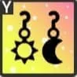
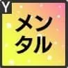

フィルタ・並び替え▲
| ★ | 入力チェック | ID | キャラ | アイドル名 | 初期レアリティ | 傾向 | タイプ | 構成 | 衣装・ヘアスタイル | 覚醒衣装 | ボーカル | ダンス | ビジュアル | スタミナ | ライブスキル1名前 | ライブスキル1効果 | ライブスキル2名前 | ライブスキル2効果 | ライブスキル3名前 | ライブスキル3効果 | 覚醒スキル名前 | 覚醒スキル効果 | エール | 入手方法 | 実装日 |
|---|---|---|---|---|---|---|---|---|---|---|---|---|---|---|---|---|---|---|---|---|---|---|---|---|---|
| OK | 1 | 小美山愛 |  嘘から出た実 小美山愛 | ★3 | ボーカル | サポーター | APP | 73271 | 58974 | 51825 | 4437 | 【A】999回！ | 370%のスコア獲得<br>ボーカルが高い1人に7段階ボーカル上昇効果[25ビート]<br>ボーカルが高い1人の低下効果回復<br>スタミナ:114 CT:30 | 【P】たゆまぬ努力 | ボーカルが高い1人に9段階ビートスコア上昇効果[38ビート]<br>ボーカルが高い1人に10段階消費スタミナ低下効果[38ビート]<br>スタミナ:237 CT:50 | 【P】仲間の重み | ビート時 120%のスコア獲得<br>スタミナ:169 確率10% CT:35 | 恒常 | 2021/6/24 | ||||||
| OK | 2 | 小美山愛 |  ごほうび発見 小美山愛 | ★4 | ビジュアル | サポーター | AAP | ベーシックスタイル | 65912 | 59921 | 73902 | 5510 | 【A】おしゃれは足元から | 430%のスコア獲得<br>スタミナが低い1人のスタミナを5700回復<br>スタミナ:161 CT:40 | 【A】お気に入り発見 | 480%のスコア獲得<br>ビジュアルが高い3人に8段階クリティカル率上昇効果[38ビート]<br>ビジュアルが高い3人に6段階ビジュアル上昇効果[38ビート]<br>自身に不調効果[50ビート]<br>スタミナ:196 CT:30 | 【P】気分上々 | クリティカル発動時 110%のスコア獲得<br>スタミナ:154 CT:25 | 恒常 | 2021/6/24 | |||||
| OK | 3 | 小美山愛 |  掴みとる夢 小美山愛 | ★5 | ダンス | スコアラー | SPAP | ノーブルリリーズ | 58870 | 90407 | 67280 | 5220 | 【SP】限界超えても | 1800%のスコア獲得<br>自身に6段階ダンス上昇効果[78ビート]<br>スタミナ:563 | 【A】まっすぐな情熱 | 490%のスコア獲得、強化効果が多い程効果上昇<br>スタミナ:157 CT:30 | 【P】新たな息吹 | ビート時 自身に4段階ビートスコア上昇効果[75ビート]<br>スタミナ:174 確率10% CT:30 | 恒常 | 2021/6/24 | |||||
| OK | 4 | 井川葵 |  ホームグラウンド 井川葵 | ★3 | ダンス | スコアラー | SPAP | 46465 | 73271 | 53613 | 5423 | 【SP】実績なんて関係ないと思う | 1300%のスコア獲得<br>クリティカル発動時 510%のスコア獲得<br>スタミナ:473 | 【A】恵みの雨 | 420%のスコア獲得<br>自身に7段階クリティカル率上昇効果[30ビート]<br>スタミナ:133 CT:30 | 【P】雨空見上げて | クリティカル率上昇状態の時<br>クリティカル発動時 150%のスコア獲得<br>スタミナ:211 CT:50 | 恒常 | 2021/6/24 | ||||||
| OK | 5 | 井川葵 |  冷めた夜 井川葵 | ★4 | ダンス | スコアラー | SPAP | ベーシックスタイル | 51931 | 81891 | 59921 | 6061 | 【SP】僕は僕以外の人にはなれない | 1320%のスコア獲得、コンボ数が多い程効果上昇<br>スタミナ:1039 | 【A】ラフコーデ | 380%のスコア獲得<br>50コンボ以上時 110%のスコア獲得<br>100コンボ以上時 150%のスコア獲得<br>スタミナ:186 CT:40 | 【P】いつもとは違う夜 | 50コンボ以上時 自身に5段階クリティカル率上昇効果[34ビート]<br>100コンボ以上時 自身に6段階ダンス上昇効果[34ビート]<br>スタミナ:248 CT:50 | 恒常 | 2021/6/24 | |||||
| OK | 6 | 井川葵 |  濡れた髪は何を語る 井川葵 | ★5 | ダンス | バッファー | AAP | ノーブルリリーズ | 63075 | 77792 | 69382 | 5800 | 【A】熱狂の余韻 | 560%のスコア獲得<br>スコアラータイプ2人に5段階クリティカル率上昇効果[80ビート]<br>スタミナ:187 CT:50 | 【A】ステージの華 | 390%のスコア獲得<br>スコアラータイプ2人の強化効果を7延長<br>スタミナ:131 CT:50 | 【P】安堵の笑顔 | 誰かがSPスキル発動前<br>対象1人に9段階ダンス上昇効果[32ビート]<br>スタミナ:272 CT:50 | 恒常 | 2021/6/24 | |||||
| OK | 7 | 白石千紗 |  課題クリア！ 白石千紗 | ★3 | ビジュアル | バッファー | AAP | 57188 | 50039 | 71485 | 4930 | 【A】一緒ならばきっと | 380%のスコア獲得<br>ビジュアルが高い3人に5段階ビジュアル上昇効果[35ビート]<br>スタミナ:133 CT:30 | 【A】束の間の休息 | 480%のスコア獲得<br>スタミナ:135 CT:30 | 【P】褒めて伸ばして | スタミナ80%以上の時 120%のスコア獲得<br>センターに6段階クリティカル率上昇効果[21ビート]<br>スタミナ:220 CT:50 | 恒常 | 2021/6/24 | ||||||
| OK | 8 | 白石千紗 |  昼下がりのお買いもの 白石千紗 | ★4 | ボーカル | サポーター | APP | ベーシックスタイル | 73902 | 65912 | 59921 | 5510 | 【A】ショッピングガール | 580%のスコア獲得<br>ボーカルが高い3人の低下効果回復<br>スタミナ:175 CT:50 | 【P】幸せな瞬間 | クリティカル発動時<br>スコアラータイプ1人に10段階ビートスコア上昇効果[46ビート]<br>【ライブバトルのみ】同じレーンの相手に4段階ボーカル低下効果[35ビート]<br>スタミナ:467 CT:50 | 【P】レッツコーディネート | 誰かのスタミナが30%以下の時<br>対象1人に11段階Aスキルスコア上昇効果[28ビート]<br>対象1人のスタミナを4200回復<br>スタミナ:727 CT:30 | 恒常 | 2021/6/24 | |||||
| OK | 9 | 白石千紗 |  照度を増す自信 白石千紗 | ★5 | ビジュアル | バッファー | APP | アセンブルハーモニー | 67280 | 58870 | 84100 | 5800 | 【A】コーディネートセンス | 450%のスコア獲得<br>全員に6段階ビジュアル上昇効果[30ビート]<br>スタミナ:158 CT:30 | 【P】恐怖に打ち勝つ心 | ビート時 センターに5段階ビジュアル上昇効果[56ビート]<br>スタミナ:230 確率10％ CT:30 | 【P】シュシュの力 | 誰かがSPスキル発動前<br>対象1人に8段階の集目効果[30ビート]<br>165%のスコア獲得<br>スタミナ:277 CT:50 | 恒常 | 2021/6/24 | |||||
| OK | 10 | 佐伯遙子 |  後輩思いのお姉さん 佐伯遙子 | ★3 | ダンス | サポーター | APP | 51825 | 73271 | 58974 | 4437 | 【A】休みは大事 | 390%のスコア獲得<br>ダンスが高い1人に7段階ダンス上昇効果[30ビート]<br>スタミナ:135 CT:30 | 【P】心頭冷却 | ダンスが高い1人に7段階Aスキルスコア上昇効果[38ビート]<br>ダンスが高い1人に10段階消費スタミナ低下効果[38ビート]<br>スタミナ:239 CT:50 | 【P】笑顔を忘れず | ビート時 120%のスコア獲得<br>スタミナ:169 確率10% CT:40 | 恒常 | 2021/6/24 | ||||||
| OK | 11 | 佐伯遙子 |  全力タイムセール 佐伯遙子 | ★4 | ビジュアル | サポーター | APP | ベーシックスタイル | 61917 | 53928 | 77896 | 6061 | 【A】めげない心 | 460%のスコア獲得<br>スコアラータイプ1人に10段階スコア上昇効果[40ビート]<br>自身に20段階消費スタミナ上昇効果[20ビート]<br>スタミナ:157 CT:30 | 【P】節約上手 | ビート時 145%のスコア獲得<br>スタミナ:145 確率10% CT:30 | 【P】本気の二十代 | 誰かがSPスキル発動前<br>対象1人に8段階ビジュアル上昇効果[33ビート]<br>スタミナ:249 CT:50 | 恒常 | 2021/6/24 | |||||
| OK | 12 | 佐伯遙子 |  とても頼れるお姉さん 佐伯遙子 | ★5 | ボーカル | バッファー | APP | アセンブルハーモニー | 81997 | 65177 | 56767 | 6380 | 【A】輝く一等星 | 450%のスコア獲得<br>全員に6段階ボーカル上昇効果[30ビート]<br>スタミナ:158 CT:30 | 【P】大人の嗜み | スコアラータイプ1人に9段階Aスキルスコア上昇効果[39ビート]<br>スタミナ:265 CT:45 | 【P】対等な先輩 | 誰かがSPスキル発動前<br>対象1人の強化効果を16延長<br>対象1人に8段階クリティカル率上昇効果[28ビート]<br>スタミナ:438 ライブ中1回のみ | 恒常 | 2021/6/24 | |||||
| OK | 13 | 赤崎こころ |  たまには本気で 赤崎こころ | ★3 | ダンス | バッファー | AAP | 50039 | 71485 | 57188 | 4930 | 【A】オールアウト | 420%のスコア獲得<br>スタミナ50%以下の時<br>ダンスが高い3人に7段階クリティカル率上昇効果[37ビート]<br>スタミナ:141 CT:30 | 【A】全力トレーニング | 390%のスコア獲得<br>自身に7段階ダンス上昇効果[30ビート]<br>スタミナ:135 CT:30 | 【P】せんぱい達の背中を | クリティカル発動時 160%のスコア獲得<br>スタミナ:225 CT:60 | 恒常 | 2021/6/24 | ||||||
| OK | 14 | 赤崎こころ |  無邪気ないたずらっ子 赤崎こころ | ★4 | ボーカル | スコアラー | SPAP | ベーシックスタイル | 85886 | 63916 | 55926 | 4959 | 【SP】キラキラアイドルスマイル！ | 1690%のスコア獲得、残スタミナが少ない程効果上昇<br>スタミナ:536 | 【A】ケロケロ～ | 430%のスコア獲得<br>スタミナ50%以下の時<br>自身に9段階ボーカル上昇効果[35ビート]<br>スタミナ:159 CT:30 | 【P】ドタバタ昼下がり | 自身に14段階スコア上昇効果[41ビート]<br>自身に20段階消費スタミナ上昇効果[40ビート]<br>スタミナ:272 CT:60 | 恒常 | 2021/6/24 | |||||
| OK | 15 | 赤崎こころ |  新生リズノワの誇り 赤崎こころ | ★5 | ビジュアル | サポーター | APP | ノーブルリリーズ | 69382 | 63075 | 77792 | 5800 | 【A】アイドルスマイル | 610%のスコア獲得<br>全員のCTを15減少<br>スタミナ:196 CT:60 | 【P】期待の新戦力 | 誰かがAスキル発動前<br>対象1人に10段階Aスキルスコア上昇効果[41ビート]<br>スタミナ:310 CT:60 | 【P】脳殺ポージング | ビート時 自身に4段階ビートスコア上昇効果[75ビート]<br>スタミナ:174 確率10% CT:30 | 恒常 | 2021/6/24 | |||||
| OK | 16 | 長瀬琴乃 |  見なれた光景 長瀬琴乃 | ★3 | ボーカル | バッファー | AAP | 71485 | 57188 | 50039 | 4930 | 【A】暴走する親切心 | 390%のスコア獲得<br>センターに7段階ボーカル上昇効果[30ビート]<br>スタミナ:135 CT:30 | 【A】驚愕のレッスンルーム | 480%のスコア獲得<br>スタミナ:135 CT:30 | 【P】お疲れ様の二人 | 誰かがSPスキル発動前<br>対象1人に7段階ボーカル上昇効果[35ビート]<br>スタミナ:231 CT:60 | 恒常 | 2021/6/24 | ||||||
| OK | 17 | 長瀬琴乃 |  センチメンタルな午後 長瀬琴乃 | ★4 | ビジュアル | スコアラー | SPAP | ベーシックスタイル | 59921 | 51931 | 81891 | 6061 | 【SP】今度一緒に歌おうか | 1350%のスコア獲得<br>クリティカル発動時 750%のスコア獲得<br>スタミナ:538 | 【A】窓の向こうには | 530%のスコア獲得<br>スタミナ:149 CT:30 | 【P】とあるレイニーデイ | クリティカル発動時 170%のスコア獲得<br>スタミナ:238 CT:60 | 恒常 | 2021/6/24 | |||||
| OK | 18 | 長瀬琴乃 |  イノセントステージ 長瀬琴乃 | ★5 | ボーカル | バッファー | SPAP | クイーンオブザナイト | 84100 | 67280 | 58870 | 5800 | 【SP】月の光を手に | 1900%のスコア獲得<br>全員に7段階クリティカル率上昇効果[110ビート]<br>スタミナ:963 | 【A】最高の私を | 430%のスコア獲得、クリティカル率上昇状態の段階数が多い程効果上昇<br>隣接するアイドルに4段階ボーカル上昇効果[25ビート]<br>スタミナ:319 CT:35 | 【P】月下の歌姫 | クリティカル率アップ状態の時 自身に8段階ボーカル上昇効果[35ビート]<br>スタミナ:230 CT:50 | 恒常 | 2021/6/24 | |||||
| OK | 19 | 早坂芽衣 |  バランス感覚UP 早坂芽衣 | ★3 | ビジュアル | スコアラー | SPAP | 55400 | 48251 | 75059 | 4930 | 【SP】トリカラ大好き | 1700%のスコア獲得<br>スタミナ:478 | 【A】特訓はタイヤの上で | 420%のスコア獲得、強化効果が多い程効果上昇<br>スタミナ:135 CT:30 | 【P】天性のバランス感覚 | 自身に7段階ビジュアル上昇効果[32ビート]<br>スタミナ:183 CT:50 | 恒常 | 2021/6/24 | ||||||
| OK | 20 | 早坂芽衣 |  メイクアップタ～イム 早坂芽衣 | ★4 | ボーカル | サポーター | APP | ベーシックスタイル | 73902 | 65912 | 59921 | 5510 | 【A】イチオシコスメ | 440%のスコア獲得<br>スコアラータイプ2人のスタミナを5200回復<br>スタミナ:163 CT:40 | 【P】キュートにキメて | スタミナ80%以上の時<br>90%のスコア獲得、ファン数割合が少ない程効果上昇<br>自身のCTを22減少<br>スタミナ:331 CT:60 | 【P】ガールズトーク | センターに9段階スコア上昇効果[25ビート]<br>センターのスタミナを2900回復<br>スタミナ:229 CT:70 | 恒常 | 2021/6/24 | |||||
| OK | 21 | 早坂芽衣 |  カメラ越しの笑顔 早坂芽衣 | ★5 | ダンス | スコアラー | SPAA | クイーンオブザナイト | 54665 | 86202 | 63075 | 6380 | 【SP】ここから宇宙へ！ | 2000%のスコア獲得<br>スタミナ:562 | 【A】水面の私へ | 520%のスコア獲得、残スタミナが多い程効果上昇<br>スタミナ:188 CT:50 | 【A】ガールミーツキャット | 430%のスコア獲得<br>自身に9段階スコア上昇効果[30ビート]<br>スタミナ:140 CT:30 | 恒常 | 2021/6/24 | |||||
| OK | 22 | 伊吹渚 |  背中を追って 伊吹渚 | ★3 | ボーカル | サポーター | APP | 73271 | 58974 | 51825 | 4437 | 【A】背中追いかけて | 400%のスコア獲得<br>スタミナが低い1人のスタミナを4800回復<br>スタミナ:146 CT:40 | 【P】青春全力ダッシュ | センターに8段階ボーカル上昇効果[36ビート]<br>スタミナ:236 CT:50 | 【P】まだまだ前へ | ビート時 120%のスコア獲得<br>スタミナ:169 確率10% CT:40 | 恒常 | 2021/6/24 | ||||||
| OK | 23 | 伊吹渚 |  おひさまダイアリー 伊吹渚 | ★4 | ダンス | バッファー | AAP | ベーシックスタイル | 59921 | 73902 | 65912 | 5510 | 【A】春色ダイアリー | 360%のスコア獲得<br>クリティカル発動時 230%のスコア獲得<br>スタミナ:166 CT:40 | 【A】思い馳せて | 460%のスコア獲得<br>スタミナ60%以上の時 ダンスが高い3人に8段階クリティカル率上昇効果[40ビート]<br>スタミナ:157 CT:30 | 【P】うららかな午後 | クリティカル率アップ状態の時 自身に7段階ダンス上昇効果[40ビート]<br>スタミナ:230 CT:60 | 恒常 | 2021/6/24 | |||||
| OK | 24 | 伊吹渚 |  背中をあずけて 伊吹渚 | ★5 | ビジュアル | サポーター | APP | クイーンオブザナイト | 69382 | 60972 | 86202 | 5220 | 【A】分かち合う喜び | 480%のスコア獲得<br>全員のスタミナを4800回復<br>スタミナ:183 CT:50 | 【P】内緒の気持ち | 誰かのスタミナが50%以下の時<br>対象1人のスタミナを3800回復<br>対象1人に6段階Aスキルスコア上昇効果[32ビート]<br>スタミナ:328 CT:50 | 【P】二人で見た光景 | 誰かがSPスキル発動前<br>対象1人に7段階クリティカル係数上昇効果[37ビート] <br>対象1人に15段階消費スタミナ低下効果[45ビート]<br>スタミナ:258 CT:60 | 恒常 | 2021/6/24 | |||||
| OK | 25 | 一ノ瀬怜 |  夜の自主トレ 一ノ瀬怜 | ★3 | ダンス | サポーター | AAP | 51825 | 73271 | 58974 | 4437 | 【A】時に孤独に | 350%のスコア獲得<br>ダンスが高い3人のCTを25減少<br>スタミナ:134 CT:30 | 【A】仲間と一緒に | 400%のスコア獲得<br>スタミナが低い1人のスタミナを4800回復<br>スタミナ:146 CT:40 | 【P】万事徹底 | ビート時 120%のスコア獲得<br>スタミナ:169 確率10% CT:40 | 恒常 | 2021/6/24 | ||||||
| OK | 26 | 一ノ瀬怜 |  密かなお楽しみ 一ノ瀬怜 | ★4 | ダンス | スコアラー | SPAP | ベーシックスタイル | 51931 | 81891 | 59921 | 6061 | 【SP】必ずトップになろう！ | 1200%のスコア獲得、強化効果が多い程効果上昇<br>ダンス上昇状態の時 550%のスコア獲得<br>スタミナ:524 | 【A】家族の力 | 530%のスコア獲得<br>スタミナ:149 CT:30 | 【P】負けない気持ち | ダンス上昇状態の時<br>自身に8段階ダンス上昇効果[44ビート]<br>自身に10段階消費スタミナ上昇効果[65ビート]<br>スタミナ:289 CT:65 | 恒常 | 2021/6/24 | |||||
| OK | 27 | 一ノ瀬怜 |  高台をかける薫風 一ノ瀬怜 | ★5 | ダンス | バッファー | APP | アセンブルハーモニー | 58870 | 84100 | 67280 | 5800 | 【A】優勝への決意 | 450%のスコア獲得<br>全員に6段階ダンス上昇効果[30ビート]<br>スタミナ:158 CT:30 | 【P】踊る理由 | 170%のスコア獲得<br>自身に2段階クリティカル率上昇効果[45ビート]<br>スタミナ:281 CT:50 | 【P】精一杯の恩返し | クリティカル発動時 85%のスコア獲得<br>自身のCTを19減少<br>スタミナ:264 CT:60 | 恒常 | 2021/6/24 | |||||
| OK | 28 | 神崎莉央 |  折れない心 神崎莉央 | ★3 | ボーカル | バッファー | APP | 71485 | 57188 | 50039 | 4930 | 【A】束の間の休息 | 410%のスコア獲得<br>スコアラータイプ2人に6段階ボーカル上昇効果[25ビート]<br>スタミナ:134 CT:30 | 【P】まだまだ出来るはず | 170%のスコア獲得<br>スタミナ:238 CT:50 | 【P】止めない歩み | 誰かがAスキル発動前 対象1人に7段階ボーカル上昇効果[32ビート]<br>スタミナ:183 CT:50 | 恒常 | 2021/6/24 | ||||||
| OK | 29 | 神崎莉央 |  スイーツライフ 神崎莉央 | ★4 | ダンス | バッファー | AAP | ベーシックスタイル | 55926 | 79895 | 63916 | 5510 | 【A】映えパンケーキ | 440%のスコア獲得<br>クリティカル率上昇状態の時 150%のスコア獲得<br>スタミナ:166 CT:40 | 【A】見られちゃった | 430%のスコア獲得<br>自身に8段階ダンス上昇効果[30ビート]<br>スタミナ:150 CT:30 | 【P】パワー注入 | クリティカル率上昇状態の時 自身に12段階スコア上昇効果[40ビート]<br>スタミナ:228 CT:60 | 恒常 | 2021/6/24 | |||||
| OK | 30 | 神崎莉央 |  空気を震わせて 神崎莉央 | ★5 | ボーカル | スコアラー | SPAP | ノーブルリリーズ | 86202 | 63075 | 54665 | 6380 | 【SP】気高く咲き誇れ | 1550%のスコア獲得、残スタミナが多い程効果上昇<br>スタミナ:561 | 【A】圧巻のステージ | 520%のスコア獲得<br>ボーカル上昇状態の時 自身のスタミナを1600回復<br>スタミナ:157 CT:30 | 【P】アイドルの誇り | 自身に8段階ボーカル上昇効果[29ビート]<br>自身に8段階消費スタミナ低下効果[34ビート]<br>スタミナ:218 CT:50 | 恒常 | 2021/6/24 | |||||
| OK | 31 | 天動瑠依 |  秘密会議 天動瑠依 | ★3 | ビジュアル | サポーター | APP | 58974 | 51825 | 73271 | 4437 | 【A】作戦通りに | 330%のスコア獲得<br>スコアラータイプ2人のスタミナを3800回復<br>スコアラータイプ2人に7段階ビートスコア上昇効果[40ビート]<br>スタミナ:146 CT:40 | 【P】不動のセンター | 50コンボ以上時 センターに9段階ビジュアル上昇効果[34ビート]<br>スタミナ:251 CT:50 | 【P】厚い人望 | ビート時 自身のスタミナを4400回復<br>スタミナ:191 確率10% CT:50 | 恒常 | 2021/6/24 | ||||||
| OK | 32 | 天動瑠依 |  ほっと帰り道 天動瑠依 | ★4 | ボーカル | スコアラー | SPAA | ベーシックスタイル | 83889 | 61917 | 53928 | 5510 | 【SP】少しくらいいいよね？ | 1630%のスコア獲得、コアファン率が多い程効果上昇<br>スタミナ:533 | 【A】憩いのひととき | 450%のスコア獲得<br>スタミナ60%以上の時 自身に7段階ボーカル上昇効果[30ビート]<br>スタミナ:152 CT:30 | 【A】照れくさい日常 | 430%のスコア獲得、残スタミナが多い程効果上昇<br>スタミナ:156 CT:50 | 恒常 | 2021/6/24 | |||||
| OK | 33 | 天動瑠依 |  ありのままの姿で 天動瑠依 | ★5 | ボーカル | バッファー | AAP | シュヴァリエール | 84100 | 67280 | 58870 | 5800 | 【A】夜の勝利宣言 | 550%のスコア獲得<br>スコアラータイプ2人に8段階ボーカル上昇効果[31ビート]<br>スタミナ:186 CT:50 | 【A】新人トップたる所以 | 550%のスコア獲得<br>自身に8段階クリティカル率上昇効果[45ビート]<br>スタミナ:188 CT:50 | 【P】努力の結晶 | 誰かがSPスキル発動前 対象1人の強化効果を3段階増強<br>スタミナ:341 CT:56 | 恒常 | 2021/6/24 | |||||
| OK | 34 | 白石沙季 |  早朝猛特訓 白石沙季 | ★3 | ボーカル | サポーター | AAP | 73271 | 58974 | 51825 | 4437 | 【A】ハードレッスン | 380%のスコア獲得<br>ボーカルが高い3人に5段階ボーカル上昇効果[35ビート]<br>スタミナ:133 CT:30 | 【A】一息ついて | 400%のスコア獲得<br>スタミナが低い1人のスタミナを4800回復<br>スタミナ:146 CT:40 | 【P】元来、生真面目 | 50コンボ以上時<br>センターに8段階Aスキルスコア上昇効果[34ビート]<br>自身に5段階スタミナ消費増加効果[45ビート]<br>スタミナ:205 CT:45 | 恒常 | 2021/6/24 | ||||||
| OK | 35 | 白石沙季 |  もふもふショッピング 白石沙季 | ★4 | ビジュアル | バッファー | AAP | ベーシックスタイル | 67910 | 61917 | 75900 | 4959 | 【A】一目惚れの行方 | 520%のスコア獲得<br>スタミナ80%以上の時 全員に6段階クリティカル率上昇効果[35ビート]<br>スタミナ:167 CT:40 | 【A】乙女爆発 | 440%のスコア獲得<br>クリティカル率アップ状態の時 150%のスコア獲得<br>スタミナ:166 CT:40 | 【P】出会いは突然に | 自身に7段階ビジュアル上昇効果[34ビート]<br>スタミナ:196 CT:50 | 恒常 | 2021/6/24 | |||||
| OK | 36 | 白石沙季 |  手を取り合って 白石沙季 | ★5 | ダンス | サポーター | APP | クイーンオブザナイト | 58870 | 84100 | 67280 | 5800 | 【A】先輩と姉の間 | 580%のスコア獲得<br>全員に8段階スコア上昇効果[30ビート]<br>スタミナ:187 CT:50 | 【P】気持ち通じ合う手 | 誰かがAスキル発動前 対象1人に9段階Aスキルスコア上昇効果[37ビート]<br>スタミナ:251 CT:40 | 【P】高まる気持ち | 誰かのスタミナが70%以下の時 対象1人のスタミナを5300回復<br>スタミナ:236 CT:50 | 恒常 | 2021/6/24 | |||||
| OK | 37 | 川咲さくら |  元気100倍！ 川咲さくら | ★3 | ボーカル | スコアラー | SPAP | 73271 | 53613 | 46465 | 5423 | 【SP】私も輝きたい！ | 1070%のスコア獲得、コンボ数が多い程効果上昇<br>スタミナ:481 | 【A】青春の汗 | 480%のスコア獲得<br>スタミナ:135 CT:30 | 【P】笑顔の裏側 | スタミナ80%以上の時 自身に8段階ボーカル上昇効果[37ビート]<br>スタミナ:242 CT:60 | 恒常 | 2021/6/24 | ||||||
| OK | 38 | 川咲さくら |  ジューシーランチ 川咲さくら | ★4 | ダンス | サポーター | APP | ベーシックスタイル | 57923 | 81891 | 65912 | 4959 | 【A】とんかつパワー | 430%のスコア獲得<br>スタミナが低い1人のスタミナを5700回復<br>スタミナ:161 CT:40 | 【P】ソースは多め？ | 50コンボ以上時 全員に10段階Aスキルスコア上昇効果[46ビート]<br>スタミナ:496 ライブ中1回のみ | 【P】胸の高鳴り | 自身に12段階スコア上昇効果[38ビート]<br>スタミナ:217 CT:60 | 恒常 | 2021/6/24 | |||||
| OK | 39 | 川咲さくら |  夢の共演 川咲さくら | ★5 | ボーカル | スコアラー | SPAP | アセンブルハーモニー | 88305 | 65177 | 56767 | 5800 | 【SP】太陽の光と共に | 1700%のスコア獲得、強化効果が多い程効果上昇<br>スタミナ:545 | 【A】大好きなあのキャラ | 450%のスコア獲得<br>自身に9段階ボーカル上昇効果[30ビート]<br>スタミナ:159 CT:30 | 【P】人生の倍返し | 100コンボ以上時<br>140%のスコア獲得<br>自身に9段階ボーカル上昇効果[32ビート]<br>スタミナ:432 ライブ中1回のみ | 恒常 | 2021/6/24 | |||||
| OK | 40 | 奥山すみれ |  努力のたまもの 奥山すみれ | ★3 | ビジュアル | スコアラー | SPAP | 55400 | 48251 | 75059 | 4930 | 【SP】世界で一番の幸せ者です！ | 1070%のスコア獲得、コンボ数が多い程効果上昇<br>スタミナ:481 | 【A】準備万端！ | 480%のスコア獲得<br>スタミナ:135 CT:30 | 【P】注目あびて | 50コンボ以上時 自身に8段階ビジュアル上昇効果[60ビート]<br>スタミナ:394 ライブ中1回のみ | 恒常 | 2021/6/24 | ||||||
| OK | 41 | 奥山すみれ |  ギリギリセーフ 奥山すみれ | ★4 | ダンス | バッファー | AAP | ベーシックスタイル | 57923 | 81891 | 65912 | 4959 | 【A】士気高める瞳 | 450%のスコア獲得<br>スタミナ50%以下の時 ダンスが高い3人に6段階ダンス上昇効果[35ビート]<br>スタミナ:195 CT:30 | 【A】あふれる活力 | 550%のスコア獲得<br>スタミナ50%以下の時 センターの強化効果を2段階増強<br>スタミナ:184 CT:50 | 【P】ギリギリセーフ | スタミナ70%以下の時 ダンスが高い3人に7段階ダンス上昇効果[32ビート]<br>スタミナ:402 CT:50 | 恒常 | 2021/6/24 | |||||
| OK | 42 | 奥山すみれ |  小さなヒロイン 奥山すみれ | ★5 | ビジュアル | スコアラー | SPAP | シュヴァリエール | 65177 | 56767 | 88305 | 5800 | 【SP】世界を翔る！ | 1800%のスコア獲得<br>自身に10段階スコア上昇効果[80ビート]<br>スタミナ:562 | 【A】イノセントアイドル | 470%のスコア獲得、残スタミナが多い程効果上昇<br>スタミナ:170 CT:40 | 【P】頭ぽんぽん | スコア上昇状態の時 330%のスコア獲得<br>スタミナ:463 ライブ中1回のみ | 恒常 | 2021/6/24 | |||||
| OK | 43 | 成宮すず |  へろへろランニング 成宮すず | ★3 | ビジュアル | スコアラー | SPAP | 53613 | 46465 | 73271 | 5423 | 【SP】なかにゃかやりますわね！ | 1070%のスコア獲得、コンボ数が多い程効果上昇<br>スタミナ:481 | 【A】ガチンココーチ | 480%のスコア獲得<br>スタミナ:135 CT:30 | 【P】限界ランニング | ビート時 自身に3段階Aスキルスコア上昇効果[75ビート]<br>スタミナ:170 確率10% CT:30 | 恒常 | 2021/6/24 | ||||||
| OK | 44 | 成宮すず |  わくわくクッキング 成宮すず | ★4 | ボーカル | サポーター | APP | ベーシックスタイル | 75900 | 67910 | 61917 | 4959 | 【A】幸せ三段重ね | 430%のスコア獲得<br>スタミナが低い1人のスタミナを5700回復<br>スタミナ:161 CT:40 | 【A】クリーミーガール | 430%のスコア獲得<br>スタミナ70%以下の時<br>全員のスタミナを4300回復<br>全員に5段階Aスキルスコア上昇効果[30ビート]<br>スタミナ:329 CT:40 | 【P】よくできました！ | ビート時 センターに4段階Aスキルスコア上昇効果[57ビート]<br>スタミナ:172 確率10% CT:30 | 恒常 | 2021/6/24 | |||||
| OK | 45 | 成宮すず |  パワフルガール 成宮すず | ★5 | ビジュアル | スコアラー | SPAP | クイーンオブザナイト | 63075 | 54665 | 86202 | 6380 | 【SP】ここから未来へ | 1250%のスコア獲得、コンボ数が多い程効果上昇<br>スタミナ:562 | 【A】リトルスター | 470%のスコア獲得<br>自身に10段階スコア上昇効果[35ビート]<br>スタミナ:157 CT:30 | 【P】女王の資質 | ビート時 自身に4段階Aスキルスコア上昇効果[63ビート]<br>スタミナ:191 確率10% CT:30 | 恒常 | 2021/6/24 | |||||
| OK | 46 | 兵藤雫 |  つかの間の休息 兵藤雫 | ★3 | ボーカル | バッファー | AAP | 71485 | 57188 | 50039 | 4930 | 【A】予習復習 | 480%のスコア獲得<br>ボーカルが高い3人に5段階Aスキルスコア上昇効果[35ビート]<br>スタミナ:159 CT:50 | 【A】前進あるのみ | 390%のスコア獲得<br>自身に7段階ボーカル上昇効果[30ビート]<br>スタミナ:135 CT:30 | 【P】支え合う仲間 | クリティカル発動時<br>90%のスコア獲得<br>自身に4段階Aスキルスコア上昇効果[25ビート]<br>スタミナ:202 CT:50 | 恒常 | 2021/6/24 | ||||||
| OK | 47 | 兵藤雫 |  潜入、ドームツア 兵藤雫 | ★4 | ビジュアル | バッファー | AAP | ベーシックスタイル | 61917 | 53928 | 77896 | 6061 | 【A】これぞアイドルの力 | 450%のスコア獲得<br>センターに7段階ビジュアル上昇効果[35ビート]<br>自身に3段階ビジュアル低下効果[20ビート]<br>スタミナ:149 CT:30 | 【A】無垢な笑顔 | 570%のスコア獲得<br>ビジュアルが高い3人に8段階クリティカル率上昇効果[46ビート]<br>スタミナ:322 CT:50 | 【P】元気の源 | クリティカル発動時 自身のスタミナを4700回復<br>スタミナ:206 CT:50 | 恒常 | 2021/6/24 | |||||
| OK | 48 | 兵藤雫 |  光の波 兵藤雫 | ★5 | ボーカル | サポーター | APP | アセンブルハーモニー | 77792 | 69382 | 63075 | 5800 | 【A】夢に見た光景 | 470%のスコア獲得<br>全員にコンボ継続効果[75ビート]<br>スタミナ:157 CT:30 | 【P】尊きアイドル文化 | スコアラータイプ2人に16段階消費スタミナ低下効果[45ビート]<br>自身に8段階ビートスコア上昇効果[45ビート]<br>スタミナ:281 CT:50 | 【P】笑顔の練習 | 誰かがAスキル発動前<br>対象1人に7段階Aスキルスコア上昇効果[36ビート]<br>自身に8段階のステルス効果[30ビート]<br>スタミナ:218 CT:50 | 恒常 | 2021/6/24 | |||||
| OK | 49 | 鈴村優 |  自主トレ日和 鈴村優 | ★3 | ダンス | バッファー | AAP | 50039 | 71485 | 57188 | 4930 | 【A】足から始まる！ | 390%のスコア獲得<br>センターに7段階ダンス上昇効果[30ビート]<br>スタミナ:135 CT:30 | 【A】念には念を | 400%のスコア獲得<br>50コンボ以上時 自身に8段階クリティカル率上昇効果[45ビート]<br>スタミナ:138 CT:30 | 【P】まだまだこれから | クリティカル発動時<br>85%のスコア獲得 自身のCTを13減少<br>スタミナ:218 CT:60 | 恒常 | 2021/6/24 | ||||||
| OK | 50 | 鈴村優 |  至福の時間 鈴村優 | ★4 | ボーカル | スコアラー | SPAA | ベーシックスタイル | 83889 | 61917 | 53928 | 5510 | 【SP】もう、どうしたん？ | 1480%のスコア獲得、残スタミナが多い程効果上昇<br>スタミナ:536 | 【A】あの子のために | 440%のスコア獲得<br>スタミナ60%以上の時 自身に7段階ボーカル上昇効果[35ビート]<br>スタミナ:153 CT:30 | 【A】くすぐったい午後 | 430%のスコア獲得<br>スタミナ80%以上の時 自身に8段階クリティカル率上昇効果[35ビート]<br>スタミナ:135 CT:30 | 恒常 | 2021/6/24 | |||||
| OK | 51 | 鈴村優 |  白の衝撃 鈴村優 | ★5 | ビジュアル | サポーター | APP | シュヴァリエール | 69382 | 60972 | 86202 | 5220 | 【A】ナイスアシスト！ | 450%のスコア獲得<br>スタミナが低い1人のスタミナを6400回復<br>スタミナ:172 CT:40 | 【P】駆け引き上手 | 全員に5段階ビートスコア上昇効果[45ビート]<br>全員の低下効果回復<br>スタミナ:280 CT:50 | 【P】差し伸べられる手 | 誰かがSPスキル発動前<br>対象1人のスタミナを5800回復<br>対象1人に8段階消費スタミナ低下効果[33ビート]<br>スタミナ:277 CT:50 |  | 恒常 | 2021/6/24 | ||||
| OK | 52 | 長瀬琴乃 |  出発の時 長瀬琴乃 | ★2 | ダンス | サポーター | APP | 63075 | 77792 | 69382 | 5800 | 【A】みんなのお見送り | 450%のスコア獲得<br>誰かがスコア上昇状態の時 対象2人のスタミナを6700回復<br>スタミナ:176 CT:40 | 【P】行ってきます | 誰かがAスキル発動前 対象1人に9段階Aスキルスコア上昇効果[37ビート]<br>スタミナ:251 CT:40 | 【P】今日も良い日 | 誰かがSPスキル発動前 対象1人に9段階ダンス上昇効果[32ビート]<br>スタミナ:272 CT:50 | その他 | 2021/6/24 | ||||||
| OK | 53 | 天動瑠依 |  夕暮れのホームで 天動瑠依 | ★1 | ダンス | スコアラー | SPAP | 51931 | 81891 | 59921 | 6061 | 【SP】気を付けてね！ | 1180%のスコア獲得、残スタミナが多い程効果上昇<br>集目状態の時 500%のスコア獲得<br>スタミナ:533 | 【A】夕日に照らされ | 460%のスコア獲得、コアファン率が多い程効果上昇<br>スタミナ:150 CT:30 | 【P】ひと時の別れ | 自身に7段階の集目効果[50ビート]<br>自身に6段階ダンス上昇効果[26ビート]<br>スタミナ:204 CT:50 | その他 | 2021/6/24 | ||||||
| OK | 54 | 神崎莉央 |  雨の中の帰路 神崎莉央 | ★1 | ビジュアル | サポーター | APP | 67910 | 61917 | 75900 | 4959 | 【A】雨音響く夜 | 470%のスコア獲得<br>センターに10段階スコア上昇効果[34ビート]<br>自身に3段階ビジュアル低下効果[21ビート]<br>スタミナ:148 CT:30 | 【P】やまない雨はない | 誰かがAスキル発動前 対象1人に8段階Aスキルスコア上昇効果[42ビート]<br>スタミナ:254 CT:50 | 【P】反省の家路 | 80%のスコア獲得<br>自身のCTを11減少<br>スタミナ:196 CT:50 | その他 | 2021/6/24 | ||||||
| OK | 55 | 川咲さくら |  夜空に咲く花 川咲さくら | ★2 | ビジュアル | バッファー | AAP | 69382 | 63075 | 77792 | 5800 | 【A】満開の花火 | 450%のスコア獲得、コンボ数が多い程効果上昇<br>自身に20段階消費スタミナ上昇効果[50ビート]<br>スタミナ:202 CT:50 | 【A】夏の思い出 | 450%のスコア獲得<br>自身に9段階ビジュアル上昇効果[30ビート]<br>スタミナ:159 CT:30 | 【P】みんなで浴衣 | 50コンボ以上時<br>ビジュアルが高い3人に7段階ビジュアル上昇効果[35ビート]<br>スタミナ:251 CT:60 | その他 | 2021/6/24 | ||||||
| OK | 56 | 鈴村優 |  秘密のフォトセッション 鈴村優 | ★5 | ダンス | サポーター | APP | トロピカルフルール | 60972 | 86202 | 69382 | 5220 | 【A】グラビア撮影ごっこ | 460%のスコア獲得<br>スタミナが低い2人のスタミナを5400回復<br>スタミナ:170 CT:40 | 【P】シャッターチャンス | センターに7段階Aスキルスコア上昇効果[35ビート]<br>センターに6段階クリティカル係数上昇効果[35ビート]<br>スタミナ:276 CT:50 | 【P】綺麗に撮ってな | 自身に10段階ビートスコア上昇効果[33ビート]<br>スタミナ:192 CT:40 | 限定 | 2021/6/30 | |||||
| OK | 57 | 佐伯遙子 |  恵みのサニーシャワー 佐伯遙子 | ★5 | ビジュアル | スコアラー | SPAP | サマーホリデイ | 67280 | 58870 | 90407 | 5220 | 【SP】狙い撃ちしちゃうわよ！ | 1000%のスコア獲得<br>センター時 1340%のスコア獲得<br>スタミナ:846 | 【A】ウォータースプラッシュ | 550%のスコア獲得<br>自身の強化効果を2段階増強<br>スタミナ:322 CT:35 | 【P】ライブオンザビーチ | クリティカル発動時<br>150%のスコア獲得<br>自身に3段階クリティカル係数上昇効果[34ビート]<br>スタミナ:453 CT:50 | 限定 | 2021/6/30 | |||||
| OK | 58 | 兵藤雫 |  ぷかぷかリゾート 兵藤雫 | ★2 | ダンス | スコアラー | SPAP | 58870 | 90407 | 67280 | 5220 | 【SP】太陽が、まぶしい | 1900%のスコア獲得<br>スタミナ:534 | 【A】盛夏到来 | 350%のスコア獲得<br>クリティカル係数アップ状態の時 210%のスコア獲得<br>スタミナ:157 CT:30 | 【P】ご機嫌プールサイド | クリティカル発動時 120%のスコア獲得<br>スタミナ:169 CT:30 | イベント | 2021/6/30 | ||||||
| OK | 59 | 奥山すみれ |  常夏ウォーターパーク 奥山すみれ | ★5 | ボーカル | サポーター | APP | トロピカルフルール | 86202 | 69382 | 60972 | 5220 | 【A】お魚さんと一緒 | 500%のスコア獲得<br>全員に10段階消費スタミナ低下効果[58ビート]<br>スタミナ:153 CT:50 | 【P】ドキドキレポート | 50コンボ以上時<br>スコアラータイプ1人に11段階スコア上昇効果[36ビート]<br>スコアラータイプ1人のスタミナを3000回復<br>スタミナ:332 CT:60 | 【P】恥ずかしいっちゃ！ | 誰かのスタミナが70%以下の時<br>対象1人のスタミナを5300回復<br>スタミナ:236 CT:50 | 恒常 | 2021/7/12 | |||||
| OK | 60 | 天動瑠依 |  真夏の恥じらいショット 天動瑠依 | ★5 | ビジュアル | バッファー | APP | トロピカルフルール | 67280 | 58870 | 84100 | 5800 | 【A】しなやかな曲線美 | 310%のスコア獲得<br>スコアラータイプ2人の強化効果を6延長<br>スタミナ:106 CT:30 | 【P】首から下はNG | スコアラータイプ1人に9段階ビジュアル上昇効果[37ビート]<br>スタミナ:273 CT:50 | 【P】浜辺でポージング | スコアラータイプ2人に5段階ビートスコア上昇効果[70ビート]<br>スコアラータイプ2人に7段階クリティカル率上昇効果[60ビート]<br>スタミナ:213 ライブ中1回のみ | 恒常 | 2021/7/21 | |||||
| OK | 61 | 早坂芽衣 |  二人きりのサンセットビーチ 早坂芽衣 | ★5 | ボーカル | バッファー | APP | ムーンライトラブサマー | 83889 | 67280 | 59080 | 5800 | 【A】笑顔照らす線香花火 | 500%のスコア獲得<br>センターに7段階クリティカル率上昇効果[35ビート]<br>スタミナ:158 CT:30 | 【P】意見をぶつけ合った成果 | スコアラータイプ2人に10段階ビートスコア上昇効果[46ビート]<br>スタミナ:280 CT:50 | 【P】恋をしてるから | 自身に7段階ボーカル上昇効果[38ビート]<br>スタミナ:218 CT:50 | 限定 | 2021/7/31 | |||||
| OK | 62 | 長瀬琴乃 |  はにかみサマームーン 長瀬琴乃 | ★5 | ダンス | スコアラー | SPAP | ムーンライトラブサマー | 59080 | 89776 | 67700 | 5220 | 【SP】水着でお客さんの前に！？ | 2000%のスコア獲得<br>スタミナ:562 | 【A】秘密のジンクス | 450%のスコア獲得<br>自身に9段階ダンス上昇効果[30ビート]<br>スタミナ:159 CT:30 | 【P】夏の正装 | 自身に8段階ビートスコア上昇効果[29ビート]<br>自身に5段階クリティカル係数上昇効果[29ビート]<br>スタミナ:198 CT:40 | 限定 | 2021/7/31 | |||||
| OK | 63 | 白石沙季 |  夏の夜に輝く星 白石沙季 | ★2 | ボーカル | サポーター | APP | 85992 | 69382 | 61182 | 5220 | 【A】満天の星空 | 460%のスコア獲得<br>ボーカルが高い1人に8段階スコア上昇効果[35ビート]<br>スタミナ:149 CT:30 | 【P】思い出の夜景 | ビート時 145%のスコア獲得<br>スタミナ:204 確率10% CT:30 | 【P】夏の空気感じて | 誰かのスタミナが70%以下の時<br>対象1人のスタミナを4100回復<br>対象1人に9段階消費スタミナ低下効果[32ビート]<br>スタミナ:213 CT:50 | イベント | 2021/7/31 | ||||||
| OK | 64 | 伊吹渚 |  光踊る砂浜のメッセージ 伊吹渚 | ★5 | ダンス | バッファー | APP | ムーンライトラブサマー | 59080 | 83679 | 67490 | 5800 | 【A】背中押すサンドアート | 460%のスコア獲得<br>スコアラータイプ2人に7段階ダンス上昇効果[30ビート]<br>スタミナ:156 CT:30 | 【P】シーサイドリフレッシュ | 誰かがSPスキル発動前<br>対象1人に9段階SPスキルスコア上昇効果[5ビート]<br>スタミナ:393 CT:50 | 【P】波打ち際のメッセージ | 自身に7段階ダンス上昇効果[38ビート]<br>スタミナ:218 CT:50 | 恒常 | 2021/8/11 | |||||
| OK | 65 | 成宮すず |  ほろにがサマーメモリーズ 成宮すず | ★5 | ボーカル | サポーター | APP | ムーンライトラブサマー | 85361 | 69592 | 61603 | 5220 | 【A】優雅な浮き輪姿 | 560%のスコア獲得<br>ボーカルが高い2人のCTを25減少<br>スタミナ:187 CT:50 | 【P】ぷかりと浮かんで | スコアラータイプ2人に6段階Aスキルスコア上昇効果[62ビート]<br>スタミナ:518 CT:50 | 【P】カメラの前で自信満々 | 85%のスコア獲得<br>自身のCTを20減少<br>スタミナ:475 CT:60 | 恒常 | 2021/8/20 | |||||
| OK | 66 | 井川葵 |  growing up！ 井川葵 | ★5 | ボーカル | スコアラー | SPAP | ザ・ラストチャンス | 91248 | 66859 | 58449 | 5220 | 【SP】成長を証明してみせるよ | 1500%のスコア獲得、ボーカル上昇状態の段階数が多い程効果上昇<br>スタミナ:574 | 【A】四人のLizNoir | 440%のスコア獲得<br>自身に5段階ビートスコア上昇効果[80ビート]<br>スタミナ:158 CT:30 | 【P】後輩達を信じて | 50コンボ以上時<br>120%のスコア獲得<br>自身に5段階ボーカル上昇効果[63ビート]<br>スタミナ:427 ライブ中1回のみ | 限定 | 2021/8/31 | |||||
| OK | 67 | 小美山愛 |  私にとって大切な曲 小美山愛 | ★5 | ビジュアル | サポーター | APP | ザ・ラストチャンス | 67280 | 58029 | 84941 | 5800 | 【A】先輩の背中を借りて | 490%のスコア獲得<br>スコアラータイプ2人に9段階スコア上昇効果[30ビート]<br>スタミナ:158 CT:30 | 【P】全開ライブ | 50コンボ以上時<br>全員に10段階Aスキルスコア上昇効果[51ビート]<br>スタミナ:550 ライブ中1回のみ | 【P】LizNoirは無敵 | 誰かがスコア上昇状態の時<br>140%のスコア獲得<br>自身に9段階のステルス効果[35ビート]<br>スタミナ:232 CT:50 | 限定 | 2021/8/31 | |||||
| OK | 68 | 神崎莉央 |  心引き締まるレッスン合宿 神崎莉央 | ★2 | ビジュアル | バッファー | AAP | 67700 | 58870 | 83679 | 5800 | 【A】センターと共に | 460%のスコア獲得<br>隣接するアイドルに6段階ビジュアル上昇効果[35ビート]<br>スタミナ80%以上の時 自身に6段階ビジュアル上昇効果[35ビート]<br>スタミナ:181 CT:50 | 【A】莉央の指導 | 410%のスコア獲得<br>ビジュアル上昇状態の時<br>隣接するアイドルの強化効果を6延長<br>スタミナ:134 CT:50 | 【P】合宿の成果 | 100%のスコア獲得、残スタミナが多い程効果上昇<br>スタミナ:181 CT:50 | イベント | 2021/8/31 | ||||||
| OK | 69 | 白石沙季 |  涙のカーテンコール 白石沙季 | ★5 | ダンス | サポーター | APP | マイフェアレディ | 60972 | 85151 | 70433 | 5220 | 【A】恋する淑女 | 550%のスコア獲得<br>全員に対象 最大スタミナの50%のスタミナ回復効果<br>スタミナ:187 CT:50 | 【P】恋のレクチャー | スコアラータイプ2人に8段階ビートスコア上昇効果[49ビート]<br>スコアラータイプ2人に10段階消費スタミナ低下効果[49ビート]<br>スタミナ:436 CT:50 | 【P】開花する演技力 | 誰かがAスキル発動前<br>対象1人に8段階Aスキルスコア上昇効果[32ビート]<br>スタミナ:193 CT:40 | 恒常 | 2021/9/10 | |||||
| OK | 70 | 一ノ瀬怜 |  失敗なんて恐れない 一ノ瀬怜 | ★5 | ビジュアル | スコアラー | SPAA | サニーダンサブル | 67490 | 59290 | 89776 | 5220 | 【SP】ウソみたいに、体が軽い | 1110%のスコア獲得、強化効果が多い程効果上昇<br>ビジュアル上昇状態の時 820%のスコア獲得<br>スタミナ:771 | 【A】負けず嫌いのダンス | 470%のスコア獲得<br>自身に9段階ビジュアル上昇効果[50ビート]<br>スタミナ:187 CT:50 | 【A】スランプ脱却 | 520%のスコア獲得<br>自身のスタミナを800回復<br>スタミナ:164 CT:50 | 恒常 | 2021/9/21 | |||||
| OK | 71 | 長瀬麻奈 |  You're my everything 長瀬麻奈 | ★5 | ボーカル | スコアラー | SPAP | ファーストステップ | 88725 | 64967 | 56557 | 5800 | 【SP】これからも、よろしくね | 1500%のスコア獲得、クリティカル率アップ状態の段階数が多い程効果上昇<br>スタミナ:563 | 【A】With my heart | 460%のスコア獲得<br>自身に5段階クリティカル率上昇効果[47ビート]<br>テンションUP状態の時<br>隣接するアイドルに5段階クリティカル率上昇効果[35ビート]<br>スタミナ:159 CT:30 | 【P】妹へ届けたい歌 | 自身に7段階テンションUP効果[37ビート]<br>スタミナ:225 CT:50 | フェス | 2021/9/28 | |||||
| OK | 72 | 川咲さくら |  あなたの光になれるように 川咲さくら | ★5 | ビジュアル | バッファー | AAP | エターナルブリリアンス | 67910 | 59290 | 83048 | 5800 | 【A】私の歌でみんなに元気を！ | 560%のスコア獲得<br>スコアラータイプ2人に8段階クリティカル率上昇効果[48ビート]<br>スタミナ:186 CT:50 | 【A】重圧を乗り越えて | 500%のスコア獲得<br>スコアラータイプ2人に6段階ビジュアル上昇効果[60ビート]<br>スタミナ:186 CT:50 | 【P】胸いっぱいの勇気 | 誰かがSPスキル発動前<br>対象1人に7段階SPスキルスコア上昇効果[5ビート]<br>スタミナ:306 CT:50 | フェス | 2021/9/28 | |||||
| OK | 73 | 佐伯遙子 |  図らずもバースデーライブ 佐伯遙子 | ★2 | ボーカル | バッファー | AAP | 84730 | 67280 | 58239 | 5800 | 【A】即席バースデーライブ | 480%のスコア獲得<br>隣接するアイドルに7段階ボーカル上昇効果[45ビート]<br>スタミナ:175 CT:50 | 【A】見てくれているはず | 530%のスコア獲得<br>誰かがボーカル上昇状態の時 センターの強化効果を2段階増強<br>スタミナ:178 CT:50 | 【P】思い出の公園 | 110%のスコア獲得<br>自身に3段階クリティカル率上昇効果[34ビート]<br>スタミナ:203 CT:50 | イベント | 2021/9/30 | ||||||
| OK | 74 | 白石千紗 |  一夜限りの聖なるステージ 白石千紗 | ★5 | ボーカル | サポーター | APP | エンジェルブレッシング | 87043 | 69172 | 60341 | 5220 | 【A】四人の心を一つに | 470%のスコア獲得<br>全員に6段階ビートスコア上昇効果[53ビート]<br>スタミナ:171 CT:40 | 【P】聖なる場所から | 50コンボ以上時<br>スコアラータイプ2人に6段階ビートスコア上昇効果[55ビート]<br>スコアラータイプ2人に13段階スコア上昇効果[55ビート]<br>スタミナ:558 ライブ中1回のみ | 【P】天使の歌声 | 130%のスコア獲得<br>スコアラータイプ2人に10段階消費スタミナ低下効果[39ビート]<br>スタミナ:222 CT:50 | 限定 | 2021/10/4 | |||||
| OK | 75 | 赤崎こころ |  私は私 赤崎こころ | ★5 | ダンス | バッファー | AAP | エンジェルブレッシング | 59290 | 83469 | 67490 | 5800 | 【A】ゴーマイウェイ！ | 550%のスコア獲得<br>隣接するアイドルに8段階ダンス上昇効果[31ビート]<br>スタミナ:186 CT:50 | 【A】こころの思うがまま | 480%のスコア獲得<br>センターに10段階の集目効果[55ビート]<br>スタミナ:149 CT:50 | 【P】大人っぽさや艶っぽさ | センターに8段階ダンス上昇効果[32ビート]<br>スタミナ:210 CT:50 | 限定 | 2021/10/4 | |||||
| OK | 76 | 神崎莉央 |  その魅力、モンスター級 神崎莉央 | ★5 | ダンス | スコアラー | SPAP | ナースオブハデス | 58239 | 91248 | 67069 | 5220 | 【SP】私は冥界のナース！ | 1320%のスコア獲得、自身の発動したスキル数が多い程効果上昇<br>スタミナ:528 | 【A】切り拓いた新境地 | 540%のスコア獲得<br>スタミナ80%以上の時 自身のCTを25減少<br>スタミナ:315 CT:30 | 【P】百年早い | 自身に7段階ダンス上昇効果[36ビート]<br>スタミナ:362 CT:40 | 恒常 | 2021/10/20 | |||||
| OK | 77 | 早坂芽衣 |  いつかまた一緒に 早坂芽衣 | ★5 | ビジュアル | スコアラー | SPAP | ムーンダンサブル | 67700 | 59290 | 89566 | 5220 | 【SP】そうじょうこうかってやつ？ | 1500%のスコア獲得、ビジュアルアップ状態の段階数が多い程効果上昇<br>スタミナ:574 | 【A】負けるもんか | 450%のスコア獲得<br>自身に9段階ビジュアル上昇効果[30ビート]<br>スタミナ:159 CT:30 | 【P】もっともっと好きになる | 80コンボ以上時 自身の強化効果を22延長<br>スタミナ:434 ライブ中1回のみ | 限定 | 2021/10/31 | |||||
| OK | 78 | 成宮すず |  撮れ高たっぷりショット 成宮すず | ★5 | ダンス | サポーター | APP | スイートレディベア | 58239 | 84941 | 67069 | 5800 | 【A】とことん付き合う | 470%のスコア獲得<br>全員にコンボ継続効果[75ビート]<br>スタミナ:157 CT:30 | 【P】全部お見通し | スコアラータイプ2人に6段階スキル成功率上昇効果[36ビート]<br>スタミナ:282 CT:50 | 【P】物怖じしないニューフェイス | ダンスが高い2人に8段階スコア上昇効果[54ビート]<br>スタミナ:216 CT:50 | 限定 | 2021/10/31 | |||||
| OK | 79 | 一ノ瀬怜 |  ココロ Distance 一ノ瀬怜 | ★2 | ダンス | バッファー | AAP | 59711 | 83259 | 67280 | 5800 | 【A】私の選んだ仕事 | 400%のスコア獲得<br>スコアラータイプ2人の強化効果を6延長<br>スタミナ:131 CT:50 | 【A】力を貸して | 620%のスコア獲得<br>スタミナ:174 CT:50 | 【P】本気の本気 | 110%のスコア獲得<br>センターに5段階ダンス上昇効果[58ビート]<br>スタミナ:392 ライブ中1回のみ | イベント | 2021/10/31 | ||||||
| OK | 80 | 兵藤雫 |  夢は、きっと叶う 兵藤雫 | ★5 | ビジュアル | バッファー | APP | 獅子舞華衣 | 67069 | 58870 | 84310 | 5800 | 【A】あの子との約束 | 450%のスコア獲得<br>スコアラータイプ2人に5段階ビジュアル上昇効果[55ビート]<br>スタミナ:162 CT:30 | 【P】夢を諦めないで | 自身に8段階ビジュアル上昇効果[43ビート]<br>スタミナ:282 CT:50 | 【P】ファンは絶対に裏切れない | センターの強化効果を3段階増強<br>スタミナ:297 CT:73 | 恒常 | 2021/11/12 | |||||
| OK | 81 | 伊吹渚 |  この瞬間の主役 伊吹渚 | ★5 | ボーカル | スコアラー | SPAA | イノセントフラワー | 90828 | 66859 | 58870 | 5220 | 【SP】ここであのスマイル！ | 1800%のスコア獲得<br>自身に12段階スコア上昇効果[78ビート]<br>スタミナ:563 | 【A】彼女が見ている景色 | 580%のスコア獲得、強化効果が多い程効果上昇<br>スタミナ:186 CT:50 | 【A】私も輝けたら | 410%のスコア獲得<br>自身に5段階クリティカル係数上昇効果[46ビート]<br>スタミナ:128 CT:50 | 恒常 | 2021/11/22 | |||||
| OK | 82 | 天動瑠依 |  白息はずむホーリーナイト 天動瑠依 | ★5 | ダンス | スコアラー | SPAP | ルミエール | 58659 | 90617 | 67280 | 5220 | 【SP】もう私のです | 1550%のスコア獲得、残スタミナが多い程効果上昇<br>スタミナ:561 | 【A】霜の衣を纏うように | 420%のスコア獲得<br>自身に10段階の集目効果[32ビート]<br>スタミナ80%以上の時 自身に3段階ダンス上昇効果[32ビート]<br>スタミナ:138 CT:30 | 【P】プレゼントのお返し | 自身に5段階クリティカル率上昇効果[40ビート]<br>自身のスタミナを2700回復<br>スタミナ:217 CT:50 | 限定 | 2021/11/30 | |||||
| OK | 83 | 奥山すみれ |  六花イルミネーション 奥山すみれ | ★5 | ボーカル | バッファー | APP | ルミエール | 84310 | 67069 | 58870 | 5800 | 【A】冬霞のステージ | 470%のスコア獲得<br>スコアラータイプ1人に5段階ボーカル上昇効果[65ビート]<br>スタミナ:171 CT:40 | 【P】トリエルのクリスマス | 誰かがSPスキル発動前<br>130%のスコア獲得<br>対象1人に6段階クリティカル率上昇効果[45ビート]<br>スタミナ:357 CT:50 | 【P】私のサンタクロース | 自身に7段階ボーカル上昇効果[38ビート]<br>スタミナ:218 CT:50 | 限定 | 2021/11/30 | |||||
| OK | 84 | 成宮すず |  期待で胸いっぱい 成宮すず | ★2 | ボーカル | サポーター | APP | 85992 | 69382 | 61182 | 5220 | 【A】聖夜の前に | 530%のスコア獲得<br>センターのCTを25減少<br>スタミナ:177 CT:50 | 【P】やり切った笑顔 | ボーカルが高い2人に9段階ビートスコア上昇効果[47ビート]<br>スタミナ:258 CT:50 | 【P】二人のひみつ | 誰かのスタミナが70%以下の時<br>対象1人のスタミナを4700回復<br>スタミナ:206 CT:50 | イベント | 2021/11/30 | ||||||
| OK | 85 | 佐伯遙子 |  二人きり、冬夜の打ち上げ 佐伯遙子 | ★5 | ビジュアル | サポーター | APP | ホワイト・ロマンス | 66859 | 58659 | 84730 | 5220 | 【A】二人で過ごすクリスマス | 540%のスコア獲得<br>ビジュアルが高い2人のCTを15減少<br>スタミナ:170 CT:40 | 【P】飲み過ぎ注意！ | 50コンボ以上時<br>全員に5段階クリティカル係数上昇効果[75ビート]<br>全員のスタミナを5100回復<br>スタミナ:551 ライブ中1回のみ | 【P】アフターパーティー | ビジュアルが高い2人に4段階Aスキルスコア上昇効果[66ビート]<br>スタミナ:210 CT:50 | 限定 | 2021/12/17 | |||||
| OK | 86 | 鈴村優 |  うちらのクリスマスイブ 鈴村優 | ★5 | ボーカル | スコアラー | SPAP | ルミエール | 90617 | 67069 | 58870 | 5220 | 【SP】メリークリスマスや | 1500%のスコア獲得、80コンボ以上時スコア獲得倍率が2650%に上昇<br>スタミナ:561 | 【A】遠慮はせえへん | 350%のスコア獲得、コンボ数が多い程効果上昇<br>スタミナ:157 CT:30 | 【P】大胆なお誘い | 50コンボ以上時<br>自身に4段階ボーカル上昇効果[72ビート]<br>自身に6段階スコア上昇効果[77ビート]<br>スタミナ:455 ライブ中1回のみ | 限定 | 2021/12/17 | |||||
| OK | 87 | 長瀬琴乃 |  光華霜夜 長瀬琴乃 | ★5 | ダンス | バッファー | APP | エターナルブリリアンス | 58659 | 84730 | 66859 | 5800 | 【A】始まりを彩るパフォーマンス | 470%のスコア獲得<br>ダンスが高い2人に5段階テンションUP効果[38ビート]<br>スタミナ:169 CT:30 | 【P】嫉妬と羨望 | 90%のスコア獲得<br>ダンスが高い1人の強化効果を8延長<br>スタミナ:284 CT:50 | 【P】センターの憂鬱 | 誰かがテンションUP状態の時<br>ダンスタイプ1人に7段階ダンス上昇効果[48ビート]<br>ダンスタイプ1人の強化効果をSPスキル前に移動<br>スタミナ:430 ライブ中1回のみ | フェス | 2021/12/28 | |||||
| OK | 88 | 神崎莉央 |  奇跡より必然 神崎莉央 | ★5 | ビジュアル | スコアラー | SPAP | エターナルブリリアンス | 67069 | 58659 | 90828 | 5220 | 【SP】奇跡を超える | 1810%のスコア獲得、消費したスタミナが多い程効果上昇<br>スタミナ:565 | 【A】最後に頂点に立つのは | 350%のスコア獲得、ビジュアルアップ状態の段階数が多い程効果上昇<br>ビジュアルが高い2人に5段階クリティカル係数上昇効果[35ビート]<br>自身に20段階消費スタミナ上昇効果[30ビート]<br>スタミナ:144 CT:30 | 【P】センターであり続けること | 自身に6段階ビジュアル上昇効果[36ビート]<br>自身に対象最大スタミナの15%のスタミナ回復効果<br>スタミナ:558 CT:40 |  | フェス | 2021/12/28 | ||||
| OK | 89 | 白石千紗 |  賑やかなお正月 白石千紗 | ★2 | ビジュアル | スコアラー | SPAP | 67490 | 58870 | 90197 | 5220 | 【SP】良いこと尽くめ | 1480%のスコア獲得、スタミナが多い程効果上昇<br>スタミナ:536 | 【A】茜色に染まった空 | 470%のスコア獲得<br>自身に7段階クリティカル率上昇効果[33ビート]<br>スタミナ:148 CT:30 | 【P】おもちはゆっくり | 70%のスコア獲得<br>自身がビジュアルレーンの時 自身のスタミナを2500回復<br>スタミナ:213 CT:50 | イベント | 2021/12/28 | ||||||
| OK | 90 | 一ノ瀬怜 |  絶対秘密のバックステージ 一ノ瀬怜 | ★5 | ビジュアル | バッファー | AAP | 全力振袖・牡丹 | 69172 | 60552 | 86833 | 5220 | 【A】負けず嫌い着火 | 500%のスコア獲得<br>ビジュアルタイプ3人に6段階ビジュアル上昇効果[50ビート]<br>スタミナ:186 CT:50 | 【A】イマダケオトクッ！ | 410%のスコア獲得、Aスキルスコア上昇状態の段階数が多い程効果上昇<br>スタミナ:187 CT:50 | 【P】アイドルは体力勝負 | 自身に5段階Aスキルスコア上昇効果[53ビート]<br>スタミナ:200 CT:40 | 限定 | 2022/1/3 | |||||
| OK | 91 | 川咲さくら |  笑う門には福来るだよ！ 川咲さくら | ★5 | ボーカル | サポーター | APP | 全力振袖・桜 | 87253 | 69172 | 60131 | 5220 | 【A】朝焼けのオレンジ | 500%のスコア獲得<br>全員に対象最大スタミナの25%のスタミナ回復効果<br>【ライブバトルのみ】相手のセンターに8段階ボーカル低下効果[50ビート]<br>スタミナ:205 CT:40 | 【P】爪痕を残してなんぼ | 50コンボ以上時<br>全員のCTを35減少<br>センターに6段階クリティカル係数上昇効果[75ビート]<br>スタミナ:551 ライブ中1回のみ | 【P】お正月リフレッシュ | ボーカルが高い2人に8段階スコア上昇効果[43ビート]<br>ボーカルが高い2人に12段階消費スタミナ低下効果[38ビート]<br>スタミナ:221 CT:50 | 限定 | 2022/1/3 | |||||
| OK | 92 | 白石沙季 |  胸に秘めていた情熱 白石沙季 | ★5 | ボーカル | バッファー | AAP | ハートオブロック | 83679 | 67700 | 58870 | 5800 | 【A】殻をやぶる | 570%のスコア獲得<br>ボーカルタイプ2人に6段階クリティカル率上昇効果[60ビート]<br>スタミナ:186 CT:50 | 【A】アイドルの掟への反抗 | 510%のスコア獲得<br>隣接するアイドルに6段階ボーカル上昇効果[38ビート]<br>誰かが集目状態の時 センターに4段階ボーカル上昇効果[38ビート]<br>スタミナ:173 CT:50 | 【P】さらけ出す | センターに8段階の集目効果[38ビート]<br>センターの強化効果を10延長<br>スタミナ:257 CT:60 | 恒常 | 2022/1/20 | |||||
| OK | 93 | 小美山愛 |  ちょこ～っとバレンタイン 小美山愛 | ★5 | ダンス | サポーター | APP | ダークネスシンパサイザー | 60762 | 86833 | 68962 | 5220 | 【A】涙の味 | 510%のスコア獲得<br>ダンスタイプ2人のCTを25減少<br>スタミナ:172 CT:40 | 【P】私の誇り | 80コンボ以上時<br>スコアラータイプ2人に6段階クリティカル係数上昇効果[45ビート]<br>スコアラータイプ2人に5段階ビートスコア上昇効果[45ビート]<br>【ライブバトルのみ】 相手のセンターに9段階ダンス低下効果[42ビート]<br>スタミナ:418 CT:50 | 【P】端っこが定位置 | センターのスタミナを4100回復<br>センターに10段階消費スタミナ低下効果[31ビート]<br>スタミナ:222 CT:50 | 限定 | 2022/1/31 | |||||
| OK | 94 | 赤崎こころ |  ビタースイートメモリーズ 赤崎こころ | ★5 | ボーカル | スコアラー | SPAP | ダークネスシンパサイザー | 91038 | 67490 | 58029 | 5220 | 【SP】次期センターの真の力です！ | 2350%のスコア獲得<br>スタミナ70%以下の時 自身に不調効果[80ビート]<br>スタミナ:281 | 【A】小さい時から天使 | 390%のスコア獲得、強化効果が多い程効果上昇<br>自身に9段階ボーカル上昇効果[30ビート]<br>スタミナ:205 CT:30 | 【P】天使みたいな愛らしさ | 自身に5段階クリティカル率上昇効果[31ビート]<br>自身がボーカルレーンの時 自身に4段階スキル成功率上昇効果[29ビート]<br>スタミナ:217 CT:40 | 限定 | 2022/1/31 | |||||
| OK | 95 | 神崎莉央 |  緊張の一瞬 神崎莉央 | ★2 | ダンス | サポーター | APP | 60762 | 86623 | 69172 | 5220 | 【A】LizNoirは甘くない | 450%のスコア獲得<br>スコアラータイプ1人に8段階スコア上昇効果[39ビート]<br>スタミナ:148 CT:30 | 【P】耳にした瞬間 | 140%のスコア獲得<br>隣接するアイドルに10段階消費スタミナ低下効果[40ビート]<br>【ライブバトルのみ】相手のセンターに10段階消費スタミナ上昇効果[40ビート]<br>スタミナ:278 CT:50 | 【P】何かが足りない | 誰かがSPスキル発動前<br>130%のスコア獲得<br>自身に8段階のステルス効果[42ビート]<br>スタミナ:253 CT:50 | イベント | 2022/1/31 | ||||||
| OK | 96 | 井川葵 |  おかしな気分は君のせい 井川葵 | ★5 | ビジュアル | スコアラー | SPAP | おかしな気分は君のせい | 67700 | 58659 | 90197 | 5220 | 【SP】早く受け取ってほしいな | 1450%のスコア獲得、クリティカル係数アップ状態の段階数が多い程効果上昇<br>スタミナ:562 | 【A】こっそりバレンタイン | 320%のスコア獲得、残スタミナが多い程効果上昇<br>自身に4段階クリティカル係数上昇効果[49ビート]<br>スタミナ:127 CT:30 | 【P】おかしな気分 | 自身に9段階の集目効果[30ビート]<br>自身に9段階スコア上昇効果[40ビート]<br>スタミナ:221 CT:50 | 恒常 | 2022/2/12 | |||||
| OK | 97 | 白石千紗 |  ひと握りの勇気 白石千紗 | ★5 | ダンス | スコアラー | SPAP | サニーダンサブル | 56767 | 89356 | 64126 | 5800 | 【SP】私は絶対に諦めません！ | 1300%のスコア獲得、スタミナ消費低減状態の段階数が多い程効果上昇<br>スタミナ:563 | 【A】明日は今日より輝ける | 440%のスコア獲得<br>自身に5段階ダンス上昇効果[35ビート]<br>80コンボ以上時 自身に4段階ダンス上昇効果[35ビート]<br>スタミナ:162 CT:30 | 【P】はじける特訓の成果 | 自身に7段階ダンス上昇効果[33ビート]<br>自身に4段階消費スタミナ低下効果[45ビート]<br>スタミナ:210 CT:45 | 恒常 | 2022/2/21 | |||||
| OK | 98 | 伊吹渚 |  いたずら好きな小悪魔 伊吹渚 | ★5 | ボーカル | バッファー | APP | ハートインデビル | 84310 | 66859 | 59080 | 5800 | 【A】小悪魔の練習 | 490%のスコア獲得<br>ボーカルタイプ2人に9段階コンボスコア上昇効果[27ビート]<br>スタミナ:158 CT:30 | 【P】魂をこめたグラビア | 誰かがAスキル発動前<br>130%のスコア獲得<br>対象1人に5段階クリティカル率上昇効果[29ビート]<br>スタミナ:251 CT:40 | 【P】虜にする小悪魔っぷり | センターに8段階ボーカル上昇効果[32ビート]<br>スタミナ:210 CT:50 | 限定 | 2022/2/28 | |||||
| OK | 99 | 兵藤雫 |  一緒に歌える幸せ 兵藤雫 | ★5 | ダンス | サポーター | APP | クロッカスの扉 | 61393 | 86623 | 68541 | 5220 | 【A】誰かの憧れに | 450%のスコア獲得<br>自身がダンスレーンの時<br>スコアラータイプ2人に7段階Aスキルスコア上昇効果[55ビート]<br>スタミナ:167 CT:30 | 【P】生粋のドルオタ | ダンスが高い2人のスタミナを4400回復<br>ダンスが高い2人に5段階Aスキルスコア上昇効果[56ビート]<br>スタミナ:447 CT:50 | 【P】念願のツーショットチェキ | 全員に6段階ビートスコア上昇効果[36ビート]<br>自身に9段階のステルス効果[35ビート]<br>スタミナ:214 CT:50 | 限定 | 2022/2/28 | |||||
| OK | 100 | 天動瑠依 |  対等な関係 天動瑠依 | ★2 | ボーカル | スコアラー | SPAP | 90828 | 66439 | 59290 | 5220 | 【SP】いつかは競い合う | 1720%のスコア獲得<br>自身に5段階ボーカル上昇効果[85ビート]<br>スタミナ:535 | 【A】瑠依の予感 | 390%のスコア獲得、ボーカルアップ状態の段階数が多い程効果上昇<br>スタミナ:149 CT:30 | 【P】強力なライバル | 100%のスコア獲得<br>自身に3段階ボーカル上昇効果[26ビート]<br>スタミナ:204 CT:50 | イベント | 2022/2/28 | ||||||
| OK | 101 | 奥山すみれ |  Little lover 奥山すみれ | ★5 | ビジュアル | サポーター | APP | ラブリーチェリー | 66859 | 58239 | 85151 | 5800 | 【A】さくらんぼプリン | 430%のスコア獲得<br>スコアラータイプ2人のスタミナを5100回復<br>スタミナ:159 CT:30 | 【P】今までで一番の本音 | ビジュアルレーン2人に4段階スキル成功率上昇効果[40ビート]<br>【ライブバトルのみ】同じレーンの相手に9段階ビジュアル低下効果[35ビート]<br>スタミナ:467 CT:40 | 【P】次遊ぶ時までいい子にね | 自身のスタミナを2300回復<br>スコアラータイプ2人に5段階クリティカル係数上昇効果[48ビート]<br>スタミナ:226 CT:50 | 恒常 | 2022/3/11 | |||||
| OK | 102 | 佐伯遙子 |  解き放たれる十七歳 佐伯遙子 | ★5 | ダンス | サポーター | APP | 艶麗華衣 | 59921 | 87043 | 69592 | 5220 | 【A】はにかみ十七歳 | 430%のスコア獲得<br>全員の低下効果を防止[35ビート]<br>全員に6段階スコア上昇効果[27ビート]<br>スタミナ:161 CT:30 | 【P】ほんのちょっとセクシー | 隣接するアイドルに10段階スコア上昇効果[40ビート]<br>【ライブバトルのみ】同じレーンの相手に9段階ダンス低下効果[37ビート]<br>スタミナ:472 CT:50 | 【P】悩殺ライブ | スコアラータイプ2人のスタミナを4800回復<br>スタミナ:225 CT:50 | 恒常 | 2022/3/21 | |||||
| OK | 103 | 長瀬麻奈 |  ただ、手を繋ぐだけ 長瀬麻奈 | ★5 | ダンス | スコアラー | SPAP | エターナルブリリアンス | 58449 | 91248 | 66859 | 5220 | 【SP】最っ高のライブにします！ | 1570%のスコア獲得、集目状態の段階数が多い程効果上昇<br>スタミナ:565 | 【A】今日は特別 | 490%のスコア獲得<br>ダンスが高い2人に9段階スコア上昇効果[30ビート]<br>スタミナ:158 CT:30 | 【P】Precious memories | 自身に7段階の集目効果[37ビート]<br>自身に9段階クリティカル率上昇効果[39ビート]<br>スタミナ:220 CT:50 | フェス | 2022/3/28 | |||||
| OK | 104 | 早坂芽衣 |  一人のアイドルとの出会い 早坂芽衣 | ★5 | ボーカル | サポーター | APP | エターナルブリリアンス | 87253 | 70013 | 59290 | 5220 | 【A】だっこして連れてって | 360%のスコア獲得<br>スコアラータイプ2人に7段階Aスキルスコア上昇効果[42ビート]<br>【ライブバトルのみ】相手のスコアラータイプ2人に不調効果[40ビート]<br>スタミナ:217 CT:30 | 【P】とっても大きな存在 | 自身に4段階スキル成功率上昇効果[26ビート]<br>スタミナ80%以上の時 センターに10段階スコア上昇効果[33ビート]<br>スタミナ:499 CT:40 | 【P】とっても大きな存在 | 自身のスタミナを3000回復<br>全員に4段階クリティカル係数上昇効果[30ビート]<br>スタミナ:218 CT:50 | フェス | 2022/3/28 | |||||
| OK | 105 | 長瀬琴乃 |  誰にも負けないくらい好き 長瀬琴乃 | ★2 | ビジュアル | バッファー | APP | 68331 | 57608 | 84310 | 5800 | 【A】ないない | 360%のスコア獲得<br>隣接するアイドルの強化効果を4延長<br>スタミナ:114 CT:30 | 【P】誤解を解く！ | 50コンボ以上時<br>センターに9段階ビジュアル上昇効果[36ビート]<br>スタミナ:266 CT:50 | 【P】すずのために | 80%のスコア獲得<br>自身に4段階ビジュアル上昇効果[29ビート]<br>スタミナ:208 CT:50 | イベント | 2022/3/28 | ||||||
| OK | 106 | 成宮すず |  背伸びをしても、届かない 成宮すず | ★5 | ボーカル | スコアラー | SPAP | プレシャスワン | 91038 | 67069 | 58449 | 5220 | 【SP】だって麻奈様ですもの！ | 2260%のスコア獲得自身に20段階消費スタミナ上昇効果[110ビート]スタミナ:9832260%のスコア獲得<br>自身に20段階消費スタミナ上昇効果[110ビート]<br>スタミナ:983 | 【A】もやもやハート | 430%のスコア獲得、消費したスタミナが多い程効果上昇<br>自身に8段階スコア上昇効果[40ビート]<br>スタミナ:233 CT:30 | 【P】胸の中に広がる感覚 | 自身に5段階ボーカル上昇効果[27ビート]<br>自身のスタミナを1600回復<br>スタミナ:487 CT:30 | 限定 | 2022/4/4 | |||||
| OK | 107 | 神崎莉央 |  憧憬のアクター 神崎莉央 | ★5 | ダンス | バッファー | APP | ザ・ラストチャンス | 58659 | 84310 | 67280 | 5800 | 【A】憧れは写真にのせて | 460%のスコア獲得<br>センターの強化効果を2段階増強<br>スタミナ:159 CT:30 | 【P】仕上げた力こぶ | 誰かがSPスキル発動前<br>対象1人に6段階SPスキルスコア上昇効果<br>対象1人に6段階クリティカル率上昇効果[44ビート]<br>スタミナ:387 CT:50 | 【P】リスペクトしかない | 50コンボ以上時<br>160%のスコア獲得<br>自身がダンスレーンの時 全員に6段階クリティカル率上昇効果[63ビート]<br>スタミナ:480 ライブ中1回のみ | 限定 | 2022/4/4 | |||||
| OK | 108 | 一ノ瀬怜 |  花あかり誘う笑顔 一ノ瀬怜 | ★5 | ビジュアル | サポーター | APP | フローラルフレグランス | 67069 | 58239 | 84941 | 5800 | 【A】桜の花びらのジンクス | 540%のスコア獲得<br>ビジュアルタイプ3人に8段階スコア上昇効果[39ビート]<br>ビジュアルタイプ3人に4段階クリティカル係数上昇効果[39ビート]<br>スタミナ:187 CT:50 | 【P】花霞 | 誰かがAスキル発動前<br>対象1人に6段階Aスキルスコア上昇効果[23ビート]<br>自身がビジュアルレーンの時 自身のCTを15減少<br>スタミナ:225 CT:30 | 【P】時折見せる優しい笑顔 | 80%のスコア獲得、自身の発動したスキル数が多い程効果上昇<br>自身に6段階Pスキルスコア上昇効果[26ビート]<br>スタミナ:200 CT:40 | 恒常 | 2022/4/20 | |||||
| OK | 109 | 白石沙季 |  絆深まる姉妹のステージ 白石沙季 | ★5 | ビジュアル | バッファー | SPAP | 繋がる心Binary | 67700 | 58870 | 89987 | 5220 | 【SP】二人で歌えて本当に良かった | 1830%のスコア獲得<br>隣接するアイドルに6段階ビジュアル上昇効果[100ビート]<br>自身がビジュアルレーンの時 スコアラータイプ1人の強化効果をSPスキル前に移動<br>スタミナ:673 | 【A】二人で描いた夢 | 330%のスコア獲得<br>ビジュアルタイプ3人の強化効果を5延長<br>スタミナ:109 CT:30 | 【P】白石沙季の強み | 自身に7段階ビジュアル上昇効果[38ビート]<br>スタミナ:218 CT:50 | 限定 | 2022/4/28 | |||||
| OK | 110 | 白石千紗 |  絆溢れるクリエーション 白石千紗 | ★5 | ダンス | サポーター | APP | 繋がる心Binary | 61182 | 85992 | 69382 | 5220 | 【A】納得いくまで | 560%のスコア獲得<br>ダンスタイプ1人に6段階クリティカル係数上昇効果[40ビート]<br>スタミナ:171 CT:40 | 【P】最高の姉妹ユニット | 80コンボ以上時 全員のスタミナを3800回復<br>自身がダンスレーンの時 全員のCTを33減少<br>スタミナ:620 ライブ中1回のみ | 【P】追いかけてきた背中 | 誰かがAスキル発動前<br>対象1人に7段階Aスキルスコア上昇効果[28ビート]<br>対象1人に6段階クリティカル係数上昇効果[28ビート]<br>スタミナ:212 CT:50 | 限定 | 2022/4/28 | |||||
| OK | 111 | 伊吹渚 |  姉妹の活躍に染められて 伊吹渚 | ★2 | ダンス | スコアラー | SPAP | 59290 | 90197 | 67069 | 5220 | 【SP】みんなで支え合ってこそでしょ | 1700%のスコア獲得<br>自身に6段階Aスキルスコア上昇効果[85ビート]<br>スタミナ:592 | 【A】後悔のないように | 370%のスコア獲得、残スタミナが多い程効果上昇<br>Aスキルスコア上昇状態の時 自身のCTを15減少<br>スタミナ:151 CT:30 | 【P】仲間想いな本音 | スタミナ80%以上の時<br>70%のスコア獲得<br>自身の強化効果を7延長<br>スタミナ:237 CT:50 | イベント | 2022/4/28 | ||||||
| OK | 112 | 天動瑠依 |  緑風誘うデートスポット 天動瑠依 | ★5 | ボーカル | サポーター | APP | サマースタイル | 87043 | 68751 | 60762 | 5220 | 【A】クリアになった景色 | 450%のスコア獲得<br>ボーカルタイプ3人に7段階スキル成功率上昇効果[30ビート]<br>スタミナ:170 CT:40 | 【P】よそ見は厳禁 | 50コンボ以上時<br>全員に9段階スコア上昇効果[67ビート]<br>[ライブバトルのみ]同じレーンの相手に10段階ボーカル低下効果[60ビート]<br>スタミナ:900 ライブ中1回のみ | 【P】心奪われるウォーキング | センターに6段階スコア上昇効果[25ビート]<br>センターのスタミナを1600回復<br>誰かが低下効果状態の時 対象2人の低下効果回復<br>スタミナ:365 CT:40 | 恒常 | 2022/5/11 | |||||
| OK | 113 | 小美山愛 |  セクシーシューティング 小美山愛 | ★5 | ビジュアル | バッファー | APP | ミリタリー＆タクティカル | 67490 | 58870 | 83889 | 5800 | 【A】浮かび上がる輝き | 410%のスコア獲得<br>全員の強化効果を2段階増強<br>スタミナ:157 CT:30 | 【P】頑張れる子 | 120%のスコア獲得<br>ビジュアルタイプ1人に5段階クリティカル率上昇効果[47ビート]<br>スタミナ:280 CT:50 | 【P】全軍突撃！ | 100コンボ以上時<br>スコアラータイプ2人に6段階ビジュアル上昇効果[40ビート]<br>スコアラータイプ2人に5段階テンションUP効果[41ビート]<br>スタミナ:504 ライブ中1回のみ | 恒常 | 2022/5/20 | |||||
| OK | 114 | 川咲さくら |  この指とーまれ！ 川咲さくら | ★5 | ダンス | バッファー | AAP | ウィズ・ザ・サンシャイン | 58870 | 84520 | 66859 | 5800 | 【A】想いを繋げる笑顔 | 450%のスコア獲得<br>ダンスタイプ3人に6段階ダンス上昇効果[46ビート]<br>ダンスタイプ3人の低下効果反転<br>スタミナ:186 CT:50 | 【A】大事な欠片 | 540%のスコア獲得<br>スコアラータイプ2人に9段階コンボスコア上昇効果[46ビート]<br>スタミナ:186 CT:50 | 【P】どこまでも広がる想い | 自身に7段階ダンス上昇効果[34ビート]<br>スタミナ:196 CT:40 | 限定 | 2022/5/26 | |||||
| OK | 115 | 佐伯遙子 |  私、決めたよ 佐伯遙子 | ★5 | ボーカル | サポーター | APP | ウィズ・ザ・サンシャイン | 86833 | 69172 | 60552 | 5220 | 【A】少しでも長く、みんなと一緒に | 520%のスコア獲得<br>自身がボーカルレーンの時 隣接するアイドルの強化効果をAスキル前に移動<br>スタミナ:180 CT:40 | 【P】努力してきた自負 | 自身がボーカルレーンの時<br>全員に8段階Aスキルスコア上昇効果[34ビート]<br>スタミナ:293 CT:40 | 【P】確かな決意 | スコアラータイプ2人に7段階スコア上昇効果[30ビート]<br>スコアラータイプ2人に5段階ビートスコア上昇効果[30ビート]<br>スタミナ:196 CT:40 | 限定 | 2022/5/26 | |||||
| OK | 116 | 兵藤雫 |  みんなのピースを 兵藤雫 | ★2 | ボーカル | バッファー | APP | 84100 | 67280 | 58870 | 5800 | 【A】集う絆 | 340%のスコア獲得、Aスキルスコア上昇状態の段階数が多い程効果上昇<br>自身に3段階Aスキルスコア上昇効果[50ビート]<br>スタミナ:193 CT:30 | 【P】全力リフレッシュ | 誰かがAスキル発動前<br>130%のスコア獲得<br>対象1人に4段階クリティカル率上昇効果[36ビート]<br>スタミナ:251 CT:50 | 【P】最後のピース | 90%のスコア獲得<br>ダンスタイプ1人の強化効果を4延長<br>スタミナ:205 CT:50 | イベント | 2022/5/26 | ||||||
| OK | 117 | 長瀬琴乃 |  Perfect Bride 長瀬琴乃 | ★5 | ビジュアル | サポーター | AAP | パーフェクト・ブライド | 69382 | 60341 | 86833 | 5220 | 【A】花嫁の心得 | 530%のスコア獲得<br>全員にコンボ継続効果[75ビート]<br>全員に8段階消費スタミナ低下効果[75ビート]<br>スタミナ:187 CT:50 | 【A】ドリームウエディング | 550%のスコア獲得<br>隣接するアイドルのCTを15減少<br>自身がビジュアルレーンの時<br>スコアラータイプ2人に5段階クリティカル係数上昇効果[60ビート]<br>スタミナ:190 CT:50 | 【P】結婚への願望 | 隣接するアイドルのスタミナを3200回復<br>【ライブバトルのみ】同じレーンの相手のスタミナを1900消費<br>スタミナ:273 CT:40 | 限定 | 2022/6/6 | |||||
| OK | 118 | 鈴村優 |  心恋、京ツアー 鈴村優 | ★5 | ダンス | バッファー | SPAP | 心恋白無垢 | 58870 | 89776 | 67910 | 5220 | 【SP】うち可愛いですか？ | 1900%のスコア獲得<br>全員の強化効果を22延長<br>スタミナ:655 | 【A】仲深まる京出張 | 520%のスコア獲得<br>自身がダンスレーンの時<br>スコアラータイプ1人に8段階クリティカル率上昇効果[27ビート]<br>スタミナ:161 CT:30 | 【P】ふるさと凱旋 | ダンスタイプ2人に6段階テンションUP効果[44ビート]<br>スタミナ:237 CT:60 | 恒常 | 2022/6/14 | |||||
| OK | 119 | 長瀬麻奈 |  花火に鼓動が高鳴る夜 長瀬麻奈 | ★5 | ビジュアル | スコアラー | SPAP | 63916 | 56767 | 89566 | 5800 | 【SP】頼りにしてるよ | 1700%のスコア獲得、このスキルで消費したスタミナが多い程効果上昇<br>最大スタミナの50%消費 | 【A】目の前に浮ぶ思い出 | 340%のスコア獲得、残スタミナが多い程効果上昇<br>自身に9段階ビジュアル上昇効果[32ビート]<br>スタミナ:158 CT:30 | 【P】きみは手の届く距離に | 自身がSPスキル発動前<br>自身に3段階SPスキルスコア上昇効果[35ビート]<br>自身に8段階の集目効果[35ビート]<br>自身のスタミナを5400回復<br>スタミナ:445 ライブ中1回のみ | プレミアム | 2022/6/24 | ||||||
| OK | 120 | fran |  snake in the grass fran | ★5 | ボーカル | スコアラー | SPAP | レフォルムアロー | 91458 | 67280 | 57818 | 5220 | 【SP】見てるだけでイライラする！！ | 1410%のスコア獲得、コンボ数が多い程効果上昇<br>100コンボ以下の時 自身に20段階スタミナ消費増加効果[110ビート]<br>スタミナ:982 | 【A】獅子搏兎 | 360%のスコア獲得、ボーカルアップ状態の段階数が多い程効果上昇<br>80コンボ以上時 自身に10段階コンボスコア上昇効果[32ビート]<br>スタミナ:163 CT:30 | 【P】格の違い | 自身に4段階ボーカル上昇効果[46ビート]<br>【ライブバトルのみ】同じレーンの相手に8段階ボーカル低下効果[32ビート]<br>スタミナ:360 CT:50 | フェス | 2022/6/28 | |||||
| OK | 121 | kana |  a piece of cake kana | ★5 | ダンス | サポーター | APP | レフォルムアロー | 59921 | 87253 | 69382 | 5220 | 【A】スカ勝ち | 420%のスコア獲得<br>ダンスタイプ3人に8段階スコア上昇効果[37ビート]<br>【ライブバトルのみ】相手のセンターの強化効果消去<br>スタミナ:168 CT:40 | 【P】ワンサイドゲーム | 自身がダンスレーンの時<br>センターに4段階スキル成功率上昇効果[38ビート]<br>センターに5段階クリティカル係数上昇効果[36ビート]<br>自身に10段階のステルス効果[40ビート]<br>スタミナ:331 CT:50 | 【P】余裕っしょ | 自身に4段階スキル成功率上昇効果[26ビート]<br>自身のスタミナを1600回復<br>スタミナ:198 CT:40 | フェス | 2022/6/28 | |||||
| OK | 122 | miho |  make a comeback miho | ★5 | ビジュアル | バッファー | APP | レフォルムアロー | 67280 | 58239 | 84730 | 5800 | 【A】ねじ伏せる | 470%のスコア獲得<br>ビジュアルタイプ2人に6段階ビジュアルブースト効果[31ビート]<br>スタミナ:157 CT:30 | 【P】絡めとる | センターに8段階クリティカル率上昇効果[37ビート]<br>センターの強化効果を7延長<br>スタミナ:279 CT:50 | 【P】百戦錬磨 | 80コンボ以上時 自身に8段階ビジュアル上昇効果[65ビート]<br>スタミナ:426 ライブ中1回のみ | フェス | 2022/6/28 | |||||
| OK | 123 | 川咲さくら |  仲良しアピール 川咲さくら | ★2 | ビジュアル | サポーター | APP | 69172 | 60972 | 86412 | 5220 | 【A】自撮りのコツ | 420%のスコア獲得<br>スコアラータイプ1人のスタミナを4400回復<br>スタミナ:150 CT:30 | 【P】ナイスショット | スコアラータイプ1人に12段階スコア上昇効果[39ビート]<br>【ライブバトルのみ】同じレーンの相手に6段階ビジュアル低下効果[40ビート]<br>スタミナ:419 CT:50 | 【P】キメ顔ピース | 自身に6段階Aスキルスコア上昇効果[34ビート]<br>自身のスタミナを1400回復<br>スタミナ:223 CT:50 | イベント | 2022/6/28 | ||||||
| OK | 124 | 伊吹渚 |  夏空シェイプアップ 伊吹渚 | ★5 | ビジュアル | スコアラー | SPAA | ソレイユホットサマー | 64336 | 56767 | 89146 | 5800 | 【SP】ダイエットしてよかったです！ | 1550%のスコア獲得、スタミナが多い程効果上昇<br>スタミナ:561 | 【A】心と体の準備期間 | 470%のスコア獲得、強化効果が多い程効果上昇<br>自身に5段階テンションUP効果[47ビート]<br>スタミナ:151 CT:50 | 【A】目指せアイドルボディ | 350%のスコア獲得<br>自身に8段階の集目効果[50ビート]<br>自身に5段階スタミナ継続回復効果[40ビート]<br>スタミナ:131CT:50 | 限定 | 2022/7/3 | |||||
| OK | 125 | 一ノ瀬怜 |  大胆なのは夏のせい 一ノ瀬怜 | ★5 | ボーカル | バッファー | APP | ソレイユホットサマー | 83889 | 67069 | 59290 | 5800 | 【A】サマーシャイガール | 460%のスコア獲得<br>ボーカルレーン2人に7段階ボーカル上昇効果[32ビート]<br>スタミナ:157 CT:30 | 【P】気になる人目 | ボーカルが高い1人に6段階クリティカル率上昇効果[55ビート]ボーカルが高い1人の強化効果を2段階増強<br>スタミナ:354 CT:50 ライブ中2回のみ | 【P】海辺の障害物競走 | 誰かがSPスキル発動前<br>対象1人に7段階SPスキルスコア上昇効果 CT:50 | 限定 | 2022/7/3 | |||||
| OK | 126 | 早坂芽衣 |  隠しきれない顔の火照り 早坂芽衣 | ★5 | ダンス | サポーター | APP | ソレイユホットサマー | 61393 | 86412 | 68751 | 5220 | 【A】呼び込み効果 | 460%のスコア獲得<br>センターに9段階スコア上昇効果[39ビート]<br>自身のCTを15減少<br>スタミナ:171 CT:40 | 【P】変わらないものと変わるもの | 全員に3段階Aスキルスコア追加効果[58ビート]<br>スタミナ:221 CT:30 | 【P】来年の二人の関係 | ダンスタイプ2人に6段階Aスキルスコア上昇効果[46ビート]<br>スタミナ:215 CT:50 | 恒常 | 2022/7/15 | |||||
| OK | 127 | 井川葵 |  君と結ぶ夏の約束 井川葵 | ★5 | ダンス | スコアラー | SPAP | ブルースカイサマー | 58659 | 90828 | 67069 | 5220 | 【SP】君との寄り道は特別なんだ | 1500%のスコア獲得、ダンスアップ状態の段階数が多い程効果上昇<br>スタミナ:574 | 【A】先輩フラストレーション | 500%のスコア獲得<br>自身に7段階クリティカル率上昇効果[35ビート]<br>スタミナ:158 CT:30 | 【P】夏の解放感 | 自身がSPスキル発動前<br>自身に4段階ダンス上昇効果[59ビート]<br>自身に6段階スコア上昇効果[58ビート]<br>スタミナ:422 ライブ中1回のみ | 限定 | 2022/7/31 | |||||
| OK | 128 | 小美山愛 |  ネオン煌めくナイトプール 小美山愛 | ★5 | ボーカル | サポーター | APP | ブルースカイサマー | 86623 | 69172 | 60762 | 5220 | 【A】大人への成長途中 | 560%のスコア獲得<br>スコアラータイプ2人に6段階クリティカル係数上昇効果[37ビート]<br>スタミナ:171 CT:40 | 【P】ラグジュアリーな夜に | 80コンボ以上時<br>全員に7段階ビートスコア上昇効果[56ビート]<br>センターに7段階クリティカル係数上昇効果[56ビート]<br>自身に10段階のステルス効果[60ビート]<br>スタミナ:553 ライブ中1回のみ | 【P】セクシーフロート | 全員のスタミナを3500回復<br>スタミナ:218 CT:50 | 限定 | 2022/7/31 | |||||
| OK | 129 | 神崎莉央 |  どたばたバカンス 神崎莉央 | ★2 | ボーカル | スコアラー | SPAP | 88515 | 64967 | 56767 | 5800 | 【SP】ほんとしつこいわね！ | 1480%のスコア獲得、スタミナが多い程効果上昇<br>スタミナ:536 | 【A】無意識モテアピール | 410%のスコア獲得<br>自身に8段階スタミナ継続回復効果[40ビート]<br>スタミナ:149 CT:30 | 【P】恋より大切な夢 | 110%のスコア獲得<br>自身に3段階クリティカル率上昇効果[34ビート]<br>スタミナ:203 CT:50 | イベント | 2022/7/31 | ||||||
| OK | 130 | 赤崎こころ |  忘れられない夏の味 赤崎こころ | ★5 | ダンス | スコアラー | SPAP | ブルースカイサマー | 58659 | 91038 | 66859 | 5220 | 【SP】ココロからの感謝です | 1500%のスコア獲得、自身がダンスレーンの時スコア獲得倍率が2650%に上昇<br>スタミナ:561 | 【A】甘くて冷たくて刺激的 | 250%のスコア獲得、コンボ数が多い程効果上昇<br>自身に7段階SPスキルスコア上昇効果<br>スタミナ:158 CT:30 | 【P】アタマがキーン | 自身に5段階ダンス上昇効果[38ビート]<br>【ライブバトルのみ】同じレーンの相手に15段階消費スタミナ上昇効果[45ビート]<br>スタミナ:255 CT:45 | 恒常 | 2022/8/8 | |||||
| OK | 131 | 白石沙季 |  サンライト照らす眼差し 白石沙季 | ★5 | ビジュアル | サポーター | APP | ソレイユホットサマー | 68541 | 60972 | 87043 | 5220 | 【A】シャッターチャンスは自然体 | 440%のスコア獲得<br>ビジュアルタイプ2人に8段階スコア上昇効果[28ビート]<br>スコアラータイプ2人の低下効果を防止[39ビート]<br>スタミナ:160 CT:30 | 【P】的確アドバイス | ビジュアルタイプ3人に5段階Aスキルスコア上昇効果[37ビート]<br>ビジュアルタイプ3人に対象最大スタミナの35%のスタミナ回復効果<br>スタミナ:280 CT:50 | 【P】ひんやりサンクリーム | 自身に5段階スキル成功率上昇効果[29ビート]<br>センターに5段階スキル成功率上昇効果[29ビート]<br>スタミナ:190 CT:40 | 恒常 | 2022/8/19 | |||||
| OK | 132 | 初音ミク |  世界繋ぐ未来の音 初音ミク | ★5 | ボーカル | サポーター | APP | 初音ミク：オリジナル | 86833 | 68962 | 60762 | 5220 | 【A】真っ白に澄んだ光 | 450%のスコア獲得<br>自身のCTを20減少<br>自身がボーカルレーンの時 センターへ強化効果譲渡<br>スタミナ:177 CT:40 | 【P】かけがえのない友達 | 全員に7段階スコア上昇効果[39ビート]<br>自身に5段階クリティカル係数上昇効果[40ビート]<br>スタミナ:280 CT:50 | 【P】四人で放つ音の線 | 全員に3段階Aスキルスコア追加効果[35ビート]<br>80コンボ以上時 自身に7段階スコア上昇効果[36ビート]<br>スタミナ:220 CT:40 | コラボ | 2022/8/31 | |||||
| OK | 133 | 天動瑠依 |  歌に乗せて届ける想い 天動瑠依 | ★5 | ビジュアル | スコアラー | SPAP | 初音ミク：オリジナル | 66859 | 58659 | 91038 | 5220 | 【SP】ありがとう、ミク！ | 1400%のスコア獲得、スキル成功率が多い程効果上昇<br>スタミナ:564 | 【A】フューチャードリーム | 360%のスコア獲得、ビジュアルアップ状態の段階数が多い程効果上昇<br>自身に7段階クリティカル率上昇効果[42ビート]<br>スタミナ:158 CT:30 | 【P】心に響く純粋な想い | 自身に4段階スキル成功率上昇効果[25ビート]<br>自身に4段階ビジュアル上昇効果[29ビート]<br>スタミナ:383 CT:45 | コラボ | 2022/8/31 | |||||
| OK | 134 | 鈴村優 |  セレブレイトサウンド 鈴村優 | ★2 | ダンス | バッファー | AAP | 58870 | 84310 | 67069 | 5800 | 【A】ミクちゃんと一緒に | 330%のスコア獲得、コンボ数が多い程効果上昇<br>ダンスタイプ1人に9段階コンボスコア上昇効果[39ビート]<br>スタミナ:176 CT:50 | 【A】客席から眺めたい | 550%のスコア獲得<br>スコアラータイプ2人に7段階クリティカル率上昇効果[43ビート]<br>スタミナ:177 CT:50 | 【P】推しとの共演 | サポータータイプ2人に6段階ダンス上昇効果[33ビート]<br>スタミナ:171 CT:40 | コラボ | 2022/8/31 | ||||||
| OK | 135 | 成宮すず |  乙女のメソッド 成宮すず | ★5 | ダンス | バッファー | APP | エンジェルブレッシング | 58449 | 84941 | 66859 | 5800 | 【A】ドラマの評価は私の評価 | 500%のスコア獲得<br>スコアラータイプ2人に7段階クリティカル率上昇効果[32ビート]<br>スタミナ:157 CT:30 | 【P】少女Aの怪演 | 100コンボ以上時<br>センターに9段階ダンスブースト効果[57ビート]<br>センターに10段階の集目効果[57ビート]<br>スタミナ:557 ライブ中1回のみ | 【P】主役喰らいの少女A | 誰かがSPスキル発動前<br>対象1人に7段階SPスキルスコア上昇効果[5ビート]<br>スタミナ:306 CT:50 | 恒常 | 2022/9/15 | |||||
| OK | 136 | 兵藤雫 |  香るミステリアスクール 兵藤雫 | ★5 | ボーカル | スコアラー | SPAP | サニーダンサブル | 91248 | 67069 | 58239 | 5220 | 【SP】これが……今の私のカッコよさ | 1660%のスコア獲得、80コンボ以下の時スコア獲得倍率が2960%に上昇<br>スタミナ:982 | 【A】ドルオタの名に懸けて | 320%のスコア獲得、残スタミナが多い程効果上昇<br>自身に6段階スタミナ継続回復効果[27ビート]<br>50コンボ以下の時 自身に3段階スキル成功率上昇効果[75ビート]<br>スタミナ:174 CT:30 | 【P】推しに話しかける度胸 | 自身に5段階ボーカル上昇効果[44ビート]<br>自身の低下効果回復<br>スタミナ:246 CT:60 | 恒常 | 2022/9/21 | |||||
| OK | 137 | 鈴村優 |  甘えん坊の鈴村さん 鈴村優 | ★5 | ボーカル | バッファー | AAP | エターナルブリリアンス | 84310 | 66649 | 59290 | 5800 | 【A】明日の朝日は拝ませない | 440%のスコア獲得<br>スコアラータイプ2人に8段階SPスキルスコア追加効果<br>スタミナ:187 CT:50 | 【A】うちの初めての人 | 500%のスコア獲得<br>ボーカルタイプ2人に6段階テンションUP効果[57ビート]<br>スタミナ:205 CT:50 | 【P】おかゆ、あ～ん | 誰かがSPスキル発動前<br>対象1人に8段階クリティカル率上昇効果[63ビート]<br>スタミナ:275 CT:30 | フェス | 2022/9/27 | |||||
| OK | 138 | 奥山すみれ |  歌詠み花 奥山すみれ | ★5 | ダンス | スコアラー | SPAP | エターナルブリリアンス | 58449 | 91458 | 66649 | 5220 | 【SP】おとぎの国に迷い込んだみたい | 1540%のスコア獲得、ダンスブースト状態の段階数が多い程効果上昇<br>スタミナ:563 | 【A】勉強時間確保 | 420%のスコア獲得、消費したスタミナが多い程効果上昇<br>自身に5段階ダンスブースト効果[40ビート]<br>スタミナ:157 CT:30 | 【P】お仕事セーブ！ | スコアラータイプ2人のスタミナを4800回復<br>【ライブバトルのみ】同じレーンの相手のダンスアップ効果消去<br>スタミナ:261 CT:55 | フェス | 2022/9/27 | |||||
| OK | 139 | 長瀬琴乃 |  泡沫の悲しみ、思いは胸に 長瀬琴乃 | ★5 | ダンス | サポーター | APP | 星の海の記憶 | 60552 | 87043 | 68962 | 5220 | 【A】莉央さんの説得失敗 | 590%のスコア獲得<br>自身がダンスレーンの時 全員のCTを11減少<br>スタミナ:184 CT:45 | 【P】お姉ちゃん離れ | 全員に8段階Pスキルスコア追加効果[47ビート]<br>スタミナ:281 CT:50 | 【P】長瀬麻奈が愛した曲 | ダンスタイプ3人に5段階Pスキルスコア上昇効果[49ビート]<br>ダンスタイプ3人に6段階ビートスコア上昇効果[47ビート]<br>【ライブバトルのみ】相手のスコアラータイプ2人に15段階消費スタミナ上昇効果[53ビート]<br>スタミナ:295 CT:60 | 限定 | 2022/10/3 | |||||
| OK | 140 | 神崎莉央 |  心に刻む星月夜 神崎莉央 | ★5 | ビジュアル | バッファー | APP | 星の海の記憶 | 66859 | 58870 | 84520 | 5800 | 【A】麻奈の曲を本気で歌う | 300%のスコア獲得、コンボ数が多い程効果上昇<br>ビジュアルタイプ2人に7段階の集目効果[27ビート]<br>スタミナ:141 CT:30 | 【P】私の知らない貴方が知りたい | 隣接するアイドルに8段階ビジュアル上昇効果[41ビート]<br>スタミナ:283 CT:50 | 【P】大切だから出来ないこと | 100コンボ以上時<br>隣接するアイドルの強化効果を3段階増強<br>隣接するアイドルに5段階コンボスコア上昇効果[40ビート]<br>スタミナ:421 ライブ中1回のみ | 限定 | 2022/10/3 | |||||
| OK | 141 | 井川葵 |  そっとしておく仲間の背中 井川葵 | ★2 | ビジュアル | スコアラー | SPAA | 67490 | 58659 | 90407 | 5220 | 【SP】変わらなきゃ前に進めない | 1310%のスコア獲得、クリティカル発動時スコア獲得倍率が2090%に上昇<br>スタミナ:533 | 【A】長瀬麻奈の救い | 550%のスコア獲得<br>自身に6段階クリティカル率上昇効果[51ビート]<br>スタミナ:176 CT:50 | 【A】莉央の一番の理解者 | 450%のスコア獲得<br>自身に9段階スコア上昇効果[46ビート]<br>スタミナ:156 CT:50 | イベント | 2022/10/3 | ||||||
| OK | 142 | 長瀬琴乃 |  星海に捧ぐ追想の歌 長瀬琴乃 | ★5 | ビジュアル | スコアラー | SPAP | 66859 | 59080 | 90617 | 5220 | 【SP】自分の足で進むよ、お姉ちゃん | 1550%のスコア獲得、スタミナが多い程効果上昇<br>スタミナ:561 | 【A】星になった歌声 | 440%のスコア獲得<br>ビジュアルアップ状態の時 自身に7段階スキル成功率上昇効果[29ビート]<br>スタミナ:161 CT:30 | 【P】近くに感じられるあたたかさ | 自身に4段階ビジュアル上昇効果[35ビート]<br>自身に4段階スタミナ継続回復効果[37ビート]<br>スタミナ:221 CT:50 | その他 | 2022/10/3 | ||||||
| OK | 143 | 白石千紗 |  檻に咲く名花 白石千紗 | ★5 | ボーカル | バッファー | APP | エーデルハイドランジア | 86202 | 69172 | 61182 | 5220 | 【A】フラワーフェアリー | 320%のスコア獲得、ボーカルアップ状態の段階数が多い程効果上昇<br>ボーカルタイプ2人に5段階ボーカル上昇効果[55ビート]<br>スタミナ:157 CT:30 | 【P】憧れの生ポル | バッファータイプ2人に8段階ボーカル上昇効果[41ビート]<br>スタミナ:283 CT:50 | 【P】高過ぎホラー耐性 | 隣接するアイドルの低下効果反転<br>隣接するアイドルの強化効果を6延長<br>スタミナ:260 CT:66 | 恒常 | 2022/10/19 | |||||
| OK | 144 | fran |  壁越しに香るゆず湯 fran | ★5 | ダンス | スコアラー | SPAA | ヘブンズジャスティス | 58449 | 90828 | 67280 | 5220 | 【SP】いいお湯だわ、気持ちぃ～ | 1450%のスコア獲得、クリティカル係数アップ状態の段階数が多い程効果上昇<br>スタミナ:562 | 【A】すべすべ日本酒ボディソープ | 390%のスコア獲得、強化効果が多い程効果上昇<br>自身に7段階クリティカル係数上昇効果[64ビート]<br>自身に5段階の集目効果[64ビート]<br>スタミナ:283 CT:75 | 【A】温泉美肌効果 | 410%のスコア獲得<br>自身に8段階ダンス上昇効果[25ビート]<br>スタミナ:140 CT:30 | 限定 | 2022/10/28 | |||||
| OK | 145 | kana |  超強いんだから kana | ★5 | ビジュアル | バッファー | AAP | ヘブンズジャスティス | 66859 | 58449 | 84941 | 5800 | 【A】kana信者増殖中 | 390%のスコア獲得<br>隣接するアイドルに7段階ビジュアル上昇効果[55ビート]<br>100コンボ以上時 隣接するアイドルの強化効果を3段階増強<br>スタミナ:205 CT:50 | 【A】スイッチオンステージ | 500%のスコア獲得<br>スコアラータイプ2人に7段階テンションUP効果[48ビート]<br>スタミナ:205 CT:50 | 【P】仲は最悪、仕事は完璧 | センターに6段階ビジュアル上昇効果[45ビート]<br>スタミナ:221 CT:50 | 限定 | 2022/10/28 | |||||
| OK | 146 | 早坂芽衣 |  距離が縮まる露天風呂 早坂芽衣 | ★2 | ダンス | サポーター | APP | 58449 | 84730 | 67069 | 5800 | 【A】良いところ褒めあいっこ | 440%のスコア獲得<br>自身がダンスレーンの時<br>スコアラータイプ2人に5段階ビートスコア上昇効果[75ビート]<br>スタミナ:157 CT:30 | 【P】大人って大変 | 80コンボ以上時<br>ダンスタイプ2人に8段階ビートスコア上昇効果[49ビート]<br>自身に10段階のステルス効果[49ビート]<br>スタミナ:294 CT:50 | 【P】みんなで仲良く、すっごい簡単 | 誰かのスタミナが70%以下の時<br>対象1人のスタミナを4100回復<br>対象1人に9段階消費スタミナ低下効果[32ビート]<br>スタミナ:213 CT:50 | イベント | 2022/10/28 | ||||||
| OK | 147 | miho |  湯けむりショートトリップ miho | ★5 | ボーカル | サポーター | APP | ヘブンズジャスティス | 87253 | 68962 | 60341 | 5220 | 【A】こりごり二日酔い | 490%のスコア獲得<br>スコアラータイプ2人に9段階スコア上昇効果[42ビート]<br>【ライブバトルのみ】相手のスコアラータイプ2人に15段階消費スタミナ上昇効果[55ビート]<br>スタミナ:182 CT:40 | 【P】のんびり温泉『出張』 | ボーカルタイプ1人に9段階スコア上昇効果[38ビート]<br>ボーカルタイプ1人に4段階スタミナ継続回復効果[42ビート]<br>スタミナ:282 CT:50 | 【P】泥酔者の愚痴 | ボーカルタイプ3人に3段階Aスキルスコア上昇効果[27ビート]<br>自身に4段階スタミナ継続回復効果[27ビート]<br>【ライブバトルのみ】同じレーンの相手に8段階ボーカル低下効果[32ビート]<br>スタミナ:356 CT:40 | 恒常 | 2022/11/8 | |||||
| OK | 148 | 佐伯遙子 |  ゆるり妄想温泉の旅 佐伯遙子 | ★5 | ビジュアル | スコアラー | SPAP | グレイスフリージア | 66649 | 58659 | 91248 | 5220 | 【SP】背中、流してあげよっか？ | 1660%のスコア獲得、80コンボ以下の時スコア獲得倍率が2960%に上昇<br>スタミナ:982 | 【A】妄想のぼせ風呂 | 330%のスコア獲得、ビジュアルアップ状態の段階数が多い程効果上昇<br>自身に6段階ビジュアル上昇効果[43ビート]<br>スタミナ:157 CT:30 | 【P】今日だけ君は私の彼氏 | 自身に7段階ビジュアル上昇効果[77ビート]<br>スタミナ:441 ライブ中1回のみ | 恒常 | 2022/11/20 | |||||
| OK | 149 | 兵藤雫 |  a.k.a.サニポップ 兵藤雫 | ★5 | ボーカル | バッファー | APP | 84730 | 66649 | 58870 | 5800 | 【A】サニーリリック | 470%のスコア獲得<br>ボーカルタイプ2人に6段階ボーカルブースト効果[31ビート]<br>スタミナ:157 CT:30 | 【P】新曲チェケラ | センターに9段階の集目効果[49ビート]<br>センターの強化効果を2段階増強<br>スタミナ:280 CT:50 | 【P】サニピでサイファー | 50コンボ以上時<br>センターに8段階ボーカル上昇効果[67ビート]<br>スタミナ:439 ライブ中1回のみ | プレミアム | 2022/11/24 | ||||||
| OK | 150 | 早坂芽衣 |  幸せ招く芽衣サンタ 早坂芽衣 | ★5 | ダンス | バッファー | AAP | クリスマスには君と | 58659 | 84941 | 66649 | 5800 | 【A】虹色の玉オーロラ特賞 | 440%のスコア獲得<br>センターへダンスアップ効果譲渡<br>全員に6段階ダンス上昇効果[46ビート]<br>スタミナ:184 CT:50 | 【A】嘘は嫌い、秘密は特別 | 360%のスコア獲得<br>ダンスタイプ3人の強化効果を7延長<br>スタミナ:124 CT:50 | 【P】一緒に福引ガラガラ | 自身に6段階ダンス上昇効果[45ビート]<br>スタミナ:221 CT:50 | 限定 | 2022/11/28 | |||||
| OK | 151 | 白石沙季 |  記憶から拾うスノードーム 白石沙季 | ★5 | ボーカル | スコアラー | SPAP | クリスマスには君と | 91038 | 66859 | 58659 | 5220 | 【SP】今日の私はおかしいです | 1810%のスコア獲得、消費したスタミナが多い程効果上昇<br>スタミナ:565 | 【A】ショーウィンドウ越しの幼顔 | 300%のスコア獲得、自身の発動したスキル数が多い程効果上昇<br>80コンボ以上時 自身に10段階スコア上昇効果[45ビート]<br>スタミナ:165 CT:30 | スノードーム | 自身に8段階の集目効果[17ビート]<br>100コンボ以上時 自身に9段階コンボスコア上昇効果[46ビート]<br>スタミナ:最大スタミナの6%消費 CT:20 | 限定 | 2022/11/28 | |||||
| OK | 152 | 長瀬琴乃 |  月ストサンタからの贈り物 長瀬琴乃 | ★2 | ビジュアル | サポーター | APP | 66649 | 58870 | 84730 | 5800 | 【A】クリスマスには月ストと | 410%のスコア獲得<br>自身がビジュアルレーンの時<br>隣接するアイドルに4段階クリティカル係数上昇効果[41ビート]<br>スタミナ:125 CT:30 | 【P】きょとん顔サプライズ | ビジュアルタイプ2人に7段階Aスキルスコア上昇効果[46ビート]<br>スタミナ:251 CT:50 | 【P】生まれてきてくれてありがとう | 50コンボ以上時<br>センターに13段階スコア上昇効果[61ビート]<br>スタミナ:376 ライブ中1回のみ | イベント | 2022/11/28 | ||||||
| OK | 153 | 成宮すず |  恵みを運ぶアイドルサンタ 成宮すず | ★5 | ビジュアル | バッファー | APP | クリスマスには君と | 66649 | 58870 | 84730 | 5800 | 【A】止まらないドキワクソワ | 470%のスコア獲得<br>自身がビジュアルレーンの時 スコアラータイプ2人に5段階SPスキルスコア上昇効果<br>スタミナ:166 CT:30 | 【P】永遠に終わらせないクリスマス | バッファータイプ2人に8段階ビジュアル上昇効果[41ビート]<br>スタミナ:283 CT:50 | 【P】サンタの寝顔 | 自身に6段階ビジュアルブースト効果[40ビート]<br>センターの強化効果を2段階増強<br>スタミナ:411 CT:50 ライブ中2回のみ | 限定 | 2022/12/13 | |||||
| OK | 154 | 伊吹渚 |  夢抱くクリスマスデート 伊吹渚 | ★5 | ボーカル | サポーター | APP | クリスマスには君と | 84941 | 66439 | 58870 | 5800 | 【A】恋の燃料投下ガールズトーク | 590%のスコア獲得<br>自身がボーカルレーンの時 全員のCTを11減少<br>スタミナ:184 CT:45 | 【P】私の手を握って | 自身に20段階消費スタミナ上昇効果[50ビート]<br>ボーカルレーン3人に7段階Aスキルスコア追加効果[41ビート]<br>80コンボ以上時 ボーカルレーン3人に4段階クリティカル係数上昇効果[41ビート]<br>スタミナ:381 CT:50 | 【P】琴乃ちゃんとのデートが一番 | ボーカルレーン3人に4段階Aスキルスコア上昇効果[39ビート]<br>自身の低下効果反転<br>スタミナ:235 CT:55 | 限定 | 2022/12/13 | |||||
| OK | 155 | 一ノ瀬怜 |  踊る彼女に息をのむ 一ノ瀬怜 | ★5 | ダンス | バッファー | SPAP | エターナルブリリアンス | 59080 | 89987 | 67490 | 5220 | 【SP】アイドルの私で踊ります | 1660%のスコア獲得<br>スコアラータイプ1人へ強化効果譲渡<br>スコアラータイプ1人の強化効果を22延長<br>スタミナ:652 | 【A】切磋琢磨するライバル | 420%のスコア獲得<br>ダンスが高い2人に4段階テンションUP効果[30ビート]<br>ダンスが高い2人に6段階ダンス上昇効果[30ビート]<br>スタミナ:163 CT:30 | 【P】サニピの誇りと証明 | 自身に7段階ダンス上昇効果[38ビート]<br>自身に3段階クリティカル率上昇効果[38ビート]<br>スタミナ:272 ライブ中2回のみ CT:50 | フェス | 2022/12/27 | |||||
| OK | 156 | 井川葵 |  名残の空に約束を 井川葵 | ★5 | ビジュアル | サポーター | APP | エターナルブリリアンス | 68751 | 60552 | 87253 | 5220 | 【A】向上心からの焦りは原動力 | 510%のスコア獲得<br>【ライブバトルのみ】相手全員に7段階ビジュアル低下効果[40ビート]<br>スタミナ:192 CT:30 | 【P】覚悟のジュエリー | 自身がビジュアルレーンの時<br>全員に4段階ビートスコア上昇効果[49ビート]<br>【ライブバトルのみ】同じレーンの相手に不調効果[45ビート]<br>スタミナ:841 CT:60 | 【P】強くなるための変化 | スコアラータイプ2人に11段階スコア上昇効果[37ビート]<br>自身に8段階のステルス効果[37ビート]<br>スタミナ:413 CT:50 | フェス | 2022/12/27 | |||||
| OK | 157 | 神崎莉央 |  貴方と新春ホームカミング 神崎莉央 | ★5 | ダンス | サポーター | APP | 最高優美ロンリネス | 60341 | 87253 | 68962 | 5220 | 【A】地元岡山の案内 | 520%のスコア獲得<br>自身がダンスレーンの時<br>ダンスタイプ2人の強化効果をAスキル前に移動<br>スタミナ:179 CT:40 | 【P】貴方と実家に挨拶 | ダンスタイプ2人に6段階Aスキルスコア上昇効果[37ビート]<br>スタミナが低い2人に4段階スタミナ継続回復効果[39ビート]<br>スタミナ:280 CT:50 | 【P】オフの面倒 | サポータータイプ2人に5段階スキル成功率上昇効果[32ビート]<br>スタミナ:209 CT:50 | 限定 | 2023/1/3 | |||||
| OK | 158 | 赤崎こころ |  うれしはずかし初詣 赤崎こころ | ★5 | ボーカル | バッファー | AAP | 最高優美ロンリネス | 84941 | 66859 | 58449 | 5800 | 【A】一日一イタズラ | 390%のスコア獲得、ボーカルアップ状態の段階数が多い程効果上昇<br>ボーカルレーン3人に7段階ボーカル上昇効果[40ビート]<br>スタミナ:188 CT:50 | 【A】暇つぶし相手募集中 | 600%のスコア獲得<br>80コンボ以下の時 スコアラータイプ1人の強化効果をSPスキル前に移動<br>スタミナ:192 CT:50 | 【P】逆境抜擢センター | 自身に5段階ボーカル上昇効果[35ビート]<br>隣接するアイドルに4段階クリティカル率上昇効果[35ビート]<br>スタミナ:213 CT:50 | 限定 | 2023/1/3 | |||||
| OK | 159 | 小美山愛 |  初日に誓う今年の飛躍 小美山愛 | ★2 | ボーカル | サポーター | APP | 84941 | 66439 | 58870 | 5800 | 【A】リズノワ年越しパーティー | 460%のスコア獲得<br>自身がボーカルレーンの時 ボーカルが高い1人に5段階スキル成功率上昇効果[28ビート]<br>スタミナ:156 CT:30 | 【P】モノマネ上手 | ボーカルが高い2人に8段階Aスキルスコア上昇効果[39ビート]<br>スタミナ:248 CT:50 | 【P】勝利のcheers！ | スコアラータイプ1人に11段階スコア上昇効果[34ビート]【ライブバトルのみ】同じレーンの相手に5段階ボーカル低下効果[35ビート]<br>スタミナ:321 CT:50 | イベント | 2023/1/3 | ||||||
| OK | 160 | 川咲さくら |  パクパク満腹笑顔 川咲さくら | ★5 | ダンス | スコアラー | SPAP | 満福華衣 | 58449 | 91038 | 67069 | 5220 | 【SP】みんなと一緒はもっと美味しい | 1250%のスコア獲得、コンボ数が多い程効果上昇<br>スタミナ:562 | 【A】食べたらなくなる語彙力 | 350%のスコア獲得、ダンスアップ状態の段階数が多い程効果上昇<br>自身に4段階ダンス上昇効果[49ビート]<br>スタミナ:158 CT:30 | 【P】目指せ！食レポの達人 | 自身に10段階コンボスコア上昇効果[41ビート]<br>スタミナ:218 CT:50 | 恒常 | 2023/1/20 | |||||
| OK | 161 | 長瀬麻奈 |  胸に残るショコラの約束 長瀬麻奈 | ★5 | ビジュアル | サポーター | APP | ファーストバレンタイン | 68962 | 60552 | 87043 | 5220 | 【A】本気の本気の本命チョコ | 540%のスコア獲得<br>スコアラータイプ2人に10段階スコア上昇効果[35ビート]<br>自身をAスキルチャンス譲渡状態<br>スタミナ:186 CT:50 | 【P】こっそり告白練習 | 誰かがAスキル発動前<br>全員に8段階Aスキルスコア上昇効果[33ビート]<br>対象1人へAスキルスコア上昇効果譲渡<br>スタミナ:284 CT:50 | 【P】早く気持ちを聞かせて？ | ビジュアルタイプ3人に9段階消費スタミナ低下効果[44ビート]<br>自身に3段階スキル成功率上昇効果[44ビート]<br>スタミナ:209 CT:50 | 限定 | 2023/1/28 | |||||
| OK | 162 | 天動瑠依 |  薔薇色の夕暮れに染まって 天動瑠依 | ★5 | ボーカル | スコアラー | SPAA | チョコラブキッス | 91038 | 67280 | 58239 | 5220 | 【SP】あの……これ、どうぞ | 1400%のスコア獲得、スキル成功率が多い程効果上昇<br>スタミナ:564 | 【A】複雑な気持ちも糧に | 460%のスコア獲得<br>自身に9段階ボーカル上昇効果[39ビート]<br>自身に6段階クリティカル率上昇効果[39ビート]<br>スタミナ:188 CT:50 | 【A】夕暮れに染まる頬 | 350%のスコア獲得、ボーカルアップ状態の段階数が多い程効果上昇<br>自身に4段階スキル成功率上昇効果[46ビート]<br>スタミナ:168 CT:50 | 限定 | 2023/1/28 | |||||
| OK | 163 | 奥山すみれ |  憧れのスクールラブ 奥山すみれ | ★2 | ビジュアル | バッファー | AAP | 67280 | 58449 | 84520 | 5800 | 【A】興味津々キスシーン | 550%のスコア獲得<br>ビジュアルタイプ2人に4段階ビジュアル上昇効果[42ビート]<br>スタミナ:176 CT:50 | 【A】友情のチョコレート | 510%のスコア獲得<br>隣接するアイドルの強化効果を2段階増強<br>スタミナ:174 CT:50 | 【P】瑠依ちゃんの唇守り隊 | 70%のスコア獲得<br>ビジュアルレーン1人に6段階クリティカル率上昇効果[35ビート]<br>スタミナ:198 CT:50 | イベント | 2023/1/28 | ||||||
| OK | 164 | 鈴村優 |  思わせぶりな戦略家 鈴村優 | ★5 | ビジュアル | スコアラー | SPAP | チョコラブキッス | 67280 | 58239 | 91038 | 5220 | 【SP】うちが一番のりやね | 1570%のスコア獲得、集目状態の段階数が多い程効果上昇<br>スタミナ:565 | 【A】記憶に残るバレンタイン | 580%のスコア獲得<br>自身に6段階クリティカル係数上昇効果[32ビート]<br>スタミナ:304 CT:30 | 【P】扉越しの贈り物 | 自身に6段階の集目効果[35ビート]<br>自身の強化効果を9延長<br>スタミナ:225 CT:50 | 恒常 | 2023/2/10 | |||||
| OK | 165 | 小美山愛 |  クールにキメるぼっち収録 小美山愛 | ★5 | ボーカル | バッファー | APP | リリーダンサブル | 84520 | 67069 | 58659 | 5800 | 【A】一人でもLizNoir | 310%のスコア獲得<br>スコアラータイプ2人の強化効果を6延長<br>スタミナ:106 CT:30 | 【P】内に秘めた感謝 | 自身がボーカルレーンの時<br>スコアラータイプ2人に6段階クリティカル率上昇効果[45ビート]<br>スコアラータイプ2人に6段階Aスキルスコア上昇効果[45ビート]<br>スタミナ:328 CT:50 | 【P】獲得アピールタイム | 100コンボ以上時<br>センターに14段階コンボスコア上昇効果[60ビート]<br>スタミナ:446 ライブ中1回のみ | 恒常 | 2023/2/21 | |||||
| OK | 166 | 奥山すみれ |  夢の国へ誘う安眠膝枕 奥山すみれ | ★5 | ダンス | バッファー | APP | パジャマパーティー | 58870 | 84730 | 66649 | 5800 | 【A】すずちゃんの膝枕係 | 490%のスコア獲得<br>ダンスタイプ2人に5段階コンボスコア上昇効果[45ビート]<br>スタミナ:156 CT:30 | 【P】ちっちゃくてもセンター | 自身がダンスレーンの時<br>スコアラータイプ2人に8段階の集目効果[50ビート]<br>スコアラータイプ2人の強化効果を3段階増強<br>スタミナ:394 CT:65 | 【P】夢のおしるこケーキ | 80コンボ以上時<br>自身に8段階ダンスブースト効果[36ビート]<br>スタミナ:257 CT:50 | 限定 | 2023/2/26 | |||||
| OK | 167 | 兵藤雫 |  万歳オフショ夢空間 兵藤雫 | ★5 | ビジュアル | サポーター | APP | パジャマパーティー | 68541 | 60762 | 87253 | 5220 | 【A】頼れるお姉ちゃん | 480%のスコア獲得<br>【ライブバトルのみ】相手のセンターのスタミナを2500消費<br>【ライブバトルのみ】相手のセンターの強化効果消去<br>スタミナ:179 CT:40 | 【P】オフショのおすそ分け | ビジュアルタイプ2人に10段階クリティカル係数上昇効果[50ビート]<br>サポータータイプ2人の低下効果回復<br>スタミナ:294 CT:55 | 【P】みんな仲間だから | サポータータイプ2人に5段階スキル成功率上昇効果[32ビート]<br>スタミナ:209 CT:50 | 限定 | 2023/2/26 | |||||
| OK | 168 | 赤崎こころ |  こころのカワイイTV 赤崎こころ | ★2 | ダンス | スコアラー | SPAP | 58659 | 90617 | 67280 | 5220 | 【SP】突撃！寝起きドッキリ | 1480%のスコア獲得、スタミナが多い程効果上昇<br>スタミナ:536 | 【A】一番寝相が悪いのは？ | 300%のスコア獲得、自身の発動したスキル数が多い程効果上昇<br>自身に5段階クリティカル率上昇効果[50ビート]<br>スタミナ:151 CT:30 | 【P】解説役の雫さん | 65%のスコア獲得<br>自身のスタミナを1800回復<br>スタミナ:167 CT:40 | イベント | 2023/2/26 | ||||||
| OK | 169 | 白石千紗 |  お姫様抱っこで夢の中 白石千紗 | ★5 | ボーカル | スコアラー | SPAP | パジャマパーティー | 90828 | 67069 | 58659 | 5220 | 【SP】大人の魅力で助けます | 1450%のスコア獲得、クリティカル係数アップ状態の段階数が多い程効果上昇<br>スタミナ:562 | 【A】内緒のお願いごと | 360%のスコア獲得、強化効果が多い程効果上昇<br>自身に7段階の集目効果[45ビート]<br>スタミナ:125 CT:30 | 【P】スリクスさんのモノマネ | 自身に7段階クリティカル係数上昇効果[35ビート]<br>自身に5段階Aスキルスコア上昇効果[35ビート]<br>スタミナ:225 CT:50 | 恒常 | 2023/3/10 | |||||
| OK | 170 | 佐伯遙子 |  陽光見守るとなりの青春 佐伯遙子 | ★5 | ビジュアル | バッファー | APP | ひだまりセーラー | 66649 | 58659 | 84941 | 5800 | 【A】恋をしているような表情 | 450%のスコア獲得<br>スコアラータイプ2人に5段階ビジュアル上昇効果[55ビート]<br>スタミナ:162 CT:30 | 【P】憧れていた青春 | 誰かが低下効果状態の時 対象1人の低下効果反転<br>対象1人に12段階ビジュアルブースト効果[51ビート]<br>スタミナ:676 CT:60 | 【P】本当は起きてた？ | 自身に6段階ビジュアル上昇効果[48ビート]<br>スタミナ:236 CT:55 | 恒常 | 2023/3/21 | |||||
| OK | 171 | 長瀬麻奈 |  彼女にかかる花霞 長瀬麻奈 | ★5 | ボーカル | バッファー | APP | 84941 | 67069 | 58239 | 5800 | 【A】花びら運ぶ春風 | 550%のスコア獲得<br>スコアラータイプ1人のボーカルアップをボーカルブーストに状態変化<br>スタミナ:157 CT:30 | 【P】あなたと見た景色 | 80コンボ以上時<br>全員の強化効果を2段階増強<br>全員に7段階ボーカル上昇効果[33ビート]<br>スタミナ:552 ライブ中1回のみ | 【P】私のもの | 自身に6段階ボーカル上昇効果[48ビート]<br>スタミナ:236 CT:55 | プレミアム | 2023/3/24 | ||||||
| OK | 172 | 長瀬琴乃 |  月光惑う光耀の幻影 長瀬琴乃 | ★5 | ビジュアル | スコアラー | SPAP | ジェムストーンズ | 66859 | 58449 | 91248 | 5220 | 【SP】私は負けません……！ | 1540%のスコア獲得、ビジュアルブースト状態の段階数が多い程効果上昇<br>スタミナ:563 | 【A】取り戻した情熱 | 440%のスコア獲得、消費したスタミナが多い程効果上昇<br>ビジュアルタイプ3人に5段階ビジュアルブースト効果[27ビート]<br>スタミナ:225 CT:30 | 【P】悔しさも燃料に | 自身に4段階Aスキルスコア上昇効果[33ビート]<br>自身に4段階テンションUP効果[33ビート]<br>スタミナ:263 CT:50 | フェス | 2023/3/28 | |||||
| OK | 173 | 川咲さくら |  太陽は光耀と共に 川咲さくら | ★5 | ダンス | サポーター | APP | ジェムストーンズ | 60762 | 87253 | 68541 | 5220 | 【A】あの人に届けたい | 470%のスコア獲得<br>【ライブバトルのみ】相手のスコアラータイプ2人のスタミナを2500消費<br>【ライブバトルのみ】相手のスコアラータイプ2人のCTを10増加<br>スタミナ:262 CT:40 | 【P】空を越える想い | 自身がダンスレーンの時<br>全員に7段階クリティカル係数上昇効果[43ビート]<br>全員に3段階Aスキルスコア追加効果[43ビート]<br>スタミナ:327 CT:50 | 【P】全てのことを楽しみに | 自身に3段階スキル成功率上昇効果[39ビート]<br>【ライブバトルのみ】同じレーンの相手に7段階ダンス低下効果[39ビート]<br>スタミナ:369 CT:50 | フェス | 2023/3/28 | |||||
| OK | 174 | 佐伯遙子 |  巡る季節と色褪せない日々 佐伯遙子 | ★2 | ボーカル | スコアラー | SPAP | 90828 | 66859 | 58870 | 5220 | 【SP】美味しさにびっくりしたの | 1740%のスコア獲得<br>自身に5段階ボーカル上昇効果[73ビート]<br>スタミナ:533 | 【A】後輩と歌いたい歌 | 500%のスコア獲得<br>自身の低下効果反転<br>スタミナ:160 CT:40 | 【P】二人を繋ぐ友情のカレー | 自身に5段階ボーカル上昇効果[30ビート]<br>自身に3段階Aスキルスコア上昇効果[30ビート]<br>スタミナ:191 CT:50 | イベント | 2023/3/28 | ||||||
| OK | 175 | kana |  本音イミテーション kana | ★5 | ボーカル | サポーター | APP | レイアヴァンセ | 87253 | 68962 | 60341 | 5220 | 【A】kana的大人の恋愛観 | 510%のスコア獲得<br>【ライブバトルのみ】相手のスコアラータイプ2人に9段階ボーカル低下効果[44ビート]<br>スタミナ:194 CT:30 | 【P】バズりインタビュー | スコアラータイプ2人に10段階スコア上昇効果[43ビート]<br>自身の低下効果回復<br>スタミナ:280 CT:50 | 【P】まさかのお散歩デート | 自身がボーカルレーンの時<br>自身に4段階スキル成功率上昇効果[40ビート]<br>80コンボ以上時<br>自身にカバー効果[34ビート]<br>スタミナ:347 CT:50 | 限定 | 2023/4/4 | |||||
| OK | 176 | miho |  囚われの執心 miho | ★5 | ダンス | バッファー | APP | レイアヴァンセ | 58239 | 84730 | 67280 | 5800 | 【A】映し出された過去と今 | 440%のスコア獲得<br>スコアラータイプ1人に7段階ダンス上昇効果[40ビート]<br>スタミナ:158 CT:30 | 【P】逆恨みでも構わない | 100コンボ以上時<br>自身のダンス上昇効果をスコアラータイプ2人にそのまま譲渡<br>スコアラータイプ2人の強化効果を24延長<br>スタミナ:474 ライブ中1回のみ | 【P】葉ちゃんのために | バッファータイプ2人に7段階ダンス上昇効果[37ビート]<br>スタミナ:224 CT:50 | 限定 | 2023/4/4 | |||||
| OK | 177 | fran |  俊傑は我が道を貫く fran | ★5 | ビジュアル | スコアラー | SPAA | レイアヴァンセ | 67069 | 58239 | 91248 | 5220 | 【SP】胸に刻み込んで下さい！ | 1500%のスコア獲得、ビジュアルアップ状態の段階数が多い程効果上昇<br>スタミナ:574 | 【A】伝説は自分で作るもの | 450%のスコア獲得<br>自身に8段階ビジュアル上昇効果[50ビート]<br>【ライブバトルのみ】同じレーンの相手に7段階ビジュアル低下効果[50ビート]<br>スタミナ:217 CT:50 | 【A】おやつはにぼし | 360%のスコア獲得<br>自身に7段階ビジュアル上昇効果[45ビート]<br>自身に9段階消費スタミナ低下効果[45ビート]<br>スタミナ:145 CT:50 | 恒常 | 2023/4/17 | |||||
| OK | 178 | 赤崎こころ |  打ち上げティータイム 赤崎こころ | ★5 | ビジュアル | バッファー | APP | 桜が丘女子高等学校 | 67069 | 58449 | 84730 | 5800 | 【A】そっくりふわふわボイス | 440%のスコア獲得<br>ビジュアルタイプ1人のビジュアルアップをテンションUPに状態変化<br>スコアラータイプ2人の強化効果を2段階増強<br>スタミナ:156 CT:30 | 【P】95%お茶会 | 誰かがSPスキル発動前<br>対象1人に9段階SPスキルスコア上昇効果<br>スタミナ:393 CT:50 | 【P】完璧過ぎるモノマネ | ビジュアルタイプ1人に4段階ビジュアル上昇効果[33ビート]<br>ビジュアルタイプ1人に4段階テンションUP効果[33ビート]<br>スタミナ:272 CT:45 | コラボ | 2023/4/28 | |||||
| OK | 179 | 成宮すず |  にゃんて素晴らしい放課後！ 成宮すず | ★5 | ダンス | スコアラー | SPAP | 桜が丘女子高等学校 | 58870 | 91038 | 66649 | 5220 | 【SP】もう許してにゃ～ん！ | 1700%のスコア獲得、強化効果が多い程効果上昇<br>スタミナ:545 | 【A】にゃんにゃんコンビ | 290%のスコア獲得、コンボ数が多い程効果上昇<br>自身に4段階ダンス上昇効果[40ビート]<br>自身に4段階クリティカル係数上昇効果[40ビート]<br>スタミナ:159 CT:30 | 【P】憧れの部活動 | 自身に6段階テンションUP効果[65ビート]<br>自身に7段階の集目効果[65ビート]<br>スタミナ:432 ライブ中1回のみ | コラボ | 2023/4/28 | |||||
| OK | 180 | 小美山愛 |  えんそう！大成功 小美山愛 | ★2 | ビジュアル | サポーター | APP | 69382 | 60762 | 86412 | 5220 | 【A】間違えられる声 | 560%のスコア獲得<br>【ライブバトルのみ】相手のスコアラータイプ1人のスタミナを2200消費<br>スタミナ:173 CT:40 | 【P】息ぴったりの演奏 | 180%のスコア獲得<br>自身に6段階のステルス効果[43ビート]<br>スタミナ:280 CT:50 | 【P】本番一発勝負 | 自身がビジュアルレーンの時<br>自身に4段階スキル成功率上昇効果[42ビート]<br>【ライブバトルのみ】同じレーンの相手に10段階消費スタミナ上昇効果[40ビート]<br>スタミナ:249 CT:50 | コラボ | 2023/4/28 | ||||||
| OK | 181 | 一ノ瀬怜 |  もしも君の手に触れたら 一ノ瀬怜 | ★5 | ボーカル | スコアラー | SPAP | デートスタイル | 91248 | 66439 | 58870 | 5220 | 【SP】もっと乙女心を学んで下さい！ | 1320%のスコア獲得、自身の発動したスキル数が多い程効果上昇<br>スタミナ:528 | 【A】『一ノ瀬怜』との恋愛 | 460%のスコア獲得、スキル成功率が多い程効果上昇<br>自身のCTを25減少<br>スタミナ:157 CT:30 | 【P】大好きな人とのデート | 自身に4段階ボーカル上昇効果[24ビート]<br>ボーカル低下状態の時 自身の低下効果回復<br>ボーカル低下状態の時 自身に3段階スキル成功率上昇効果[24ビート]<br>スタミナ:234 CT:30 | 恒常 | 2023/5/14 | |||||
| OK | 182 | 白石沙季 |  厳然たるプライド 白石沙季 | ★5 | ダンス | バッファー | APP | ルアディシプリン | 58239 | 84941 | 67069 | 5800 | 【A】秀才の矜持 | 430%のスコア獲得<br>ダンスタイプ2人に7段階ダンス上昇効果[40ビート]<br>自身がダンスレーンの時 ライブボーナスのCTを25減少<br>スタミナ:175 CT:40 | 【P】miho直伝の技 | 誰かがSPスキル発動前<br>対象1人に8段階SPスキルスコア上昇効果<br>スタミナ:349 CT:30 | 【P】ⅢXのモノマネ | 自身に6段階ダンス上昇効果[43ビート]<br>ダンスタイプ1人に6段階ダンス上昇効果[43ビート]<br>スタミナ:223 CT:50 | 恒常 | 2023/5/22 | |||||
| OK | 183 | 早坂芽衣 |  パールホワイトの想い出 早坂芽衣 | ★5 | ビジュアル | サポーター | APP | パーフェクト・ブライド | 68541 | 60762 | 87253 | 5220 | 【A】誓いの言葉は真剣に | 490%のスコア獲得<br>自身がビジュアルレーンの時 ビジュアルタイプ2人の強化効果をAスキル前に移動<br>【ライブバトルのみ】相手のスコアラータイプ2人に6段階スタミナ継続消費効果[45ビート]<br>スタミナ:197 CT:40 | 【P】内緒の撮影プラン | スコアラータイプ2人に4段階スタミナ継続回復効果[48ビート]<br>スコアラータイプ2人に3段階Aスキルスコア追加効果[48ビート]<br>スタミナ:286 CT:50 | 【P】純白のドレスで親孝行 | 自身に3段階スキル成功率上昇効果[40ビート]<br>【ライブバトルのみ】同じレーンの相手に6段階ビジュアル低下効果[40ビート]<br>スタミナ:346 CT:50 | 限定 | 2023/5/28 | |||||
| OK | 184 | 井川葵 |  リングに誓う永遠 井川葵 | ★5 | ボーカル | バッファー | SPAP | エレガント・ブライド | 89987 | 67280 | 59290 | 5220 | 【SP】この手で君を幸せに | 1750%のスコア獲得<br>全員に8段階ボーカル上昇効果[50ビート]<br>スタミナ:561 | 【A】イケメン過ぎるプロポーズ | 510%のスコア獲得<br>ボーカルタイプ2人に5段階クリティカル率上昇効果[38ビート]<br>スタミナ:157 CT:30 | 【P】葵作、簡単晩ご飯 | スコアラータイプ1人の強化効果を1段階増強<br>スコアラータイプ1人に4段階テンションUP効果[36ビート]<br>スタミナ:224 CT:50 | 限定 | 2023/5/28 | |||||
| OK | 185 | 神崎莉央 |  ベールに隠した本音 神崎莉央 | ★5 | ダンス | バッファー | APP | エレガント・ブライド | 58029 | 84941 | 67280 | 5800 | 【A】私が考えた最強の花嫁 | 470%のスコア獲得<br>ダンスタイプ2人に6段階ダンスブースト効果[31ビート]<br>スタミナ:157 CT:30 | 【P】お嫁さんランキング急上昇 | 自身に7段階ダンス上昇効果[49ビート]<br>スタミナ:281 CT:50 | 【P】恥ずかしブライダル | 50コンボ以上時<br>全員に6段階ダンス上昇効果[42ビート]<br>全員の強化効果を1段階増強<br>スタミナ:295 ライブ中1回のみ | 恒常 | 2023/6/9 | |||||
| OK | 186 | 長瀬琴乃 |  リーダー達のレアショット 長瀬琴乃 | ★5 | ボーカル | スコアラー | SPAP | 91248 | 67280 | 58029 | 5220 | 【SP】みんな尊敬出来るライバルです | 1540%のスコア獲得、ボーカルブースト状態の段階数が多い程効果上昇<br>スタミナ:563 | 【A】輝きを継ぐ者達 | 410%のスコア獲得、強化効果が多い程効果上昇<br>自身に7段階ボーカルブースト効果[28ビート]<br>スタミナ:157 CT:30 | 【P】センターとしての自負 | 自身に9段階の集目効果[30ビート]<br>自身に9段階スコア上昇効果[40ビート]<br>スタミナ:221 CT:50 | プレミアム | 2023/6/24 | ||||||
| OK | 187 | 佐伯遙子 |  共に繋いだ約束の音 佐伯遙子 | ★5 | ダンス | スコアラー | SPAP | エターニティーフレンド | 58029 | 91458 | 67069 | 5220 | 【SP】ありがとうだよ、麻奈ちゃん | 1500%のスコア獲得、100コンボ以上時スコア獲得倍率が3330%に上昇<br>スタミナ:562 | 【A】過去と未来を繋ぐ歌 | 380%のスコア獲得、ダンスアップ状態の段階数が多い程効果上昇<br>【ライブバトルのみ】同じレーンの相手に8段階ダンス低下効果[42ビート]<br>スタミナ:186 CT:30 | 【P】リアルにセブンティーン | 80コンボ以上時<br>自身に12段階ダンス上昇効果[45ビート]<br>スタミナ:442 ライブ中1回のみ | フェス | 2023/6/26 | |||||
| OK | 188 | 長瀬麻奈 |  友と集めた音の欠片 長瀬麻奈 | ★5 | ボーカル | サポーター | APP | エターニティーフレンド | 87674 | 65387 | 57188 | 5800 | 【A】二人のすっごいライブ | 380%のスコア獲得、自身の発動したスキル数が多い程効果上昇<br>自身がボーカルレーンの時<br>自身とスコアラータイプ1人のPスキルのCTをリセット<br>スタミナ:199 CT:40 | 【P】繋いだ手と想い | スコアラータイプ2人に9段階クリティカル係数上昇効果[48ビート]<br>スコアラータイプ2人に4段階Pスキルスコア追加効果[48ビート]<br>スタミナ:284 CT:50 | 【P】未来の君へ | 自身に4段階スキル成功率上昇効果[38ビート]<br>【ライブバトルのみ】同じレーンの相手に7段階ボーカル低下効果[38ビート]<br>【ライブバトルのみ】同じレーンの相手のスタミナを1600消費<br>スタミナ:482 CT:70 | フェス | 2023/6/26 | |||||
| OK | 189 | 川咲さくら |  あなたに贈る感謝の花束 川咲さくら | ★2 | ダンス | バッファー | APP | 58449 | 84520 | 67280 | 5800 | 【A】あなたに感謝を伝えたい | 470%のスコア獲得<br>スコアラータイプ1人に4段階テンションUP効果[33ビート]<br>スタミナ:156 CT:30 | 【P】みんなで書いた歌詞 | センターに8段階ダンス上昇効果[75ビート]<br>スタミナ:491 ライブ中1回のみ | 【P】秘密の準備期間 | ダンスタイプ1人に6段階の集目効果[33ビート]<br>ダンスタイプ1人の強化効果を8延長<br>スタミナ:202 CT:50 | イベント | 2023/6/26 | ||||||
| OK | 190 | fran |  真夏のレーベン fran | ★5 | ダンス | バッファー | APP | ビクトリービーチ | 58659 | 84730 | 66859 | 5800 | 【A】卓越した生存技術 | 470%のスコア獲得<br>自身がダンスレーンの時<br>スコアラータイプ2人に4段階SPスキルスコア追加効果<br>スタミナ:164 CT:30 | 【P】大自然で過ごした休暇 | スコアラータイプ2人に3段階SPスキルスコア上昇効果<br>スコアラータイプ2人に3段階の集目効果[51ビート]<br>スコアラータイプ2人に3段階ダンス上昇効果[51ビート]<br>スタミナ:310 CT:60 | 【P】ご飯は野草 | 50コンボ以上時 ダンスタイプ3人の強化効果を9延長<br>ダンスタイプ3人に7段階クリティカル率上昇効果[55ビート]<br>スタミナ:440 ライブ中1回のみ | 限定 | 2023/7/3 | |||||
| OK | 191 | miho |  波間に揺れるノスタルジー miho | ★5 | ビジュアル | スコアラー | SPAP | ビクトリービーチ | 67069 | 58029 | 91458 | 5220 | 【SP】友人と行って以来でしょうか | 1400%のスコア獲得、残スタミナが多い程効果上昇<br>自身に6段階ビジュアル上昇効果[78ビート]<br>スタミナ:620 | 【A】過ぎ去りし夏の日々 | 410%のスコア獲得、ビジュアル上昇状態の段階数が多い程効果上昇<br>自身のスタミナを5280回復<br>【ライブバトルのみ】同じレーンの相手のスタミナを2200消費<br>スタミナ:168 CT:30 | 【P】独特な泳ぎ方 | 自身に7段階ビジュアル上昇効果[38ビート]<br>スタミナ:218 CT:50 | 限定 | 2023/7/3 | |||||
| OK | 192 | kana |  kanaちゃんジャッジメント kana | ★2 | ビジュアル | バッファー | APP | 66859 | 58659 | 84730 | 5800 | 【A】くたばれシュート | 440%のスコア獲得<br>センターに6段階ビジュアル上昇効果[35ビート]<br>スタミナ:149 CT:30 | 【P】シュート練習の成果 | 95%のスコア獲得<br>ビジュアルタイプ1人の強化効果を6延長<br>スタミナ:252 CT:50 | 【P】ターゲット撃破完了 | 自身に6段階ビジュアル上昇効果[39ビート]<br>スタミナ:192 CT:50 | イベント | 2023/7/3 | ||||||
| OK | 193 | 早坂芽衣 |  ドーナツ山盛りバースデー 早坂芽衣 | ★5 | ビジュアル | バッファー | APP | ふわふわツインテ | 67280 | 58449 | 84520 | 5800 | 【A】にゃんこドーナツ | 510%のスコア獲得<br>ビジュアルタイプ2人に5段階クリティカル率上昇効果[38ビート]<br>スタミナ:157 CT:30 | 【P】ドーナツのお渡し会 | 誰かがSPスキル発動前<br>対象1人に8段階クリティカル率上昇効果[42ビート]<br>対象1人に6段階ビジュアル上昇効果[42ビート]<br>スタミナ:390 CT:50 | 【P】夢はドーナツのお風呂 | 80コンボ以上時<br>スコアラータイプ2人に5段階SPスキルスコア追加効果<br>全員の強化効果を1段階増強<br>スタミナ:408 ライブ中1回のみ | 誕生日 | 2023/7/7 | |||||
| OK | 194 | 兵藤雫 |  大輪彩る夏夜の一瞬 兵藤雫 | ★5 | ダンス | スコアラー | SPAP | ポワソンルージュ | 58449 | 91248 | 66859 | 5220 | 【SP】なんか、顔、熱い…… | 1400%のスコア獲得、スキル成功率が高い程効果上昇<br>スタミナ:564 | 【A】花火の下で交わる視線 | 280%のスコア獲得、ダンスアップ状態の段階数が多い程効果上昇<br>自身に6段階スキル成功率上昇効果[48ビート]<br>【ライブバトルのみ】同じレーンの相手に6段階ダンス低下効果[48ビート]<br>スタミナ:285 CT:50 | 【A】大胆過ぎるお買い物 | 240%のスコア獲得、スキル成功率が高い程効果上昇<br>自身に5段階スキル成功率上昇効果[45ビート]<br>自身に5段階ダンス上昇効果[45ビート]<br>スタミナ:165 CT:50 | 恒常 | 2023/7/14 | |||||
| OK | 195 | 白石千紗 |  祭りに光る一番星 白石千紗 | ★5 | ビジュアル | サポーター | APP | ポワソンルージュ | 68541 | 60762 | 87253 | 5220 | 【A】一日お父さん | 450%のスコア獲得<br>全員のスタミナを4320回復<br>スタミナ:170 CT:40 | 【P】一生懸命、金魚すくい | 自身がビジュアルレーンの時<br>ビジュアルタイプ2人に9段階スコア上昇効果[47ビート]<br>自身が低下効果状態の時<br>全員に5段階スキル成功率上昇効果[47ビート]<br>スタミナ:623 CT:50 | 【P】わたあめ、半分こ | スコアラータイプ2人に4段階スキル成功率上昇効果[33ビート]<br>自身がビジュアルレーンの時<br>自身にカバー効果[22ビート]<br>スタミナ:268 CT:45 | 恒常 | 2023/7/20 | |||||
| OK | 196 | 鈴村優 |  陽に溶けるブレークタイム 鈴村優 | ★5 | ビジュアル | バッファー | APP | Sugar sugar | 66439 | 58870 | 84941 | 5800 | 【A】アイスがとろける夏の午後 | 330%のスコア獲得、ビジュアルアップ状態の段階数が多い程効果上昇<br>全員に6段階ビジュアル上昇効果[30ビート]<br>スタミナ:157 CT:30 | 【P】ヤキモチ焼きなしろくまさん | 自身に4段階ビジュアル上昇効果[40ビート]<br>ビジュアルタイプ1人に4段階ビジュアル上昇効果[40ビート]<br>スタミナ:263 CT:45 | 【P】午後は丸々独り占め | 隣接するアイドルの強化効果を11延長<br>隣接するアイドルのビジュアル上昇をビジュアルブーストに状態変化<br>スタミナ:240 CT:60 | 限定 | 2023/7/28 | |||||
| OK | 197 | 奥山すみれ |  波打ち際のしろくまサマー 奥山すみれ | ★5 | ボーカル | スコアラー | SPAP | Sugar sugar | 91458 | 66649 | 58449 | 5220 | 【SP】一緒に遊びませんかー？ | 1300%のスコア獲得、スタミナ消費低減状態の段階数が多い程効果上昇<br>スタミナ:563 | 【A】レインボー白玉あんこスペシャル | 400%のスコア獲得<br>自身に6段階スタミナ継続回復効果[45ビート]<br>自身に10段階消費スタミナ低下効果[45ビート]<br>【ライブバトルのみ】同じレーンの相手のスタミナを2500消費<br>スタミナ:170 CT:30 | 【P】背中にどーん | 自身に6段階ボーカル上昇効果[39ビート]<br>【ライブバトルのみ】同じレーンの相手に20段階消費スタミナ上昇効果[45ビート]<br>スタミナ:283 CT:50 | 限定 | 2023/7/28 | |||||
| OK | 198 | 天動瑠依 |  アシスタントの瑠依さん 天動瑠依 | ★2 | ボーカル | バッファー | APP | 84520 | 67069 | 58659 | 5800 | 【A】暑中、集中、追い込み中 | 470%のスコア獲得<br>スコアラータイプ1人に4段階テンションUP効果[33ビート]<br>スタミナ:156 CT:30 | 【P】ストイックなベタ塗り | 120%のスコア獲得<br>ボーカルタイプ2人の強化効果を4延長<br>スタミナ:250 CT:50 | 【P】初めての売り子体験 | センターに6段階ボーカル上昇効果[39ビート]<br>スタミナ:192 CT:50 | イベント | 2023/7/28 | ||||||
| OK | 199 | 伊吹渚 |  琴乃ひゃんとバースデー 伊吹渚 | ★5 | ボーカル | バッファー | APP | ポニーテール | 84730 | 67069 | 58449 | 5800 | 【A】琴乃ひゃんとデート | 500%のスコア獲得<br>自身のCTを15減少<br>スタミナ:157 CT:30 | 【P】琴乃ひゃんからのあーん | スコアラータイプ2人に3段階SPスキルスコア追加効果<br>スコアラータイプ2人に8段階クリティカル率上昇効果[45ビート]<br>スタミナ:340 CT:70 | 【P】かたのひゃんからのハグ | スコアラータイプ1人に4段階ボーカル上昇効果[50ビート]<br>スコアラータイプ1人に7段階の集目効果[50ビート]<br>スタミナ:236 CT:60 | 誕生日 | 2023/8/3 | |||||
| OK | 200 | 伊吹渚 |  日差しに火照る頬 伊吹渚 | ★5 | ダンス | サポーター | APP | ポワソンルージュ | 60341 | 87253 | 68962 | 5220 | 【A】朝顔の前で待ち合わせ | 370%のスコア獲得<br>スタミナが低い3人のスタミナを4960回復<br>【ライブバトルのみ】同じレーンの相手に7段階スタミナ継続消費効果[45ビート]<br>スタミナ:178 CT:30 | 【P】物陰から、じー | スタミナが低い3人に7段階消費スタミナ低下効果[56ビート]<br>全員に5段階ビートスコア上昇効果[56ビート]<br>スタミナ:281 CT:50 | 【P】つむじで判別 | 自身とスコアラータイプ1人に3段階スキル成功率上昇効果[29ビート]<br>スタミナ:216 CT:45 | 恒常 | 2023/8/11 | |||||
| OK | 201 | 川咲さくら |  Happyサニーパレード 川咲さくら | ★5 | ビジュアル | スコアラー | SPAP | ひだまりセーラー | 66439 | 58870 | 91248 | 5220 | 【SP】笑顔の思い出を作ろうね！ | 1450%のスコア獲得、サニーピースメンバーの編成数が多い程効果上昇<br>スタミナ:677 | 【A】アイドルのスペシャルパレード | 340%のスコア獲得、残スタミナが多い程効果上昇<br>自身に7段階ビジュアルブースト効果[40ビート]<br>スタミナ:156 CT:30 | 【P】寂れた遊園地復活計画 | 自身のスタミナを2600回復<br>【ライブバトルのみ】同じレーンの相手のビジュアル上昇効果消去<br>スタミナ:254 CT:50 | 恒常 | 2023/8/21 | |||||
| OK | 202 | 天動瑠依 |  水玉を弾く白い翼 天動瑠依 | ★5 | ダンス | バッファー | APP | 58239 | 85151 | 66859 | 5800 | 【A】はしゃいじゃうのは夏だから | 550%のスコア獲得<br>スコアラータイプ1人のダンス上昇をダンスブーストに状態変化<br>スタミナ:156 CT:30 | 【P】爽快トリエルサマー | 100コンボ以上時<br>ダンスタイプ2人に13段階ダンス上昇効果[50ビート]<br>スタミナ:549 ライブ中1回のみ | 【P】水分補給も忘れずに | 自身に4段階ダンスブースト効果[46ビート]<br>誰かが低下効果状態の時 対象1人の低下効果反転<br>スタミナ:304 CT:50 | プレミアム | 2023/8/24 | ||||||
| OK | 203 | 神崎莉央 |  真心パンケーキバースデー 神崎莉央 | ★5 | ビジュアル | サポーター | APP | シニヨン | 68541 | 60972 | 87043 | 5220 | 【A】食べるなら最高の状態で | 530%のスコア獲得<br>自身がビジュアルレーンの時<br>スコアラータイプ2人に4段階クリティカル係数上昇効果[45ビート]<br>スタミナ:160 CT:30 | 【P】一番忘れられない誕生日 | 全員に10段階消費スタミナ低下効果[44ビート]<br>全員に6段階ビートスコア上昇効果[44ビート]<br>スタミナ:282 CT:50 | 【P】キッチンには甘い魔物 | ビジュアルタイプ2人に6段階Aスキルスコア上昇効果[36ビート]<br>ビジュアルタイプ2人に3段階クリティカル係数上昇効果[36ビート]<br>スタミナ:211 CT:50 | 誕生日 | 2023/8/28 | |||||
| OK | 204 | 一ノ瀬怜 |  ステップアップ・バンビーナ 一ノ瀬怜 | ★5 | ダンス | スコアラー | SPAP | リズムデニム | 58659 | 91248 | 66649 | 5220 | 【SP】一緒に歩んでいきます | 1810%のスコア獲得、消費したスタミナが多い程効果上昇<br>スタミナ:565 | 【A】教えて遙子さん | 440%のスコア獲得、集目状態の段階数が多い程効果上昇<br>自身に7段階ダンスブースト効果[40ビート]<br>スタミナ:157 CT:30 | 【P】おにぎりエボリューション | 自身に6段階スタミナ継続回復効果[38ビート]<br>自身に7段階の集目効果[38ビート]<br>スタミナ:218 CT:50 | 限定 | 2023/8/29 | |||||
| OK | 205 | 佐伯遙子 |  膨らむ頬と未来への期待 佐伯遙子 | ★5 | ボーカル | バッファー | APP | リズムデニム | 84941 | 66439 | 58870 | 5800 | 【A】むちむち怪獣ハルドン | 500%のスコア獲得<br>ボーカルタイプ2人に4段階ボーカル上昇効果[34ビート]<br>スタミナ:158 CT:30 | 【P】成長の自覚 | 自身に8段階ボーカル上昇効果[40ビート]<br>スタミナ:263 CT:45 | 【P】抜群のバラエティ能力 | 100コンボ以上時<br>全員の強化効果を1段階増強<br>全員に4段階ボーカルブースト効果[45ビート]<br>スタミナ:417 ライブ中1回のみ | 限定 | 2023/8/29 | |||||
| OK | 206 | miho |  孤高の理解者 miho | ★2 | ダンス | サポーター | APP | 60972 | 86412 | 69172 | 5220 | 【A】奢るなら三杯 | 480%のスコア獲得<br>スタミナが低い2人のスタミナを2080回復<br>スタミナ:150 CT:30 | 【P】巻き込まれ体質 | 自身がダンスレーンの時<br>ダンスタイプ2人に13段階スコア上昇効果[46ビート]<br>スタミナ:293 CT:50 | 【P】語るなら背中で | 自身に6段階Aスキルスコア上昇効果[42ビート]<br>スタミナ:191 CT:50 | イベント | 2023/8/29 | ||||||
| OK | 207 | 長瀬琴乃 |  カットバックタンデム 長瀬琴乃 | ★5 | ボーカル | サポーター | APP | レーシングレゾナンス | 87043 | 68962 | 60552 | 5220 | 【A】風になびく黒髪 | 430%のスコア獲得<br>全員の低下効果を防止[35ビート]<br>全員に6段階スコア上昇効果[27ビート]<br>スタミナ:161 CT:30 | 【P】初挑戦で大抜擢 | スコアラータイプ2人に4段階Aスキルスコア追加効果[45ビート]<br>スコアラータイプ2人に4段階Aスキルスコア上昇効果[45ビート]<br>スタミナ:276 CT:50 | 【P】ブンブンブォーン | 自身のスタミナを1800回復<br>【ライブバトルのみ】同じレーンの相手に9段階ボーカル低下効果[40ビート]<br>スタミナ:424 CT:50 | 恒常 | 2023/9/11 | |||||
| OK | 208 | 成宮すず |  すずにゃん様のバースデー 成宮すず | ★5 | ダンス | サポーター | APP | ゆるふわサイドテール | 60552 | 86833 | 69172 | 5220 | 【A】天下を取るアイドル | 600%のスコア獲得<br>全員のCTを10減少<br>スタミナ:185 CT:40 | 【P】すずにゃん様おもてなしタイム | ダンスタイプ3人に8段階スコア上昇効果[45ビート]<br>ダンスタイプ3人に6段階Pスキルスコア上昇効果[45ビート]<br>スタミナ:279 CT:50 | 【P】誕生日は国民の祝日に！ | 自身に7段階のステルス効果[38ビート]<br>全員に5段階Pスキルスコア追加効果[38ビート]<br>スタミナ:212 CT:50 | 誕生日 | 2023/9/13 | |||||
| OK | 209 | 井川葵 |  ダーティーアクセル 井川葵 | ★5 | ビジュアル | バッファー | APP | レーシングレゾナンス | 67069 | 58239 | 84941 | 5800 | 【A】やるなら悪役を | 430%のスコア獲得<br>自身がビジュアルレーンの時 スコアラータイプ2人の強化効果を3段階増強<br>スタミナ:167 CT:30 | 【P】掴んだ演技のコツ | 自身の強化効果を12延長<br>自身のビジュアル低下をビジュアルブーストに状態変化<br>スタミナ:397 CT:50 | 【P】鳴くまで斬ろうホトトギス | ビジュアルタイプ2人に7段階ビジュアル上昇効果[37ビート]<br>スタミナ:219 CT:50 | 恒常 | 2023/9/19 | |||||
| OK | 210 | 白石沙季 |  想い繋がるバースデー 白石沙季 | ★5 | ビジュアル | スコアラー | SPAP | ロールツインテ | 66649 | 58870 | 91038 | 5220 | 【SP】これからもよろしくね。千紗 | 1700%のスコア獲得、強化効果が多い程効果上昇<br>スタミナ:545 | 【A】プレゼントはスタンプラリー | 480%のスコア獲得<br>自身に3段階SPスキルスコア追加効果<br>スタミナ:157 CT:30 | 【P】姉妹でゾンビ退治 | 自身の強化効果を6延長<br>自身に5段階クリティカル率上昇効果[39ビート]<br>スタミナ:211 CT:50 | 誕生日 | 2023/9/26 | |||||
| OK | 211 | 小美山愛 |  火花散らす熱いキモチ 小美山愛 | ★5 | ボーカル | スコアラー | SPAA | サウンドオブライフ | 91458 | 67280 | 57818 | 5220 | 【SP】それが勇気になるから | 1130%のスコア獲得、集目状態の段階数が多い程効果上昇<br>自身の獲得スコアの15%のスコア獲得<br>スタミナ:562 | 【A】新たな衣装と新たな決意 | 500%のスコア獲得、コンボ数が少ない程効果上昇<br>自身に10段階の集目効果[55ビート]<br>スタミナ:186 CT:50 | 【A】それこそが挑戦の意味 | 530%のスコア獲得<br>サポータータイプ1人に6段階のステルス効果[40ビート]<br>自身に3段階コンボスコア上昇効果[40ビート]<br>スタミナ:162 CT:50 | フェス | 2023/9/27 | |||||
| OK | 212 | 赤崎こころ |  戯言に隠すホントの願い 赤崎こころ | ★5 | ビジュアル | サポーター | APP | サウンドオブライフ | 65387 | 57188 | 87674 | 5800 | 【A】忘れてはいけない想い | 390%のスコア獲得<br>【ライブバトルのみ】相手のスコアラータイプ2人のPスキルを封印[41ビート]<br>スタミナ:158 CT:30 | 【P】新たな衣装と新たな境地 | 自身に4段階スキル成功率上昇効果[44ビート]<br>【ライブバトルのみ】同じレーンの相手に6段階ビジュアル低下効果[44ビート]<br>スタミナ:435 CT:50 | 【P】踊ることが生きる証 | 80コンボ以上時<br>全員に10段階スコア上昇効果[53ビート]<br>【ライブバトルのみ】相手全員の強化効果消去<br>スタミナ:613 ライブ中1回のみ | フェス | 2023/9/27 | |||||
| OK | 213 | 早坂芽衣 |  ニャンたすてぃっくガール 早坂芽衣 | ★5 | ダンス | スコアラー | SPAP | シャイニーシャイニー | 58239 | 91038 | 67280 | 5220 | 【SP】すずにゃん、大好きだよ！ | 1350%のスコア獲得、テンションUP状態の段階数が多いほど効果上昇<br>スタミナ:562 | 【A】優勝は柴犬 | 300%のスコア獲得、コンボ数が多いほど効果上昇<br>自身に8段階クリティカル率上昇効果[40ビート]<br>スタミナ:157 CT:30 | 【P】わんにゃんパラダイス | 自身に4段階テンションUP効果[38ビート]<br>自身の強化効果を4延長<br>スタミナ:268 CT:50 | 限定 | 2023/10/3 | |||||
| OK | 214 | 成宮すず |  ごきげんワンぱくガール 成宮すず | ★5 | ボーカル | バッファー | APP | シャイニーシャイニー | 84941 | 66649 | 58659 | 5800 | 【A】燃える対抗心 | 460%のスコア獲得<br>自身がボーカルレーンの時 ボーカルタイプ2人に7段階ボーカル上昇効果[43ビート]<br>スタミナ:167 CT:30 | 【P】パフェに釣られて | 100コンボ以上時 自身のボーカル上昇効果をスコアラータイプ2人にそのまま譲渡<br>スコアラータイプ2人の強化効果を24延長<br>スタミナ:474 ライブ中1回のみ | 【P】愛情表現は甘噛み | 自身に8段階ボーカル上昇効果[31ビート]<br>スタミナ:204 CT:45 | 限定 | 2023/10/3 | |||||
| OK | 215 | 長瀬麻奈 |  remember shiny days 長瀬麻奈 | ★2 | ボーカル | サポーター | APP | 86623 | 69172 | 60762 | 5220 | 【A】芽衣feat.麻奈 | 480%のスコア獲得<br>自身がボーカルレーンの時<br>スコアラータイプ1人に5段階スタミナ継続回復効果[37ビート]<br>スタミナ:154 CT:30 | 【P】ぬぼーっとしてるのに | スコアラータイプ2人に14段階消費スタミナ低下効果[42ビート]<br>スコアラータイプ2人に8段階ビートスコア上昇効果[42ビート]<br>スタミナ:268 CT:50 | 【P】本気でぶつかることの大切さ | 自身に3段階スキル成功率上昇効果[35ビート]<br>自身に4段階Aスキルスコア上昇効果[35ビート]<br>スタミナ:236 CT:50 | イベント | 2023/10/3 | ||||||
| OK | 216 | 兵藤雫 |  全開！推し活バースデー 兵藤雫 | ★5 | ダンス | バッファー | AAP | ハーフツインお団子 | 58449 | 84730 | 67069 | 5800 | 【A】全員が推し | 510%のスコア獲得<br>自身がダンスレーンの時 スコアラータイプ2人に8段階テンションUP効果[51ビート]<br>スタミナ:222 CT:50 | 【A】ファンサの域を超えている | 570%のスコア獲得<br>ダンスタイプ2人に8段階クリティカル率上昇効果[44ビート]<br>スタミナ:186 CT:50 | 【P】ヲタ芸許可エリアだったので | 誰かがSPスキル発動前 対象1人に8段階クリティカル率上昇効果[63ビート]<br>スタミナ:275 CT:30 | 誕生日 | 2023/10/15 | |||||
| OK | 217 | kana |  主役はkanaかな？ kana | ★5 | ボーカル | スコアラー | SPAP | 爆笑華衣 | 91458 | 66859 | 58239 | 5220 | 【SP】ぶつかるうぅぅぅ！！ | 1350%のスコア獲得、コンボ数が少ない程効果上昇<br>自身に10段階ボーカル上昇効果[80ビート]<br>スタミナ:657 | 【A】出オチキャラでも全力 | 310%のスコア獲得、ボーカル上昇状態の段階数が多い程効果上昇<br>自身に8段階ボーカル上昇効果[40ビート]<br>スタミナ:157 CT:30 | 【P】殴る用のぬいぐるみ | 50コンボ以上時 自身に10段階スキル成功率上昇効果[31ビート]<br>【ライブバトルのみ】同じレーンの相手のボーカル上昇をボーカル低下に状態変化<br>スタミナ:592 ライブ中1回のみ | 恒常 | 2023/10/18 | |||||
| OK | 218 | 天動瑠依 |  湯けむり上る決意の朝 天動瑠依 | ★5 | ビジュアル | バッファー | APP | ヴィクトワール | 66439 | 59080 | 84730 | 5800 | 【A】誰も届かない高さまで | 460%のスコア獲得<br>ビジュアルタイプ3人に5段階テンションUP効果[38ビート]<br>スタミナ:169 CT:30 | 【P】澄み渡る朝の空気 | ビジュアルタイプ2人に5段階クリティカル率上昇効果[31ビート]<br>ビジュアルタイプ2人の強化効果を2段階増強<br>スタミナ:280 CT:50 | 【P】山菜と山芋のホクホクお鍋 | 自身に5段階ビジュアル上昇効果[38ビート]<br>隣接するアイドルに7段階の集目効果[38ビート]<br>スタミナ213 CT:50 | 限定 | 2023/10/27 | |||||
| OK | 219 | 鈴村優 |  鴨川ロマンス 鈴村優 | ★5 | ボーカル | サポーター | APP | ヴィクトワール | 87464 | 66018 | 56767 | 5800 | 【A】トリエルのセクシー担当 | 570%のスコア獲得<br>【ライブバトルのみ】相手のスコアラータイプ2人の強化効果消去<br>スタミナ:188 CT:40 | 【P】ドキドキ入浴シーン | ボーカルタイプ2人に15段階クリティカル係数上昇効果[47ビート]<br>スタミナ:276 CT:50 | 【P】鴨川ラブラブデート | 自身に3段階スキル成功率上昇効果[41ビート]<br>自身とスコアラータイプ1人の低下効果回復<br>スタミナ:221 CT:55 | 限定 | 2023/10/27 | |||||
| OK | 220 | 奥山すみれ |  ほっと一息故郷の湯 奥山すみれ | ★2 | ビジュアル | スコアラー | SPAP | 67069 | 58870 | 90617 | 5220 | 【SP】お布団行くー⋯⋯ | 1280%のスコア獲得、自身の発動したスキル数が多い程効果上昇<br>スタミナ:512 | 【A】お背中流しっこ | 510%のスコア獲得<br>自身のCTを6減少<br>自身に6段階の集目効果[35ビート]<br>スタミナ:157 CT:30 | 【P】グミ鍋ストッパー | 自身に3段階Aスキルスコア上昇効果[39ビート]<br>自身の強化効果を4延長<br>スタミナ:167 CT:40 | イベント | 2023/10/27 | ||||||
| OK | 221 | 奥山すみれ |  飛び立つための羽休め 奥山すみれ | ★5 | ダンス | サポーター | APP | ヴィクトワール | 56767 | 87464 | 66018 | 5800 | 【A】山形の観光大使 | 420%のスコア獲得、スキル成功率が高い程効果上昇<br>スコアラータイプ2人に6段階スキル成功率上昇[34ビート]<br>スタミナ:157 CT:30 | 【P】奥山家流のおもてなし | 自身に4段階スキル成功率上昇効果[39ビート]<br>自身のダンス低下をスキル成功率上昇に状態変化<br>スタミナ:507 CT:50 | 【P】ついたて越しのお兄ちゃん | 自身がダンスレーンの時<br>自身にカバー効果[11ビート]<br>スコアラータイプ2人に11段階スコア上昇効果[36ビート]<br>スタミナ:246 CT:45 | 恒常 | 2023/11/7 | |||||
| OK | 222 | 天動瑠依 |  満喫放課後バースデー 天動瑠依 | ★5 | ビジュアル | サポーター | APP | 編み込みハーフアップ | 65177 | 57608 | 87464 | 5800 | 【A】国宝級の高校生 | 470%のスコア獲得<br>全員にコンボ継続効果[75ビート]<br>スタミナ:157 CT:30 | 【P】カラオケ三姉妹 | 全員に6段階Aスキルスコア追加効果[46ビート]<br>スタミナ:276 CT:50 | 【P】グミマシハニートースト | ビジュアルタイプ2人に5段階クリティカル係数上昇効果[42ビート]<br>ビジュアルタイプ2人に4段階Aスキルスコア上昇効果[42ビート]<br>スタミナ:213 CT:50 | 誕生日 | 2023/11/11 | |||||
| OK | 223 | 伊吹渚 |  もしも幼なじみと恋をしたら 伊吹渚 | ★5 | ビジュアル | バッファー | AAP | デートスタイル | 67069 | 58029 | 85151 | 5800 | 【A】運命の赤い糸 | 440%のスコア獲得<br>自身に9段階ビジュアル上昇効果[41ビート]<br>スコアラータイプ2人に6段階クリティカル率上昇効果[41ビート]<br>スタミナ186: CT:50 | 【A】『伊吹渚』との恋愛 | 390%のスコア獲得、ビジュアル上昇状態の段階数が多い程効果上昇<br>ビジュアルタイプ2人に6段階ビジュアルブースト効果[43ビート]<br>スタミナ:186 CT:50 | 【P】妄想暴走アンケート | 自身に4段階ビジュアル上昇効果[34ビート]<br>スコアラータイプ2人に3段階ビジュアル上昇効果[34ビート]<br>スタミナ:200 CT:50 | 恒常 | 2023/11/14 | |||||
| OK | 224 | 白石千紗 |  心届けるバースデー 白石千紗 | ★5 | ダンス | バッファー | APP | ハーフツイン | 58659 | 85151 | 66439 | 5800 | 【A】来てくれる人達のために | 450%のスコア獲得<br>ダンスタイプ2人に8段階ダンス上昇効果[31ビート]<br>スタミナ:157 CT:30 | 【P】私の一等星 | 隣接するアイドルの強化効果を9延長<br>隣接するアイドルの強化効果を1段階増強<br>スタミナ:291 CT:55 | 【P】イマジナリーSISTER | 100コンボ以上時 ダンスタイプ2人に9段階ダンス上昇効果[43ビート]<br>自身がダンスレーンの時 ダンスタイプ2人に6段階コンボスコア上昇効果[43ビート]<br>スタミナ:468 ライブ中1回のみ | 誕生日 | 2023/11/22 | |||||
| OK | 225 | 高海千歌 |  太陽みたいに輝く笑顔で 高海千歌 | ★5 | ビジュアル | スコアラー | SPAP | 君のこころは輝いてるかい？ | 67069 | 58449 | 91038 | 5220 | 【SP】ハッピーを届けるよ | 1500%のスコア獲得、クリティカル率上昇状態の段階数が多い程効果上昇<br>スタミナ:563 | 【A】みんなで輝こう | 520%のスコア獲得<br>自身に4段階クリティカル率上昇効果[40ビート]<br>スタミナ:157 CT:30 | 【P】起こそう奇跡を | 自身に6段階クリティカル率上昇効果[43ビート]<br>自身に2段階SPスキルスコア上昇効果<br>スタミナ:210 CT:50 | コラボ | 2023/11/28 | |||||
| OK | 226 | 桜内梨子 |  同志の熱さ 桜内梨子 | ★5 | ボーカル | サポーター | APP | 君のこころは輝いてるかい？ | 87464 | 65598 | 57188 | 5800 | 【A】0を1に | センターの獲得スコアの13%のスコア獲得<br>センターへ強化効果譲渡<br>スタミナ:163 CT:30 | 【P】千歌ちゃん達の影響 | 自身がボーカルレーンの時<br>全員に4段階ビートスコア上昇効果[38ビート]<br>全員に5段階Aスキルスコア上昇効果[38ビート]<br>スタミナ:331 CT:50 | 【P】とっても大事な場所 | 80コンボ以上時<br>全員に11段階スコア上昇効果[40ビート]<br>センターのCTを21減少<br>スタミナ:458 ライブ中1回のみ | コラボ | 2023/11/28 | |||||
| OK | 227 | 渡辺曜 |  実は似た者同士 渡辺曜 | ★5 | ダンス | バッファー | APP | 君のこころは輝いてるかい？ | 58449 | 85151 | 66649 | 5800 | 【A】ヨーソロー！ | 500%のスコア獲得<br>スコアラータイプ2人に4段階ダンスブースト効果[34ビート]<br>スタミナ:158 CT:30 | 【P】お揃いの衣装 | センターに5段階の集目効果[36ビート]<br>センターの強化効果を12延長<br>スタミナ:280 CT:50 | 【P】一緒のグループの気持ちで | 80コンボ以上時<br>全員に5段階テンションUP効果[47ビート]<br>スタミナ:416 ライブ中1回のみ | コラボ | 2023/11/28 | |||||
| OK | 228 | 一ノ瀬怜 |  サンシャイン！！ 一ノ瀬怜 | ★2 | ボーカル | バッファー | APP | 84730 | 66649 | 58870 | 5800 | 【A】一緒に歌いたい | 480%のスコア獲得<br>ボーカルタイプ1人に4段階ボーカルブースト効果[31ビート]<br>スタミナ:150 CT:30 | 【P】胸がドキドキしてる | 隣接するアイドルに11段階クリティカル率上昇効果[46ビート]<br>スタミナ:253 CT:50 | 【P】やるからには思い切り | 70%のスコア獲得<br>自身の強化効果を1段階増強<br>スタミナ:197 CT:50 | コラボ | 2023/11/28 | ||||||
| OK | 229 | 赤崎こころ |  可愛くイタズラバースデー 赤崎こころ | ★5 | ダンス | サポーター | AAP | リボンポニーテール | 57188 | 87464 | 65598 | 5800 | 【A】どっかーん大爆発 | 530%のスコア獲得<br>隣接するアイドルに5段階Aスキルスコア上昇効果[43ビート]<br>隣接するアイドルのCTを10減少<br>スタミナ:186 CT:50 | 【A】イタズラ追加プラン、E～X | 590%のスコア獲得<br>全員に5段階クリティカル係数上昇効果[49ビート]<br>スタミナ:186 CT:50 | 【P】愛ちゃん、こころをお見通し | 自身がダンスレーンの時 スコアラータイプ2人に13段階スコア上昇効果[41ビート]<br>スタミナ:266 CT:50 | 誕生日 | 2023/12/6 | |||||
| OK | 230 | miho |  一瞬の雪解け miho | ★5 | ダンス | スコアラー | SPAP | ヴェイユ・ド・ノエル | 58239 | 91458 | 66859 | 5220 | 【SP】ゆっくり話せなくてごめんね | 1510%のスコア獲得、80コンボ以下の時スコア獲得倍率が2810%に上昇<br>自身に6段階ダンス上昇効果[70ビート]<br>スタミナ:1001 | 【A】ほんの少しのきっかけ | 390%のスコア獲得、ダンス上昇状態の段階数が多い程効果上昇<br>自身の強化効果を9延長<br>スタミナ:307 CT:30 | 【P】制服を着た犯人 | 自身に5段階ダンス上昇効果[67ビート]<br>【ライブバトルのみ】同じレーンの相手に9段階ダンス低下効果[67ビート]<br>スタミナ:769 ライブ中1回のみ | 限定 | 2023/12/11 | |||||
| OK | 231 | fran |  スイートラグジュアリー fran | ★5 | ビジュアル | サポーター | APP | ヴェイユ・ド・ノエル | 65177 | 57398 | 87674 | 5800 | 【A】ドイツで過ごした思い出 | 400%のスコア獲得<br>ビジュアルタイプ2人に6段階スキル成功率上昇効果[35ビート]<br>【ライブバトルのみ】相手のスコアラータイプ2人のスタミナを2400消費<br>スタミナ:170 CT:30 | 【P】下心のある善行 | 自身の4段階スキル成功率上昇効果[35ビート]<br>80コンボ以上時 全員に4段階スタミナ継続回復効果[35ビート]<br>スタミナ:317 CT:50 | 【P】冬の風より寒いギャグ | 全員に6段階ビートスコア上昇効果[37ビート]<br>【ライブバトルのみ】同じレーンの相手のスタミナを2000消費<br>スタミナ:279 CT:50 | 限定 | 2023/12/11 | |||||
| OK | 232 | 早坂芽衣 |  天使の囁き、悪魔の誘惑 早坂芽衣 | ★5 | ボーカル | スコアラー | SPAP | 91458 | 66228 | 58870 | 5220 | 【SP】ドーナツを食べるのです | 1450%のスコア獲得、月のテンペストメンバーの編成数が多い程効果上昇<br>スタミナ:677 | 【A】ダイエットエンジェル | 340%のスコア獲得、強化効果が多い程効果上昇<br>自身に5段階SPスキルスコア上昇効果<br>自身に6段階クリティカル率上昇効果[41ビート]<br>スタミナ:159 CT:30 | 【P】あくまで自由な芽衣の夢 | 自身に3段階テンションUP効果[35ビート]<br>自身のCTを11減少<br>スタミナ:214 CT:50 | プレミアム | 2023/12/24 | ||||||
| OK | 233 | 長瀬琴乃 |  雪よ降れ降れバースデー 長瀬琴乃 | ★5 | ビジュアル | バッファー | APP | 編み込みウェーブ | 66859 | 58239 | 85151 | 5800 | 【A】みんなにメリークリスマス | 450%のスコア獲得<br>自身がビジュアルレーンの時 全員の強化効果を10延長<br>スタミナ:168 CT:30 | 【P】そっくりな雪だるま | 誰かがSP発動前<br>対象1人に3段階SPスキルスコア上昇効果<br>対象1人に7段階クリティカル率上昇効果[45ビート]<br>スタミナ:280 CT:50 | 【P】みんなで雪乞いダンス | 100コンボ以上時<br>ビジュアルタイプ3人の強化効果を1段階増強<br>ビジュアルタイプ1人に6段階ビジュアルブースト効果[51ビート]<br>スタミナ:441 ライブ中1回のみ | 誕生日 | 2023/12/25 | |||||
| OK | 234 | 神崎莉央 |  過去超えし真白の花 神崎莉央 | ★5 | ボーカル | バッファー | AAP | 氷華和装 | 85151 | 66859 | 58239 | 5800 | 【A】麻奈も立った大舞台 | 500%のスコア獲得<br>ボーカルレーン3人に4段階ボーカルブースト効果[39ビート]<br>ボーカルレーン3人に5段階クリティカル率上昇効果[39ビート]<br>スタミナ:185 CT:50 | 【A】貴方と撮った思い出 | 500%のスコア獲得<br>ボーカルタイプ1人に6段階クリティカル率上昇効果[40ビート]<br>ボーカルタイプ1人へ強化効果譲渡<br>スタミナ:186 CT:50 | 【P】過去の私へ | 80コンボ以上時 全員の強化効果を9延長<br>全員に4段階コンボスコア上昇効果[58ビート]<br>スタミナ:430 ライブ中1回のみ | フェス | 2023/12/26 | |||||
| OK | 235 | 長瀬麻奈 |  未来願う真紅の花 長瀬麻奈 | ★5 | ダンス | サポーター | SPAP | 恋紅和装 | 56767 | 87674 | 65808 | 5800 | 【SP】一緒に年、越しちゃったね | 1730%のスコア獲得<br>【ライブバトルのみ】相手全員の強化効果段階数を50%制限[75ビート]<br>全員に7段階コンボスコア上昇効果[78ビート]<br>スタミナ:638 | 【A】きみと撮った思い出 | 280%のスコア獲得、スキル成功率が高い程効果上昇<br>スコアラータイプ1人に5段階スタミナ継続回復効果[35ビート]<br>スコアラータイプ1人に4段階スキル成功率上昇効果[35ビート]<br>スタミナ:157 CT:30 | 【P】未来の私へ | 自身に3段階スキル成功率上昇効果[30ビート]<br>【ライブバトルのみ】同じレーンの相手に10段階ダンス低下効果[50ビート]<br>スタミナ:521 CT:50 | フェス | 2023/12/26 | |||||
| OK | 236 | 佐伯遙子 |  大人のキャンプバースデー 佐伯遙子 | ★5 | ダンス | バッファー | APP | 編み込みツインテ | 58449 | 85151 | 66649 | 5800 | 【A】テントファイヤー | 400%のスコア獲得<br>自身がダンスレーンの時 隣接するアイドルの強化効果を4段階増強<br>スタミナ:174 CT:30 | 【P】大自然の中で乾杯 | 隣接するアイドルの強化効果を２段階増強<br>隣接するアイドルに3段階コンボスコア上昇効果[44ビート]<br>スタミナ:282 CT:50 | 【P】大人組のボーナスタイム | 自身に9段階ダンス上昇効果[35ビート]<br>スタミナ:259 CT:50 | 誕生日 | 2024/1/3 | |||||
| OK | 237 | 長瀬琴乃 |  新年祝う雪月花 長瀬琴乃 | ★5 | ビジュアル | サポーター | APP | 絢爛振袖・紅 | 64967 | 57818 | 87464 | 5800 | 【A】言えないお願い | 520%のスコア獲得<br>自身がビジュアルレーンの時 自身とスコアラータイプ1人のPスキルのCTをリセット<br>スタミナ:176 CT:40 | 【P】雪だるま式に大事件 | 隣接するアイドルに7段階Aスキルスコア上昇効果[40ビート]<br>隣接するアイドルに4段階クリティカル係数上昇効果[40ビート]<br>スタミナ:287 CT:50 | 【P】月ストの冬休み旅行 | ビジュアルレーン2人に12段階スコア上昇効果[36ビート]<br>スタミナ:216 CT:50 | 限定 | 2024/1/3 | |||||
| OK | 238 | 白石沙季 |  飛躍を願う新春 白石沙季 | ★5 | ダンス | バッファー | SPAP | 絢爛振袖・空 | 58659 | 91458 | 66439 | 5220 | 【SP】成就する日もきっと来る | 1610%のスコア獲得、コンボ数が少ない程効果上昇<br>【 | 【A】思い出の御朱印帳 | 420%のスコア獲得、スキル成功率が高い程効果上昇<br>自身に8段階ダンス上昇効果[41ビート]<br>スタミナ:158 CT:30 | 【P】地図には自身あり | 自身に4段階スキル成功率上昇効果[39ビート]<br>自身のダンス上昇をダンスブーストに状態変化<br>スタミナ:210 CT:50 | 限定 | 2024/1/3 | |||||
| OK | 239 | 成宮すず |  おせちにもスパイスを！ 成宮すず | ★2 | ダンス | バッファー | APP | 58870 | 84730 | 66649 | 5800 | 【A】昇天間違いなし | 370%のスコア獲得<br>隣接するアイドルの強化効果を3段階増強<br>スタミナ:150 CT:30 | 【P】成宮すず特製おせち | ダンスタイプ2人に6段階クリティカル率上昇効果[37ビート]<br>ダンスタイプ2人の強化効果を7延長<br>スタミナ:251 CT:50 | 【P】犯人は誰 | 65%のスコア獲得<br>自身に3段階ダンス上昇効果[41ビート]<br>スタミナ:192 CT:50 | イベント | 2024/1/3 | ||||||
| OK | 240 | 兵藤雫 |  夢のアングラークイーン 兵藤雫 | ★5 | ボーカル | サポーター | APP | ひだまりセーラー | 87464 | 65808 | 56977 | 5800 | 【A】お見舞いありがたや | 300%のスコア獲得<br>ボーカルタイプ2人のCTを3減少<br>自身がボーカルレーンの時 全員のスタミナを3040回復<br>スタミナ:118 CT:40 | 【P】アイドル衣装でアピール | 全員に20段階消費スタミナ低下効果[90ビート]<br>全員に12段階Pスキルスコア上昇効果[90ビート]<br>【ライブバトルのみ】相手のスコアラータイプ2人に8段階スタミナ継続消費効果[90ビート]<br>スタミナ:892 ライブ中1回のみ | 【P】心頭滅却すればなんとやら | 自身に4段階スキル成功率上昇効果[32ビート]<br>50コンボ以上時 ボーカルタイプ3人の低下効果回復<br>スタミナ:234 CT:60 | 恒常 | 2024/1/15 | |||||
| OK | 241 | miho |  浮かぶ追憶バースデー miho | ★5 | ボーカル | バッファー | APP | 編み込みハーフアップ | 85151 | 66228 | 58870 | 5800 | 【A】誰かのための料理 | 390%のスコア獲得<br>スコアラータイプ2人に5段階ボーカル上昇効果[39ビート]<br>スコアラータイプ2人に3段階SPスキルスコア追加効果<br>スタミナ:158 CT:30 | 【P】小料理屋miho、開店 | 100コンボ以上時 スコアラータイプ2人のボーカル上昇をテンションUPに状態変化<br>スコアラータイプ2人の強化効果を26延長<br>スタミナ:550 ライブ中1回のみ | 【P】処理役への電話 | 誰かがSPスキル発動前 対象1人に4段階クリティカル率上昇効果[36ビート]<br>対象1人に4段階ボーカル上昇効果[36ビート]<br>スタミナ:214 CT:50 | 誕生日 | 2025/1/25 | |||||
| OK | 242 | 雪ミク |  雪と花と奇跡の結晶 雪ミク | ★5 | ボーカル | スコアラー | SPAP | 雪ミク：オリジナル | 91458 | 67069 | 58029 | 5220 | 【SP】北海道を応援したい | 1120%のスコア獲得、強化効果が多い程効果上昇<br>80コンボ以上時 720%のスコア獲得<br>スタミナ:561 | 【A】支えてくれる温かな光 | 500%のスコア獲得<br>自身と隣接するアイドルに5段階コンボスコア上昇効果[34ビート]<br>スタミナ:157 CT:30 | 【P】想いを抱いて | 自身に3段階SPスキルスコア追加効果<br>自身に5段階クリティカル率上昇効果[26ビート]<br>スタミナ:214 CT:50 | コラボ | 2024/1/29 | |||||
| OK | 243 | 井川葵 |  分かち合う最高の時間 井川葵 | ★5 | ダンス | サポーター | APP | スターズオブスノー | 57398 | 87464 | 65387 | 5800 | 【A】輝くスペクタクル | センターの獲得スコアの14%のスコア獲得<br>スコアラータイプ2人に7段階クリティカル係数上昇効果[30ビート]<br>スタミナ:157 CT:30 | 【P】彩る七色の光 | 自身がダンスレーンの時 全員に8段階Aスキルスコア追加効果[41ビート]<br>スタミナ:329 CT:50 | 【P】一緒に考えた振り付け | 80コンボ以上時 スコアラータイプ2人のCTを7減少<br>スコアラータイプ2人に9段階Aスキルスコア上昇効果[52ビート]<br>スタミナ:428 ライブ中1回のみ | コラボ | 2024/1/29 | |||||
| OK | 244 | 神崎莉央 |  リズノワin北海道！ 神崎莉央 | ★2 | ダンス | スコアラー | SPAP | 58870 | 90617 | 67069 | 5220 | 【SP】夜を照らす星達 | 1480%のスコア獲得、残スタミナが多い程効果上昇<br>スタミナ:536 | 【A】五人を待つ声 | 310%のスコア獲得<br>自身のスタミナを2320回復<br>スタミナ:104 CT:30 | 【P】よりいいもののための喧嘩 | 自身に4段階スキル成功率上昇効果[37ビート]<br>自身に6段階消費スタミナ低下効果[37ビート]<br>スタミナ:206 CT:50 | コラボ | 2024/1/29 | ||||||
| OK | 245 | 小美山愛 |  鳴り止まないアンコール 小美山愛 | ★5 | ダンス | バッファー | APP | スターズオブスノー | 61182 | 85361 | 70013 | 5220 | 【A】磨きのかかったスタイル | 590%のスコア獲得<br>ダンスタイプ2人のダンス上昇をダンスブーストに状態変化<br>スタミナ:168 CT:40 | 【P】寒さ吹き飛ぶ熱い声援 | ダンスタイプ2人に5段階ダンス上昇効果[37ビート]<br>ダンスタイプ2人の強化効果を6延長<br>スタミナ:279 CT:50 | 【P】愛ちゃんのマル秘ラーメンメモ | 誰かがSPスキル発動前 対象1人に8段階ダンス上昇効果[10ビート]<br>対象1人に3段階SPスキルスコア上昇効果<br>スタミナ:226 CT:50 | コラボ | 2024/2/4 | |||||
| OK | 246 | 赤崎こころ |  心震える熱き想い 赤崎こころ | ★5 | ビジュアル | スコアラー | SPAP | スターズオブスノー | 66439 | 58659 | 91458 | 5220 | 【SP】笑顔と元気で恩返しタイム | 1350%のスコア獲得、テンションUP状態の段階数が多い程効果上昇<br>スタミナ:562 | 【A】熱気あふれるステージに | 370%のスコア獲得、Aスキルスコア上昇状態の段階数が多い程効果上昇<br>自身に5段階テンションUP効果[32ビート]<br>スタミナ:166 CT:30 | 【P】着込み過ぎてボール | 自身に4段階Aスキルスコア上昇効果[39ビート]<br>自身に5段階クリティカル率上昇効果[39ビート]<br>スタミナ:210 CT:50 | コラボ | 2024/2/4 | |||||
| OK | 247 | 小美山愛 |  愛されラーメンバースデー 小美山愛 | ★5 | ビジュアル | バッファー | AAP | ツインテリング | 66649 | 58449 | 85151 | 5800 | 【A】愛マシマシラーメン一丁 | 500%のスコア獲得、コンボ数が少ない程効果上昇<br>ビジュアルタイプ2人に5段階クリティカル率上昇効果[39ビート]<br>スタミナ:186 CT:50 | 【A】千紗さんの手羽 | 20%のスコア獲得、コンボ数が多い程効果上昇自身がビジュアルレーンの時 スコアラータイプ1人に3段階コンボスコア上昇効果[49ビート]<br>スコアラータイプ1人の強化効果を3段階増強<br>スタミナ:199 CT:50 | 【P】葵さんのテール | 80コンボ以上時 ビジュアルタイプ2人に6段階の集目効果[45ビート]<br>ビジュアルタイプ2人に4段階SPスキルスコア追加効果<br>スタミナ:272 ライブ中1回のみ | 誕生日 | 2024/2/9 | |||||
| OK | 248 | 成宮すず |  天使の怠惰な午後 成宮すず | ★5 | ビジュアル | サポーター | AAP | ハートインエンジェル | 65598 | 57188 | 87464 | 5800 | 【A】天使のポテトチップス！ | 460%のスコア獲得、スキル成功率が高い程効果上昇<br>全員のスタミナを4800回復<br>スタミナ:178 CT:50 | 【A】麻奈様のＣＭ暗唱 | 410%のスコア獲得<br>自身がビジュアルレーンの時 全員に8段階スキル成功率上昇効果[45ビート]<br>スタミナ:210 CT:50 | 【P】おとせること間違いなし | 自身に3段階スキル成功率上昇効果[31ビート]<br>【ライブバトルのみ】同じレーンの相手に12段階ビジュアル低下効果[31ビート]<br>スタミナ:420 CT:45 | 恒常 | 2024/2/16 | |||||
| OK | 249 | 川咲さくら |  スマイル・コネクト！ 川咲さくら | ★5 | ボーカル | バッファー | APP | レッツゴーピース | 85151 | 67280 | 57818 | 5800 | 【A】繋ぐ！夢と笑顔！ | 360%のスコア獲得<br>自身がボーカルレーンの時 隣接するアイドルに6段階ボーカル上昇効果[38ビート]<br>隣接するアイドルの強化効果を3段階増強<br>スタミナ:176 CT:30 | 【P】突然のジャンピングタイム！ | 隣接するアイドルの強化効果を7延長<br>隣接するアイドルに6段階クリティカル率上昇効果[45ビート]<br>スタミナ:280 CT:50 | 【P】思いのほか剛速球！ | 自身に6段階ボーカルブースト効果[37ビート]<br>スタミナ:209 CT:50 | 限定 | 2024/2/26 | |||||
| OK | 250 | 白石千紗 |  燃える頬と熱い心 白石千紗 | ★5 | ビジュアル | スコアラー | SPAP | レッツゴーピース | 67910 | 56977 | 91669 | 5220 | 【SP】フレー、フレー！ | 1340%のスコア獲得、残スタミナが多い程効果上昇<br>自身と隣接するアイドルに10段階スキル成功率上昇効果[68ビート]<br>スタミナ:562 | 【A】苦手だから分かること | 450%のスコア獲得、スキル成功率が高い程効果上昇<br>自身に7段階ビジュアル上昇効果[37ビート]<br>スタミナ:158 CT:30 | 【P】脱却・メタルゾンビ | 自身に4段階スキル成功率上昇効果[39ビート]<br>自身に2段階スタミナ継続回復効果[39ビート]<br>【ライブバトルのみ】同じレーンの相手に10段階スタミナ消費増加効果[39ビート]<br>スタミナ:282 CT:60 | 限定 | 2024/2/26 | |||||
| OK | 251 | 兵藤雫 |  みんなの願いを叶えるツアー！ 兵藤雫 | ★2 | ビジュアル | サポーター | APP | 69382 | 60341 | 86833 | 5220 | 【A】初めての全国ツアー | 470%のスコア獲得<br>スコアラータイプ2人に4段階Aスキルスコア追加効果[40ビート]<br>スタミナ:150 CT:30 | 【P】まさかのお化け屋敷 | 90%のスコア獲得<br>ビジュアルタイプ2人に7段階スコア上昇効果[36ビート]<br>スタミナ:250 CT:50 | 【P】ニワリビキィッ！ | 80コンボ以上時<br>隣接するアイドルのCTを27減少<br>隣接するアイドルに9段階クリティカル係数上昇効果[47ビート]<br>スタミナ:386 ライブ中1回のみ | イベント | 2024/2/26 | ||||||
| OK | 252 | 鈴村優 |  一緒にオタ活バースデー 鈴村優 | ★5 | ダンス | スコアラー | SPAA | ウェーブポニーテール | 57398 | 91669 | 67490 | 5220 | 【SP】うちのためにひと肌脱いで！ | 1800%のスコア獲得<br>自身に8段階テンションUP効果[72ビート]<br>自身に7段階ダンスブースト効果[72ビート]<br>スタミナ:562 | 【A】推し！降臨！ | 300%のスコア獲得、コンボ数が多い程効果上昇<br>自身に5段階Aスキルスコア追加効果[42ビート]<br>自身の強化効果を10延長<br>スタミナ:186 CT:50 | 【A】コスプレイヤー沙季＆瑠依 | 480%のスコア獲得、強化効果が多い程効果上昇<br>自身に3段階コンボスコア上昇効果[38ビート]<br>スタミナ:163 CT:50 | 誕生日 | 2024/2/27 | |||||
| OK | 253 | 一ノ瀬怜 |  わくわく遊園地バースデー 一ノ瀬怜 | ★5 | ボーカル | サポーター | APP | ウェーブツインテ | 87464 | 65387 | 57398 | 5800 | 【A】憧れのキャストさん | 480%のスコア獲得<br>スコアラータイプ2人に9段階クリティカル係数上昇効果[42ビート]<br>スタミナ:157 CT:30 | 【P】みんなもう寝た？ | ボーカルレーン2人に5段階Aスキルスコア追加効果[45ビート]<br>ボーカルレーン2人に5段階スコア上昇効果[45ビート]<br>スタミナ:279 CT:50 | 【P】新エリアでおおはしゃぎ | 80コンボ以上時<br>自身がボーカルレーンの時 センターの獲得スコアの9%のスコア獲得と全員に3段階クリティカル係数上昇効果[43ビート]<br>スタミナ:534 ライブ中1回のみ | 誕生日 | 2024/3/8 | |||||
| OK | 254 | 一ノ瀬怜 |  ダンシングキューピッド 一ノ瀬怜 | ★5 | ダンス | サポーター | APP | レッツゴーピース | 57188 | 87674 | 65387 | 5800 | 【A】怜の恋愛相談！？ | 370%のスコア獲得、スキル成功率が高い程効果上昇<br>自身がダンスレーンの時 ダンスタイプ1人とスコアラータイプ2人に6段階スキル成功率上昇効果[32ビート]<br>スタミナ:176 CT:30 | 【P】恋するみんなへのエール | 全員に5段階ビートスコア上昇効果[49ビート]<br>全員の低下効果回復<br>スタミナ:297 CT:55 | 【P】恋愛映画で一夜漬け | 自身に3段階スキル成功率上昇効果[30ビート]<br>サポータータイプ1人に3段階スキル成功率上昇効果[30ビート]<br>スタミナ:223 CT:50 | 恒常 | 2024/3/11 | |||||
| OK | 255 | 佐伯遙子 |  私の理想のデートプラン 佐伯遙子 | ★5 | ボーカル | スコアラー | SPAA | ホリデイウェアー | 91879 | 67490 | 57188 | 5220 | 【SP】おうちデート、しようね | 1390%のスコア獲得、コンボ数が多い程効果上昇<br>スタミナ:985 | 【A】ナイスピースサニーピース | 440%のスコア獲得<br>自身に7段階スキル成功率上昇効果[38ビート]<br>【ライブバトルのみ】同じレーンの相手に10段階ボーカル低下効果[38ビート]<br>スタミナ:218 CT:50 | 【A】遥子さんの理想のタイプ | 480%のスコア獲得、スキル成功率が高い程効果上昇<br>自身に6段階ボーカルブースト効果[33ビート]<br>スタミナ:162 CT:50 | 恒常 | 2024/3/18 | |||||
| OK | 256 | 長瀬麻奈 |  回り巡る淡い日々 長瀬麻奈 | ★5 | ビジュアル | バッファー | SPAP | 67280 | 59080 | 90197 | 5220 | 【SP】大好きだよ、琴乃 | 1850%のスコア獲得<br>全員に8段階ビジュアルブースト効果[77ビート]<br>スタミナ:562 | 【A】まだアイドルデビュー前 | 380%のスコア獲得<br>スコアラータイプ2人に6段階ビジュアル上昇効果[42ビート]<br>スコアラータイプ2人に6段階クリティカル率上昇効果[42ビート]<br>スタミナ:157 CT:30 | 【P】生まれる前から大切な妹 | 自身に6段階ビジュアルブースト効果[37ビート]<br>スタミナ:209 CT:50 | プレミアム | 2024/3/24 | ||||||
| OK | 257 | 天動瑠依 |  空駆ける絆の翼 天動瑠依 | ★5 | ボーカル | バッファー | SPAP | エスポワール | 90197 | 67280 | 59080 | 5220 | 【SP】もっと高く、もっと遠く | 2280%のスコア獲得<br>ボーカルタイプ2人に6段階ボーカル上昇効果[92ビート]<br>自身がボーカルレーンの時 スコアラータイプ1人の強化効果をSPスキル前に移動<br>スタミナ:1559 | 【A】新たな衣装とさらなる飛躍 | 540%のスコア獲得<br>隣接するアイドルに6段階ボーカルブースト効果[40ビート]<br>スタミナ:427 CT:30 | 【P】誰も知らない雲の向こうへ | 50コンボ以上時 自身に8段階ボーカル上昇効果[53ビート]<br>【ライブバトルのみ】同じレーンの相手に10段階ボーカル低下効果[53ビート]<br>スタミナ:1837 ライブ中1回のみ | フェス | 2024/3/27 | |||||
| OK | 258 | 鈴村優 |  君と広げた絆の翼 鈴村優 | ★5 | ビジュアル | サポーター | APP | エスポワール | 65177 | 57188 | 87884 | 5800 | 【A】見出す最高の道 | 540%のスコア獲得<br>スコアラータイプ2人に10段階スコア上昇上限解放効果[36ビート]と11段階クリティカル係数上昇効果[36ビート]<br>スタミナ443消費 CT:30 | 【P】新たな衣装と深まる絆 | ビジュアルタイプ3人に9段階スコア上昇効果[40ビート]<br>スコアラータイプ1人へスコア上昇効果譲渡<br>スタミナ281消費 CT:50 | 【P】誰も知らない道の先まで | 80コンボ以上時 全員に12段階スコア上昇効果[55ビート]<br>スタミナ678消費 ライブ中1回のみ | フェス | 2024/3/27 | |||||
| OK | 259 | 川咲さくら |  感謝伝えるバースデー 川咲さくら | ★5 | ボーカル | サポーター | APP | ウェーブツーサイドアップ | 87674 | 65177 | 57398 | 5800 | 【A】ありったけの感謝を込めて | 360%のスコア獲得、Aスキルスコア上昇状態の段階数が多い程効果上昇<br>自身がボーカルレーンの時 全員に6段階Aスキルスコア追加効果[37ビート]<br>スタミナ166消費 CT:30 | 【P】支えてくれた全ての人へ | 隣接するアイドルに7段階Aスキルスコア上昇効果[41ビート]<br>隣接するアイドルのCTを6減少<br>スタミナ276消費 CT:50 | 【P】結成、魚魚っとバイク | ボーカルタイプ2人に4段階Aスキルスコア上昇効果[40ビート]<br>ボーカルタイプ2人に5段階スコア上昇効果[40ビート]<br>スタミナ222消費 CT:50 | 誕生日 | 2024/4/3 | |||||
| OK | 260 | fran |  逆転のジーニアスラビット fran | ★5 | ボーカル | バッファー | AAP | グッドラックラビット | 85151 | 67069 | 58029 | 5800 | 【A】後ろのはバックダンサー | 360%のスコア獲得<br>自身と隣接するアイドルに8段階ボーカル上昇効果[43ビート]<br>スタミナ187消費 CT:50 | 【A】パリコレモデルの誇り | 400%のスコア獲得<br>隣接するアイドルに8段階ボーカルブースト効果[45ビート]と低下効果反転<br>スタミナ185消費 CT:50 | 【P】カタコト英会話 | 自身に8段階ボーカル上昇効果[33ビート]<br>スタミナ217消費 CT:50 | 限定 | 2024/4/4 | |||||
| OK | 261 | kana |  バズらせバニー kana | ★5 | ビジュアル | スコアラー | SPAA | グッドラックラビット | 67910 | 57188 | 91458 | 5220 | 【SP】あなただけに教えてあげる | 1330%のスコア獲得、クリティカル係数上昇効果の段階数が多い程効果上昇<br>100コンボ以上時 580%のスコア獲得<br>スタミナ985消費 | 【A】持つべきものはセレブとのコネ | 560%のスコア獲得<br>自身に8段階クリティカル係数上昇効果[40ビート]と10段階の集目効果[40ビート]<br>スタミナ186消費 CT:50 | 【A】爆買いブランドバッグ | 490%のスコア獲得<br>自身に7段階クリティカル係数上昇効果[40ビート]と3段階コンボスコア上昇効果[40ビート]<br>スタミナ163消費 CT:50 | 限定 | 2024/4/4 | |||||
| OK | 262 | miho |  獅子達のベガス征服 miho | ★2 | ボーカル | スコアラー | SPAA | 91038 | 66859 | 58659 | 5220 | 【SP】大勝利、ザマァ見ろ | 1550%のスコア獲得、コンボ数が少ない程効果上昇<br>スタミナ533消費 | 【A】日本の最強アイドル | 590%のスコア獲得<br>自身に6段階スキル成功率上昇効果[35ビート]<br>スタミナ480消費 CT:50 | 【A】海を越えるパフォーマンス | 540%のスコア獲得<br>自身に6段階Aスキルスコア上昇効果[40ビート]<br>スタミナ420消費 CT:50 | イベント | 2024/4/4 | ||||||
| OK | 263 | kana |  スリクス仲良しバースデー kana | ★5 | ダンス | バッファー | AAP | ネコミミヘア | 58870 | 84941 | 66439 | 5800 | 【A】お揃いのハンドクリーム | 390%のスコア獲得<br>隣接するアイドルの強化効果を3段階増強と強化効果を10延長<br>スタミナ186消費 CT:50 | 【A】お似合いのプレゼント | 410%のスコア獲得<br>スコアラータイプ2人の強化効果を3段階増強と8段階クリティカル率上昇効果[42ビート]<br>スタミナ186消費 CT:50 | 【P】お祝いの顔面ケーキ | 自身に8段階ダンス上昇効果[33ビート]<br>スタミナ217消費 CT:50 | 誕生日 | 2024/4/10 | |||||
| OK | 264 | 奥山すみれ |  花開く名演技 奥山すみれ | ★5 | ビジュアル | バッファー | APP | おもてなしカフェテリア | 66439 | 58659 | 85151 | 5800 | 【A】元子役から名優へ | 320%のスコア獲得、コンボ数が少ない程効果上昇<br>スコアラータイプ2人の低下効果反転<br>スコアラータイプ2人に6段階ビジュアルブースト効果[36ビート]<br>スタミナ157消費 CT:30 | 【P】知らしめる演技力 | バッファータイプ2人に7段階ビジュアル上昇効果[31ビート]<br>スコアラータイプ2人の強化効果を8延長<br>スタミナ353消費 ライブ中2回のみ CT:40 | 【P】安心の頭ぽんぽん | 自身に8段階ビジュアル上昇効果[66ビート]<br>スタミナ432消費 ライブ中1回のみ | 恒常 | 2024/4/17 | |||||
| OK | 265 | 伊吹渚 |  負けない輝き 伊吹渚 | ★5 | ビジュアル | サポーター | APP | 65598 | 56977 | 87674 | 5800 | 【A】おかえりなさい | 350%のスコア獲得<br>自身がビジュアルレーンの時 スコアラータイプ2人に8段階スキル成功率上昇効果[34ビート]<br>と【ライブバトルのみ】相手のスコアラータイプ2人に10段階ビジュアル低下効果[34ビート]<br>スタミナ194消費 CT:30 | 【P】共に輝く決意 | ビジュアルタイプ3人に6段階Aスキルスコア上昇効果[42ビート]<br>ビジュアルタイプ3人に3段階Aスキルスコア追加効果[42ビート]<br>スタミナ554消費 CT:50 | 【P】月はまた昇る | 自身に6段階スキル成功率上昇効果[33ビート]<br>【ライブバトルのみ】同じレーンの相手に20段階スタミナ消費増加効果[33ビート]<br>スタミナ536消費 CT:55 | プレミアム | 2024/4/24 | ||||||
| OK | 266 | 小美山愛 |  スプラッシュ・シーサイド 小美山愛 | ★5 | ビジュアル | スコアラー | SPAP | ダンスアンドダイブ | 68121 | 56977 | 91458 | 5220 | 【SP】筋トレと同じなんです！ | 1280%のスコア獲得、コンボ数が多い程効果上昇<br>自身に10段階ビジュアル上昇効果[40ビート]<br>スタミナ983消費 | 【A】筋肉こそ力 | 310%のスコア獲得、強化効果が多い程効果上昇<br>自身に4段階SPスキルスコア上昇効果と5段階スキル成功率上昇効果[35ビート]<br>スタミナ157消費 CT:30 | 【P】笑顔こそ成果 | 100コンボ以上時 自身に6段階ビジュアルブースト効果[40ビート]<br>自身の低下効果反転<br>スタミナ426消費 ライブ中1回のみ | 限定 | 2024/4/26 | |||||
| OK | 267 | 神崎莉央 |  恥じらいのプールサイド 神崎莉央 | ★5 | ダンス | サポーター | AAP | ダンスアンドダイブ | 56977 | 87674 | 65598 | 5800 | 【A】一足早い水遊び | 510%のスコア獲得<br>ダンスタイプ2人に7段階クリティカル係数上昇効果[48ビート]<br>全員にコンボ継続効果[48ビート]<br>スタミナ186消費 CT:50 | 【A】咲き誇る夏の花 | 510%のスコア獲得<br>自身がダンスレーンの時 全員に5段階Aスキルスコア追加効果[37ビート]と8段階スコア上昇効果[37ビート]<br>スタミナ200消費 CT:50 | 【P】あの子達には内緒で | 隣接するアイドルに12段階クリティカル係数上昇効果[38ビート]<br>自身に9段階のステルス効果[38ビート]<br>スタミナ221消費 CT:50 | 限定 | 2024/4/26 | |||||
| OK | 268 | 井川葵 |  熱情クールダウン 井川葵 | ★2 | ダンス | スコアラー | SPAA | 58870 | 90828 | 66859 | 5220 | 【SP】冷たくて気持ちいいなぁ | 1380%のスコア獲得、Aスキルスコア上昇状態の段階数が多い程効果上昇<br>スタミナ535消費 | 【A】前に進むために | 450%のスコア獲得<br>自身に9段階の集目効果[44ビート]<br>自身に8段階Aスキルスコア上昇効果[44ビート]<br>スタミナ177消費 CT:50 | 【A】ハッピーピカピカスマイル | 480%のスコア獲得<br>自身に7段階クリティカル率上昇効果[38ビート]<br>スタミナ154消費 CT:50 | イベント | 2024/4/26 | ||||||
| OK | 269 | 奥山すみれ |  幸せおしるこバースデー 奥山すみれ | ★5 | ダンス | スコアラー | SPAP | ツーサイドアップ | 57608 | 91669 | 67280 | 5220 | 【SP】ほっぺがとろけちゃうよー | 1410%のスコア獲得、コンボ数が少ない程効果上昇<br>自身に8段階Aスキルスコア上昇効果[80ビート]<br>スタミナ562消費 | 【A】ぺったんお餅つき | 290%のスコア獲得、Aスキルスコア上昇状態の段階数が多い程効果上昇<br>自身に12段階スコア上昇効果[38ビート]<br>自身に6段階クリティカル係数上昇効果[38ビート]<br>スタミナ157消費 CT:30 | 【P】すみれ印のおしるこ缶 | 50コンボ以上時 自身に7段階の集目効果[39ビート]<br>全員に4段階Aスキルスコア上昇効果[39ビート]<br>スタミナ225消費 CT:50 | 誕生日 | 2024/5/5 | |||||
| OK | 270 | 赤崎こころ |  出航！ユニコーンちゃん 赤崎こころ | ★5 | ボーカル | バッファー | AAP | ダンスアンドダイブ | 85782 | 69592 | 61182 | 5220 | 【A】夏を先取りお祭り騒ぎ | 410%のスコア獲得<br>自身に5段階ボーカルブースト効果[36ビート]<br>スコアラータイプ2人の強化効果を3段階增強<br>スタミナ186消費 CT:50 | 【A】秘蔵の特大水鉄砲 | 440%のスコア獲得<br>自身がボーカルレーンの時 全員の強化効果を4段階増強<br>スタミナ207消費 CT:50 | 【P】ゆらゆらドボーン！ | 自身がボーカルレーンの時<br>隣接するアイドルの強化効果を2段階増強と自身に3段階ボーカル上昇効果[36ビート]<br>スタミナ297消費 CT:50 | 恒常 | 2024/5/10 | |||||
| OK | 271 | 早坂芽衣 |  もしもひと夏の恋をしたら 早坂芽衣 | ★5 | ダンス | サポーター | APP | デートスタイル | 57608 | 87464 | 65177 | 5800 | 【A】君と雨宿り | 380%のスコア獲得、自身の発動したスキル数が多い程効果上昇<br>自身がダンスレーンの時 自身とスコアラータイプ1人のPスキルのCTをリセット<br>スタミナ199消費 CT:40 | 【P】『早坂芽衣』との恋愛 | スコアラータイプ2人に7段階スコア上昇効果[47ビート]と4段階ビートスコア上昇効果[47ビート]<br>スタミナ279消費 CT:50 | 【P】恋を教えて | 自身に4段階スキル成功率上昇効果[40ビート]<br>【ライブバトルのみ】相手のダンスレーン2人に7段階ダンス低下効果[40ビート]<br>スタミナ440消費 CT:70 | 恒常 | 2024/5/17 | |||||
| OK | 272 | 一ノ瀬怜 |  勝利のピース！ 一ノ瀬怜 | ★5 | ボーカル | サポーター | APP | 87674 | 65598 | 56977 | 5800 | 【A】BIG4としての覚悟 | 390%のスコア獲得<br>スコアラータイプ2人のスタミナを4800回復【ライブバトルのみ】相手のスコアラータイプ2人のCTを10増加<br>スタミナ227消費 CT:40 | 【P】積み上げる勝利 | 全員に4段階Pスキルスコア追加効果[42ビート]<br>ボーカルタイプ2人に7段階スコア上昇効果[42ビート]<br>スタミナ279消費 CT:50 | 【P】絶対的な実力 | 自身に4段階スキル成功率上昇効果[30ビート]<br>【ライブバトルのみ】相手のサポータータイプ2人のスタミナを1300消費<br>スタミナ214消費 CT:50 | プレミアム | 2024/5/24 | ||||||
| OK | 273 | 川咲さくら |  marriage flower 川咲さくら | ★5 | ボーカル | スコアラー | SPAP | スイート・ブライド | 91879 | 65808 | 58870 | 5220 | 【SP】幸せな結婚生活を送ろうね | 1400%のスコア獲得、スキル成功率が高い程効果上昇<br>スタミナ564消費 | 【A】あなただけの特別な存在 | 550%のスコア獲得<br>自身のスコア上昇をスキル成功率上昇に状態変化<br>スタミナ157消費 CT:30 | 【P】憧れのお母さん | 自身に3段階スキル成功率上昇効果[31ビート]と6段階スコア城主効果[31ビート]<br>【ライブバトルのみ】相手のスコアラータイプ2人に4段階ボーカル低下効果[31ビート]<br>スタミナ310消費 CT:50 | 限定 | 2024/5/28 | |||||
| OK | 274 | 長瀬麻奈 |  隙間に覗く少女の顔 長瀬麻奈 | ★5 | ダンス | バッファー | AAP | エターナル・ブライド | 58449 | 85361 | 66439 | 5800 | 【A】ベール上げる、きみの手 | 410%のスコア獲得<br>自身に8段階ダンス上昇効果[41ビート]<br>スコアラータイプ2人の強化効果を10延長<br>スタミナ186消費 CT:50 | 【A】私のパートナーさん | 530%のスコア獲得<br>自身がダンスレーンの時 ダンスタイプ2人に4段階ダンスブースト効果[34ビート]とダンス上昇効果譲渡<br>スタミナ198消費 CT:50 | 【P】二人の共同作業 | 自身に6段階ダンスブースト効果[37ビート]<br>スタミナ209消費 CT:50 | 限定 | 2024/5/28 | |||||
| OK | 275 | miho |  幸せ運んだ青い蝶 miho | ★5 | ダンス | サポーター | APP | エレガント・ブライド | 57188 | 87043 | 66018 | 5800 | 【A】寂しさを強さに | 440%のスコア獲得<br>ダンスタイプ2人に5段階スキル成功率上昇効果[40ビート]<br>【ライブバトルのみ】相手のバッファータイプ2人の強化効果消去<br>スタミナ189消費 CT:40 | 【P】二人で語り合った過去 | 自身がダンスレーンの時 スコアラータイプ2人に8段階Aスキルスコア上昇効果[46ビート]と【ライブバトルのみ】相手のスコアラータイプ2人に11段階ダンス低下効果[46ビート]<br>スタミナ729消費 ライブ中2回のみ CT:50 | 【P】一人で歩む未来 | 自身がダンスレーンの時<br>自身に4段階スキル成功率上昇効果[36ビート]と<br>バッファータイプ1人に2段階スキル成功率上昇効果[36ビート]<br>スタミナ268消費 CT:50 | 恒常 | 2024/6/7 | |||||
| OK | 276 | fran |  ペンよ唸れバースデー fran | ★5 | ビジュアル | バッファー | APP | ウェーブハイポニーテール | 66859 | 58029 | 85361 | 5800 | 【A】初めての漫画絵 | 470%のスコア獲得<br>ライブボーナスのCTを25減少<br>ビジュアルタイプ2人に5段階ビジュアルブースト効果[36ビート]<br>スタミナ175消費 CT:40 | 【P】缶詰inすずの部屋 | スコアラータイプ2人に9段階の集目効果[39ビート]と11段階クリティカル率上昇効果[39ビート]<br>スタミナ283消費 CT:50 | 【P】バナナの皮で大すべり | スコアラータイプ1人の強化効果を6延長と3段階ビジュアル上昇効果[36ビート]<br>スタミナ207消費 CT:50 | 誕生日 | 2024/6/11 | |||||
| OK | 277 | 井川葵 |  ドッキリダンスバースデー 井川葵 | ★5 | ボーカル | サポーター | APP | ロングウルフ | 86833 | 66018 | 57398 | 5800 | 【A】踊るなら新たなダンスを | 480%のスコア獲得<br>スコアラータイプ2人に12段階スコア上昇効果[38ビート]と4段階Aスキルスコア上昇効果[38ビート]<br>スタミナ186消費 CT:50 | 【P】大切で特別なパートナー | センターの獲得スコアの13%のスコア獲得<br>自身がボーカルレーンの時<br>全員に5段階Aスキルスコア追加効果[47ビート]と9段階クリティカル係数上昇効果[47ビート]<br>スタミナ203消費 CT:50 | 【P】忍者役のこころ | ボーカルタイプ3人に3段階Aスキルスコア追加効果[42ビート]と6段階クリティカル係数上昇効果[42ビート]<br>スタミナ245消費 CT:60 | 誕生日 | 2024/6/19 | |||||
| OK | 278 | 川咲さくら |  あの頃の気持ちで 川咲さくら | ★5 | ビジュアル | サポーター | APP | 65387 | 57398 | 87464 | 5800 | 【A】十人揃ってのオフ | 560%のスコア獲得<br>自身がビジュアルレーンの時<br>スコアラータイプ2人に10段階クリティカル係数上昇上限解放効果[36ビート]と12段階スコア上昇効果[36ビート]<br>スタミナ196消費 CT:50 | 【P】ありのままの少女達 | ビジュアルタイプ2人に8段階クリティカル係数上昇効果[45ビート]と4段階Aスキルスコア上昇効果[45ビート]<br>スタミナ281消費 CT:50 | 【P】思い出の海岸 | センターに8段階クリティカル係数上昇効果[38ビート]とCTを13減少<br>スタミナ214消費 CT:50 | プレミアム | 2024/6/24 | ||||||
| OK | 279 | 長瀬琴乃 |  私達ノ未来 長瀬琴乃 | ★5 | ビジュアル | バッファー | APP | 月ノヒカリ | 66649 | 58449 | 85151 | 5800 | 【A】手を伸ばすのは輝く夢 | 400%のスコア獲得<br>自身がビジュアルレーンの時<br>ビジュアルタイプ2人に10段階ビジュアル上昇上限解放効果[45ビート]と5段階ビジュアル上昇効果[45ビート]<br>スタミナ396消費 CT:30 | 【P】暗闇を照らす月 | センターの強化効果を12延長<br>センターに7段階の集目効果[46ビート]<br>スタミナ530消費 CT:50 | 【P】五人で起こした奇跡 | 自身に5段階ビジュアル上昇効果[34ビート]<br>スコアラータイプ1人に4段階ビジュアル上昇効果[34ビート]<br>スタミナ589消費 CT:50 | フェス | 2024/6/26 | |||||
| OK | 280 | 伊吹渚 |  友を照らすヒカリ 伊吹渚 | ★5 | ダンス | スコアラー | SPAP | 月ノヒカリ | 58870 | 90828 | 66859 | 5220 | 【SP】私、決めたんだ | 1410%のスコア獲得、ダンス上昇状態の段階数が多い程効果上昇<br>自身の獲得スコアの13%のスコア獲得<br>スタミナ1635消費 | 【A】自分だけの輝き | 390%のスコア獲得、ダンス上昇状態の段階数が多い程効果上昇<br>ダンスタイプ2人に8段階ダンス上昇効果[34ビート]<br>スタミナ430消費 CT:30 | 【P】本当の強さ | 自身がダンスレーンの時 65%のスコア獲得<br>自身に5段階ダンス上昇効果[32ビート]<br>【ライブバトルのみ】同じレーンの相手に6段階ダンス低下効果[32ビート]<br>スタミナ893消費 CT:45 | フェス | 2024/6/26 | |||||
| OK | 281 | 早坂芽衣 |  ヒカリ輝く新たな誓い 早坂芽衣 | ★5 | ビジュアル | スコアラー | SPAP | 月ノヒカリ | 66859 | 58870 | 90828 | 5220 | 【SP】みんながいたから頑張れた | 1660%のスコア獲得、ビジュアル上昇状態の段階数が多い程効果上昇<br>自身に13段階スコア上昇効果[50ビート]<br>スタミナ1412消費 | 【A】大切なファンの人たちへ | 460%のスコア獲得<br>自身に8段階ビジュアル上昇効果[37ビート]と10段階スコア上昇上限解放効果[37ビート]<br>スタミナ419消費 CT:30 | 【P】見ててね麻奈ちゃん | 自身がビジュアルレーンの時<br>自身に8段階スコア上昇効果[37ビート]と5段階Aスキルスコア上昇効果[37ビート]<br>スタミナ659消費 CT:50 | フェス | 2024/6/26 | |||||
| OK | 282 | 長瀬琴乃 |  月と太陽 長瀬琴乃 | ★2 | ビジュアル | スコアラー | SPAP | 67280 | 58449 | 90828 | 5220 | 【SP】このステージが私の道 | 1200%のスコア獲得、スキル成功率が高い程効果上昇<br>自身に8段階ビジュアル上昇効果[52ビート]<br>スタミナ533消費 | 【A】道を照らすアイドル | 420%のスコア獲得<br>自身に12段階スコア上昇効果[36ビート]<br>スタミナ148消費 CT:30 | 【P】私達らしいやり方で | 自身に5段階スキル成功率上昇効果[33ビート]<br>スタミナ204消費 CT:50 | イベント | 2024/6/26 | ||||||
| OK | 283 | 成宮すず |  私達ノ誇り 成宮すず | ★5 | ダンス | バッファー | APP | 月ノヒカリ | 58029 | 85361 | 66859 | 5800 | 【A】誰にも譲れない歌 | 400%のスコア獲得<br>自身がダンスレーンの時<br>ダンスタイプ2人に10段階ダンス上昇解放効果[38ビート]と8段階ダンス上昇効果[38ビート]<br>スタミナ465消費 CT:30 | 【P】暗雲払う嵐 | スコアラータイプ2人の強化効果を2段階増強と2段階テンションUP効果[41ビート]<br>スタミナ741消費 CT:50 | 【P】挫けぬ意志を持って | ダンスレーン2人に8段階ダンス上昇効果[38ビート]<br>スタミナ617消費 CT:50 | フェス | 2024/6/30 | |||||
| OK | 284 | 白石沙季 |  道照らす叡智のヒカリ 白石沙季 | ★5 | ボーカル | サポーター | APP | 月ノヒカリ | 86833 | 66439 | 56977 | 5800 | 【A】さあ、歌いましょう | 630%のスコア獲得<br>自身がボーカルレーンの時 スコアラータイプ2人にスコア上昇超化効果[42ビート]<br>スタミナ449消費 CT:30 | 【P】競い合い、輝き合うために | ボーカルタイプ2人に8段階クリティカル係数上昇効果[45ビート]と5段階Aスキルスコア追加効果[45ビート]<br>スタミナ714消費 CT:50 | 【P】限りある時間を全力で | スコアラータイプ2人に12段階スコア上昇効果[38ビート]<br>自身に8段階ステルス効果[38ビート]<br>スタミナ613消費 CT:50 | フェス | 2024/6/30 | |||||
| OK | 285 | 早坂芽衣 |  誕生日トラベル・芽衣 早坂芽衣 | ★5 | ボーカル | バッファー | APP | ウェーブハーフツイン | 85571 | 67069 | 57608 | 5800 | 【A】沖縄のドーナツ！ | 530%のスコア獲得<br>自身がボーカルレーンの時<br>スコアラータイプ2人に5段階集目上昇上限解放効果[37ビート]と2段階コンボスコア上昇効果[37ビート]<br>スタミナ162消費 CT:30 | 【P】必殺サーターアンダギー！ | スコアラータイプ2人に5段階クリティカル率上昇効果[46ビート]と強化効果を8延長<br>スタミナ281消費 CT:50 | 【P】猫ちゃん語マスター！ | スコアラータイプ1人に9段階の集目効果[38ビート]と4段階ボーカルブースト効果[38ビート]<br>スタミナ206消費 CT:50 | 誕生日 | 2024/7/7 | |||||
| OK | 286 | 一ノ瀬怜 |  時止まる常夏 一ノ瀬怜 | ★5 | ボーカル | バッファー | APP | サニーアイランド | 84520 | 67280 | 58449 | 5800 | 【A】赤面言い訳タイム | 560%のスコア獲得<br>自身がボーカルレーンの時 全員に7段階テンションUP効果[35ビート]<br>スタミナ222消費 CT:30 | 【P】みんなに見せたい景色 | ボーカルタイプ2人に2段階ボーカル上昇効果[46ビート]と強化効果を2段階増強<br>スタミナ281消費 CT:50 | 【P】秘境発見、ジャングル探検 | 誰かがSPスキル発動前 対象1人に7段階SPスキルスコア上昇効果<br>スタミナ306消費 CT:50 | 限定 | 2024/7/8 | |||||
| OK | 287 | 兵藤雫 |  ゆらゆらバケーション 兵藤雫 | ★5 | ビジュアル | スコアラー | SPAP | サニーアイランド | 67069 | 58870 | 90617 | 5220 | 【SP】安らぐ～ | 1340%のスコア獲得、スキル成功率が高い程効果上昇<br>自身に8段階スキル成功率上昇効果[52ビート]<br>スタミナ616消費 | 【A】どハマりサバイバル | 490%のスコア獲得、スキル成功率が高い程効果上昇<br>自身に5段階スキル成功率上昇上限解放効果[39ビート]と9段階クリティカル係数上昇効果[39ビート]<br>スタミナ164消費 CT:30 | 【P】ナタを振るった遥子さん | 自身がビジュアルレーンの時 自身に6段階スキル成功率上昇効果[35ビート]<br>スタミナ260消費 CT:40 | 限定 | 2024/7/8 | |||||
| OK | 288 | 白石千紗 |  サニピでサバイバル！ 白石千紗 | ★2 | ビジュアル | バッファー | APP | 66018 | 58870 | 85361 | 5800 | 【A】サニーピース号、出航！ | 460%のスコア獲得<br>自身に3段階ビジュアル上昇効果[34ビート]<br>スタミナ60%以上の時 ビジュアルが高い1人に2段階ビジュアルブースト効果[34ビート]<br>スタミナ150消費 CT:30 | 【P】勇気のわがまま | スタミナ60%以上の時<br>スコアラータイプ1人の強化効果を1段階増強と4段階ビジュアル上昇効果[48ビート]<br>スタミナ256消費 CT:50 | 【P】一人一個の好きなアイテム | 自身に6段階ビジュアル上昇効果[36ビート]<br>センターに5段階の集目効果[36ビート]<br>スタミナ221消費 CT:50 | イベント | 2024/7/8 | ||||||
| OK | 289 | 天動瑠依 |  熱隠す涼やかな音色 天動瑠依 | ★5 | ダンス | サポーター | APP | カルプ | 57818 | 87043 | 65387 | 5800 | 【A】仲良くなれるとっておきの技 | 420%のスコア獲得<br>自身がダンスレーンの時 【ライブバトルのみ】相手全員に8段階ダンス低下効果[38ビート]<br>スタミナ171消費 CT:30 | 【P】そっとつまんだ袖 | ダンスタイプ2人に10段階クリティカル係数上昇効果[45ビート]とスタミナを2080回復<br>スタミナ280消費 CT:50 | 【P】二人で回る夏祭り | 自身に2段階スタミナ継続回復効果[38ビート]と4段階スキル成功率上昇効果[38ビート]<br>スタミナ243消費 CT:50 | 恒常 | 2024/7/19 | |||||
| OK | 290 | 神崎莉央 |  海渡る黒百合 神崎莉央 | ★5 | ビジュアル | バッファー | APP | 66228 | 58659 | 85361 | 5800 | 【A】掴み取った王座 | 480%のスコア獲得<br>自身がビジュアルレーンの時 スコアラータイプ2人に4段階SPスキルスコア追加効果<br>スタミナ167消費 CT:30 | 【P】この四人で世界へ | ビジュアルタイプ3人の強化効果を1段階増強と4段階ビジュアル上昇効果[41ビート]<br>スタミナ265消費 CT:45 | 【P】全てが僕らのステージ | 誰かがSPスキル発動前<br>対象1人に5段階ビジュアルブースト効果[38ビート]と3段階クリティカル率上昇効果[38ビート]<br>スタミナ233消費 CT:50 | プレミアム | 2024/7/24 | ||||||
| OK | 291 | fran |  むすっとナイトビーナス fran | ★5 | ボーカル | サポーター | AAP | Night Pool | 87253 | 65598 | 57398 | 5800 | 【A】経費でエステ | 540%のスコア獲得、スキル成功率が高い程効果上昇<br>ボーカルタイプ2人に6段階Aスキルスコア上昇効果[46ビート]<br>【ライブバトルのみ】相手のボーカルタイプ2人の強化効果段階数を50%制限[46ビート]<br>スタミナ192消費 CT:50 | 【A】経費で北京ダック | 480%のスコア獲得<br>自身がボーカルレーンの時 全員に6段階スキル成功率上昇効果[44ビート]<br>スタミナ204消費 CT:50 | 【P】三枝さんの苦い顔 | サポータータイプ2人に5段階スキル成功率上昇効果[35ビート]<br>スタミナ229消費 CT:50 | 限定 | 2024/7/27 | |||||
| OK | 292 | kana |  泡映る七色の君 kana | ★5 | ダンス | スコアラー | SPAP | Night Pool | 58449 | 91038 | 67069 | 5220 | 【SP】楽しい方がいいじゃん | 1290%のスコア獲得、コンボ数が多い程効果上昇<br>自身に6段階Aスキルスコア上昇効果[60ビート]<br>スタミナ1054消費 | 【A】MV監督kana | 450%のスコア獲得<br>自身に10段階スコア上昇上限解放効果[38ビート]と7段階クリティカル率上昇効果[38ビート]<br>スタミナ158消費 CT:30 | 【P】金のmiho、銀のmiho | 自身に9段階スコア上昇効果[40ビート]と3段階コンボスコア上昇効果[40ビート]<br>スタミナ234消費 CT:55 | 限定 | 2024/7/27 | |||||
| OK | 293 | fran |  夢幻の楽園 fran | ★2 | ダンス | サポーター | APP | 57818 | 86833 | 65598 | 5800 | 【A】ⅢX初の密着番組 | 350%のスコア獲得<br>ダンスタイプ2人にコンボ継続効果[31ビート]<br>80コンボ以上時 スコアラータイプ2人に6段階スコア上昇効果[31ビート]<br>スタミナ123消費 CT:30 | 【P】分担、新曲作り | 50コンボ以上時<br>自身に8段階のステルス効果[51ビート]<br>全員に13段階スコア上昇効果[51ビート]<br>スタミナ494消費 ライブ中1回のみ | 【P】トップに立つのは私達 | ダンスタイプ2人に6段階Aスキルスコア上昇効果[41ビート]<br>スタミナ192消費 CT:50 | イベント | 2024/7/27 | ||||||
| OK | 294 | 伊吹渚 |  誕生日トラベル・渚 伊吹渚 | ★5 | ビジュアル | スコアラー | SPAP | ツインローズシニヨン | 67280 | 58449 | 90828 | 5220 | 【SP】一生の宝物にしますね | 1350%のスコア獲得、Aスキルスコア上昇状態の段階数が多い程効果上昇<br>自身がビジュアルレーンの時 自身に6段階Aスキルスコア上昇効果[60ビート]スタミナ563消費 | 【A】かりゆし！聖地巡礼 | 370%のスコア獲得、Aスキルスコア上昇状態の段階数が多い程効果上昇<br>自身に10段階Aスキルスコア上昇上限解放効果[38ビート]<br>スタミナ157消費 CT:30 | 【P】ちゅら！憧れの海岸 | 自身に4段階Aスキルスコア上昇効果[42ビート]と6段階クリティカル係数上昇効果[42ビート]<br>スタミナ222消費 CT:50 | 誕生日 | 2024/8/3 | |||||
| OK | 295 | 小美山愛 |  夜空に開く夏の花 小美山愛 | ★5 | ビジュアル | サポーター | AAP | カルプ | 65387 | 57818 | 87043 | 5800 | 【A】咲き誇る努力 | 400%のスコア獲得<br>ビジュアルタイプ3人に8段階スキル成功率上昇効果[44ビート]<br>スタミナ186消費 CT:50 | 【A】四人で回る夏祭り | 620%のスコア獲得、スキル成功率が高い程効果上昇<br>全員に5段階スキル成功率上昇上限解放効果[47ビート]<br>スタミナ186消費 CT:50 | 【P】しめのラーメン愛 | 自身がビジュアルレーンの時 自身に4段階スキル成功率上昇効果[34ビート]<br>ビジュアルタイプ1人に3段階スキル成功率上昇効果[34ビート]<br>スタミナ295消費 CT:45 | 恒常 | 2024/8/8 | |||||
| OK | 296 | 井川葵 |  君と感じる蝉時雨 井川葵 | ★5 | ダンス | スコアラー | SPAA | カルプ | 58029 | 91248 | 67280 | 5220 | 【SP】一緒に夏を楽しもう | 1530%のスコア獲得、強化効果が多い程効果上昇<br>自身に8段階ダンス上昇効果[70ビート]<br>スタミナ1104消費 | 【A】夏空に飛ばす花火 | 420%のスコア獲得<br>自身の強化効果を10延長<br>自身がダンスレーンの時 自身に8段階ダンスブースト効果[46ビート]<br>スタミナ198消費 CT:50 | 【A】葵の学校生活 | 360%のスコア獲得、強化効果が多い程効果上昇<br>自身に5段階スキル成功率上昇効果[39ビート]<br>【ライブバトルのみ】同じレーンの相手の強化効果消去<br>スタミナ177消費 CT:50 | 恒常 | 2024/8/15 | |||||
| OK | 297 | 天動瑠依 |  相対す瑠璃色の花 天動瑠依 | ★5 | ビジュアル | スコアラー | SPAP | 66649 | 58449 | 91458 | 5220 | 【SP】焦燥する翼 | 1820%のスコア獲得、消費したスタミナが多い程効果上昇<br>自身に8段階ビジュアル上昇効果[52ビート]<br>スタミナ1071消費 | 【A】栄光の高さ | 470%のスコア獲得、消費したスタミナが多い程効果上昇<br>自身に5段階ビジュアルブースト効果[28ビート]<br>スタミナ386消費 CT:30 | 【P】届かない光 | バッファータイプ1人に8段階ステルス効果[37ビート]<br>80コンボ以上時 自身に12段階コンボスコア上昇効果[37ビート]<br>スタミナ471消費 CT:45 | プレミアム | 2024/8/24 | ||||||
| OK | 298 | 奥山すみれ |  ベッドサイド・エンジェル 奥山すみれ | ★5 | ビジュアル | バッファー | APP | ぷりてぃー★エンジェル | 66018 | 58870 | 85361 | 5800 | 【A】お兄ちゃんを癒したい | 330%のスコア獲得、ビジュアル上昇状態の段階数が多い程効果上昇<br>ビジュアルタイプ2人に8段階ビジュアルブースト効果[33ビート]<br>スタミナ159消費 CT:30 | 【P】すみれからのなでなで | スコアラータイプ2人に3段階テンションUP効果[44ビート]<br>ビジュアルタイプ1人に3段階ビジュアル上昇効果[44ビート]<br>スタミナ280消費 CT:50 | 【P】勉強熱心な名優 | 自身に3段階ビジュアルブースト効果[36ビート]<br>スコアラータイプ1人に4段階ビジュアルブースト効果[36ビート]<br>スタミナ237消費 CT:50 | 限定 | 2024/8/27 | |||||
| OK | 299 | 鈴村優 |  悪戯エンジェル 鈴村優 | ★5 | ボーカル | スコアラー | SPAP | ぷりてぃー★エンジェル | 91038 | 66649 | 58870 | 5220 | 【SP】いい眺めね？ | 1500%のスコア獲得、テンションUP状態の段階数が多い程効果上昇<br>スタミナ983消費 | 【A】ぷりてぃー★お注射 | 380%のスコア獲得、強化効果が多い程効果上昇<br>自身に5段階テンションUP上限解放効果[27ビート]<br>自身に5段階SPスキルスコア上昇効果<br>スタミナ159消費 CT:30 | 【P】お母さんの前なのに | 自身がボーカルレーンの時 自身に6段階テンションUP効果[34ビート]<br>自身に2段階Aスキルスコア上昇効果[34ビート]<br>スタミナ305消費 CT:50 | 限定 | 2024/8/27 | |||||
| OK | 300 | 天動瑠依 |  天使達の晴れ舞台 天動瑠依 | ★2 | ビジュアル | サポーター | APP | 68541 | 60552 | 87464 | 5220 | 【A】夢の2.5次元舞台 | 460%のスコア獲得<br>ビジュアルタイプ2人に4段階スキル成功率上昇効果[28ビート]<br>スタミナ151消費 CT:30 | 【P】実写化するならトリエル一択 | 125%のスコア獲得<br>ビジュアルタイプ2人に2段階ビジュアル上昇効果[46ビート]<br>スタミナ253消費 CT:50 | 【P】個性的過ぎる演技 | 自身に6段階Aスキルスコア上昇効果[36ビート]<br>【ライブバトルのみ】同じレーンの相手に4段階ビジュアル低下効果[36ビート]<br>スタミナ281消費 CT:50 | イベント | 2024/8/27 | ||||||
| OK | 301 | 神崎莉央 |  誕生日トラベル・莉央 神崎莉央 | ★5 | ボーカル | サポーター | APP | ロングヘア | 87464 | 65177 | 57608 | 5800 | 【A】沖縄の酔いどれ晩酌 | 400%のスコア獲得<br>自身がボーカルレーンの時<br>全員にコンボ継続効果[27ビート]とスコアラータイプ2人に10段階Aスキルスコア上昇上限解放効果[27ビート]<br>スタミナ135消費 CT:30 | 【P】年長者のお願い | ボーカルが高い2人に8段階Aスキルスコア上昇効果[45ビート]<br>スタミナ280消費 CT:50 | 【P】波の音に閉ざされて | 80コンボ以上時<br>ボーカルが高い2人に13段階クリティカル係数上昇効果[48ビート]と9段階Aスキルスコア上昇効果[48ビート]<br>スタミナ580消費 ライブ中1回のみ | 誕生日 | 2024/8/28 | |||||
| OK | 302 | 川咲さくら |  もぐもぐスイーツベア 川咲さくら | ★5 | ダンス | バッファー | APP | スイートレディベア | 57608 | 85361 | 67280 | 5800 | 【A】覚醒大食いビースト | 340%のスコア獲得、ダンス上昇状態の段階数が多い程上昇<br>自身がダンスレーンの時 全員に8段階ダンス上昇効果[27ビート]<br>スタミナ167消費 CT:30 | 【P】幸せ一杯、お腹も一杯 | スコアラータイプ1人に9段階の集目効果[47ビート]<br>ダンスが高い2人の強化効果を2段階増強<br>スタミナ282消費 CT:50 | 【P】これが本当の踊り食い | 自身に8段階ダンス上昇効果[31ビート]<br>スタミナ204消費 CT:45 | 恒常 | 2024/9/9 | |||||
| OK | 303 | 成宮すず |  誕生日トラベル・すず 成宮すず | ★5 | ビジュアル | バッファー | APP | ネコミミカチューシャヘア | 66228 | 58449 | 85571 | 5800 | 【A】実践！京ことば | 530%のスコア獲得<br>スコアラータイプ1人に集目超化効果[35ビート]<br>スタミナ149消費 CT:30 | 【P】色気の秘訣 | スコアラータイプ1人に7段階の集目効果[46ビート]と3段階ビジュアル上昇効果[46ビート]と2段階SPスキルスコア上昇効果<br>スタミナ280消費 CT:50 | 【P】憧れの舞妓さん | ビジュアルが高い2人に7段階クリティカル率上昇効果[39ビート]と強化効果を4延長<br>スタミナ215消費 CT:50 | 誕生日 | 2024/9/13 | |||||
| OK | 304 | 神崎莉央 |  トキメキ気分を指先に 神崎莉央 | ★5 | ボーカル | バッファー | APP | ホリデイウェアー | 85361 | 66228 | 58659 | 5800 | 【A】可愛いも綺麗も指先から | 420%のスコア獲得<br>自身がボーカルレーンの時<br>ボーカルタイプ2人に10段階ボーカル上昇上限解放効果[35ビート]とボーカルタイプ2人に2段階ボーカル上昇効果[35ビート]<br>スタミナ170消費 CT:30 | 【P】内緒のマニキュア練習 | 誰かが低下効果状態の時 対象1人の低下効果反転<br>対象1人に12段階ボーカルブースト効果[51ビート]<br>スタミナ676消費 CT:60 | 【P】マネージャーで遊びたい | 自身に4段階ボーカル上昇効果[35ビート]<br>ボーカルが高い1人に4段階ボーカル上昇効果[35ビート]<br>スタミナ230消費 CT:50 | 恒常 | 2024/9/16 | |||||
| OK | 305 | 成宮すず |  雨上がりのボルベール 成宮すず | ★5 | ダンス | スコアラー | SPAP | 58659 | 91038 | 66859 | 5220 | 【SP】頂点目指して駆け上がりますわ！ | 1550%のスコア獲得、スキル成功率が高い程効果上昇<br>スタミナ983消費 | 【A】辿りし道を礎に | 350%のスコア獲得<br>自身に5段階スキル成功率上昇上限解放効果[34ビート]と3段階スキル成功率上昇効果[34ビート]<br>スタミナ158消費 CT:30 | 【P】月が再び満ちるまで | 自身がダンスレーンの時<br>自身に3段階スキル成功率上昇効果[37ビート]と4段階ダンスブースト効果[37ビート]<br>スタミナ277消費 CT:50 | プレミアム | 2024/9/24 | ||||||
| OK | 306 | 白石千紗 |  故郷の波と溶け合って 白石千紗 | ★5 | ダンス | サポーター | APP | Paradise | 57398 | 86833 | 66018 | 5800 | 【A】星見の海の波 | 650%のスコア獲得<br>スコアラータイプ1人にクリティカル係数上昇超化効果[41ビート]<br>スタミナ443消費 CT:30 | 【P】みんなで走った海岸通り | センターに8段階クリティカル率上昇効果[45ビート]<br>スコアラータイプ1人に8段階クリティカル係数上昇効果[45ビート]<br>スタミナ722消費 CT:50 | 【P】必殺！ゾンビフィッシュ | ダンスタイプ2人に5段階Aスキルスコア上昇効果[39ビート]と段階スコア上昇効果[39ビート]<br>スタミナ581消費 CT:50 | フェス | 2024/9/25 | |||||
| OK | 307 | 一ノ瀬怜 |  故郷の海にほころんで 一ノ瀬怜 | ★5 | ビジュアル | スコアラー | SPAP | Paradise | 66649 | 58239 | 91669 | 5220 | 【SP】歌に乗せて、届けたい | 1410%のスコア獲得、ビジュアル上昇状態の段階数が多い程効果上昇<br>自身の獲得スコアの13%のスコア獲得<br>スタミナ1635消費 | 【A】似た者親子のメッセージ | 600%のスコア獲得<br>自身がビジュアルレーンの時<br>自身にビジュアル上昇超化効果[36ビート]とビジュアルタイプ2人に6段階クリティカル係数上昇効果[36ビート]<br>スタミナ451消費 CT:30 | 【P】頑固じゃありません！ | 自身に3段階スキル成功率上昇効果[37ビート]<br>自身に4段階ビジュアル上昇効果[37ビート]<br>スタミナ610消費 CT:50 | フェス | 2024/9/25 | |||||
| OK | 308 | 長瀬麻奈 |  きみと過ごしたシーパラ 長瀬麻奈 | ★2 | ダンス | バッファー | APP | 58870 | 85361 | 66081 | 5800 | 【A】思い出が増える島 | 500%のスコア獲得<br>自身がダンスレーンの時 スコアラータイプ1人に4段階クリティカル率上昇効果[40ビート]<br>スタミナ152消費 CT:30 | 【P】イルカさんとの共演 | ダンスタイプ2人に5段階クリティカル率上昇効果[43ビート]と強化効果を7延長<br>スタミナ250消費 CT:50 | 【P】大好きな人の笑顔 | 90%のスコア獲得<br>ダンスタイプ1人に3段階ダンス上昇効果[29ビート]<br>スタミナ198消費 CT:50 | イベント | 2024/9/25 | ||||||
| OK | 309 | 白石沙季 |  誕生日トラベル・沙季 白石沙季 | ★5 | ボーカル | スコアラー | SPAP | お団子ハーフアップ | 91038 | 67280 | 58239 | 5220 | 【SP】完璧なスケジュール | 2060%のスコア獲得<br>自身に7段階Aスキルスコア上昇効果[60ビート]<br>スタミナ2317消費 | 【A】ご利益、いただきます | 340%のスコア獲得、残スタミナが多い程効果上昇<br>80コンボ以下の時 自身に7段階SPスキルスコア上昇効果<br>スタミナ168消費 CT:30 | 【P】胸に隠した願い事 | 自身に3段階スタミナ継続回復効果[40ビート]<br>自身がボーカルレーンの時 自身に4段階テンションUP効果[40ビート]<br>スタミナ284消費 CT:50 | 誕生日 | 2024/9/26 | |||||
| OK | 310 | 長瀬琴乃 |  present for my sister 長瀬琴乃 | ★5 | ダンス | バッファー | APP | シングウィズユー | 57818 | 85571 | 66859 | 5800 | 【A】贈るよ「ありがとう」 | 520%のスコア獲得<br>ダンスの高い1人にダンス上昇超化効果[36ビート]<br>スタミナ146消費 CT:30 | 【P】お姉ちゃんとお揃いの衣装 | ダンスタイプ2人に6段階ダンス上昇効果[43ビート]<br>センターに7段階の集目効果[43ビート]<br>スタミナ280消費 CT:50 | 【P】感じる温かなもの | 自身がダンスレーンの時 自身に4段階ダンス上昇効果[36ビート]<br>スコアラータイプ1人に6段階ダンス上昇効果[36ビート]<br>スタミナ295消費 CT:50 | 限定 | 2024/10/3 | |||||
| OK | 311 | 佐伯遙子 |  光の海で祝福を 佐伯遙子 | ★5 | ビジュアル | サポーター | AAP | シングウィズユー | 66228 | 56767 | 87253 | 5800 | 【A】世界でたった一つのプレゼント | 590%のスコア獲得<br>ビジュアルタイプ2人に8段階スコア上昇効果[33ビート]<br>スタミナ185消費 CT:50 | 【A】あなたと私で贈る歌 | 540%のスコア獲得<br>ビジュアルタイプ1人にスコア上昇超化効果[42ビート]とPスキルのCTをリセット<br>スタミナ193消費 CT:50 | 【P】私だけの羅針盤 | ビジュアルタイプ2人に4段階Aスキルスコア上昇効果[38ビート]と5段階ビートスコア上昇効果[38ビート]<br>スタミナ232消費 CT:50 | 限定 | 2024/10/3 | |||||
| OK | 312 | 長瀬麻奈 |  輝き結ぶバースデー 長瀬麻奈 | ★5 | ボーカル | スコアラー | SPAA | ウェーブハーフツイン | 89776 | 67280 | 59500 | 5220 | 【SP】一生忘れないよ | 1700%のスコア獲得、このスキルで消費したスタミナが多い程効果上昇<br>最大スタミナの50%消費 | 【A】最高のバースデーライブ | 440%のスコア獲得、残スタミナが多い程効果上昇<br>自身に6段階スタミナ継続回復効果[44ビート]<br>スタミナ187消費 CT:50 | 【A】親友に贈る歌 | 330%のスコア獲得、残スタミナが多い程効果上昇<br>自身がボーカルレーンの時<br>自身に6段階ボーカルブースト効果[36ビート]と4段階スキル成功率上昇効果[36ビート]<br>スタミナ176消費 CT:50 | 誕生日 | 2024/10/9 | |||||
| OK | 313 | 兵藤雫 |  誕生日トラベル・雫 兵藤雫 | ★5 | ダンス | スコアラー | SPAA | ハートつのヘア | 59080 | 90197 | 67280 | 5220 | 【SP】京都弁は可愛いの暴力 | 1540%のスコア獲得、ダンスブースト状態の段階数が多い程効果上昇<br>スタミナ563消費 | 【A】いざ、京都でオタ活 | 570%のスコア獲得<br>100コンボ以上時 自身に7段階SPスキルスコア上昇効果<br>スタミナ205消費 CT:50 | 【A】雫はんは推しの推し | 360%のスコア獲得、コンボ数が多い程効果上昇<br>自身に3段階ダンスブースト効果[40ビート]と3段階コンボスコア上昇効果[40ビート]<br>スタミナ157消費 CT:50 | 誕生日 | 2024/10/15 | |||||
| OK | 314 | miho |  思い出はいつも黒髪に miho | ★5 | ビジュアル | スコアラー | SPAP | ホリデイウェアー | 66649 | 58659 | 91248 | 5220 | 【SP】ずっと愛用していますよ | 1900%のスコア獲得、コンボ数が少ない程効果上昇<br>自身に8段階スキル成功率上昇効果[52ビート]<br>スタミナ1377消費 | 【A】褒めてもらった長い髪 | 520%のスコア獲得、スキル成功率が高い程効果上昇<br>自身に3段階ビジュアル上昇効果[33ビート]<br>スタミナ158消費 CT:30 | 【P】よりによって角刈り | 80コンボ以下の時<br>自身に4段階スキル成功率上昇効果[35ビート]と4段階ビジュアルブースト効果[35ビート]<br>スタミナ306消費 CT:50 | 恒常 | 2024/10/17 | |||||
| OK | 315 | 赤崎こころ |  傷心欺く悪魔の虚勢 赤崎こころ | ★5 | ボーカル | サポーター | APP | 天使と悪魔 | 86833 | 65177 | 58239 | 5800 | 【A】kanaちゃんザマァ | 480%のスコア獲得<br>ボーカルが高い1人にAスキルスコア上昇超過効果[34ビート]<br>ボーカルタイプ3人に5段階スコア上昇効果[34ビート]<br>スタミナ158消費 CT:30 | 【P】学校に行きたくない理由 | 自身がボーカルレーンの時<br>ボーカルタイプ3人に8段階Aスキルスコア上昇効果[46ビート]と3段階クリティカル係数上昇効果[46ビート]<br>スタミナ375消費 CT:50 | 【P】登校日を増やさないで | 誰かがAスキル発動前 対象1人に6段階Aスキルスコア上昇効果[41ビート]<br>自身に6段階のステルス効果[41ビート]<br>スタミナ218消費 CT:50 | 限定 | 2024/10/28 | |||||
| OK | 316 | kana |  欲望叶える天使の戯れ kana | ★5 | ダンス | バッファー | AAP | 天使と悪魔 | 58659 | 85571 | 66018 | 5800 | 【A】こころちゃんの躾役 | 440%のスコア獲得<br>自身がダンスレーンの時 ダンスが高い2人に11段階ダンス上昇効果[33ビート]<br>スタミナ169消費 CT:30 | 【A】kanaの心愛クッキー教室 | 370%のスコア獲得<br>隣接するアイドルに4段階スキル成功率上昇効果[30ビート]と強化効果を2段階増強<br>スタミナ158消費 CT:30 | 【P】甘美なお仕置き | 自身に7段階ダンスブースト効果[33ビート]<br>誰かが低下効果状態の時 対象1人の低下効果反転<br>スタミナ217消費 CT:50 | 限定 | 2024/10/28 | |||||
| OK | 317 | 早坂芽衣 |  ニコイチTwins！ 早坂芽衣 | ★2 | ビジュアル | スコアラー | SPAP | 66859 | 58449 | 91248 | 5220 | 【SP】負けないもん！ | 1440%のスコア獲得、強化効果が多い程効果上昇<br>自身に8段階ビジュアル上昇効果[70ビート]<br>スタミナ1053消費 | 【A】仲良しユニット決定戦 | 400%のスコア獲得<br>自身に7段階ビジュアルブースト効果[30ビート]<br>自身に6段階スコア上昇効果[30ビート]<br>スタミナ150消費 CT:30 | 【P】優勝！ゲームコーナー | 自身がビジュアルレーンの時<br>自身に4段階スキル成功率上昇効果[37ビート]と7段階の集目効果[37ビート]<br>スタミナ237消費 CT:50 | イベント | 2024/10/28 | ||||||
| OK | 318 | 白石沙季 |  から紅に染まる頬 白石沙季 | ★5 | ボーカル | バッファー | AAP | フローラルフレグランス | 85151 | 66439 | 58659 | 5800 | 【A】やすらぎの贈り物 | 480%のスコア獲得<br>スコアラータイプ1人に5段階テンションUP上限解放効果[46ビート]と強化効果を3段階増強<br>スタミナ187消費 CT:50 | 【A】私が恋をするのなら | 510%のスコア獲得<br>自身がボーカルレーンの時<br>ボーカルが高い1人の強化効果を10延長と9段階クリティカル率上昇効果[46ビート]<br>スタミナ202消費 CT:50 | 【P】気持ちを和歌に乗せて | スコアラータイプ1人に3段階テンションUP効果[37ビート]と3段階ボーカルブースト効果[37ビート]<br>スタミナ242消費 CT:50 | 恒常 | 2024/11/7 | |||||
| OK | 319 | 天動瑠依 |  誕生日トラベル・瑠依 天動瑠依 | ★5 | ダンス | サポーター | AAP | ゆるふわツインテール | 57608 | 87253 | 65387 | 5800 | 【A】縁結びのご利益 | 550%のスコア獲得<br>スコアラータイプ1人に8段階クリティカル係数上昇効果[45ビート]<br>【ライブバトルのみ】相手のスコアラータイプ1人に8段階スタミナ継続消費効果[45ビート]<br>スタミナ209消費 CT:50 | 【A】一緒に巡る花手水 | 380%のスコア獲得<br>スコアラータイプ2人に6段階スキル成功率上昇効果[46ビート]<br>スコアラータイプ2人に5段階Aスキルスコア上昇効果[46ビート]<br>スタミナ187消費 CT:50 | 【P】カップルが多いのは気のせい | 自身がダンスレーンの時<br>自身に4段階スキル成功率上昇効果[40ビート]<br>【ライブバトルのみ】相手のダンスタイプ1人に7段階ダンス低下効果[40ビート]<br>スタミナ428消費 CT:50 | 誕生日 | 2024/11/11 | |||||
| OK | 320 | 鈴村優 |  もしも芸能人と恋をしたら 鈴村優 | ★5 | ボーカル | サポーター | APP | デートスタイル | 87043 | 66228 | 56977 | 5800 | 【A】お忍びクリスマスデート | 530%のスコア獲得、スキル成功率が高い程効果上昇<br>【ライブバトルのみ】相手のバッファータイプ2人の強化効果消去<br>スタミナ177消費 CT:30 | 【P】『鈴村優』との恋愛 | 自身がボーカルレーンの時<br>自身に4段階スキル成功率上昇効果[46ビート]<br>ボーカルタイプ1人に4段階スキル成功率上昇効果[46ビート]<br>スタミナが低い2人に4段階スタミナ継続回復効果[46ビート]<br>スタミナ373消費 CT:50 | 【P】両親に憧れて | 誰かがAスキル発動前 対象1人に4段階Aスキルスコア上昇効果[36ビート]<br>対象1人に8段階クリティカル係数上昇効果[36ビート]<br>スタミナ218消費 CT:50 | 恒常 | 2024/11/14 | |||||
| OK | 321 | 白石千紗 |  誕生日トラベル・千紗 白石千紗 | ★5 | ビジュアル | スコアラー | SPAP | 三つ編みツインテール | 66859 | 58239 | 91458 | 5220 | 【SP】今度は大吉です！ | 2220%のスコア獲得、集目状態の段階数が多い程効果上昇<br>スタミナ983消費 | 【A】見学、丑の刻参り | 540%のスコア獲得<br>自身に5段階集目上昇上限解放効果[37ビート]<br>スタミナ158消費 CT:30 | 【P】お願い、お守りさん | 自身に7段階の集目効果[37ビート]と6段階Aスキルスコア上昇効果[37ビート]<br>スタミナ221消費 CT:50 | 誕生日 | 2024/11/22 | |||||
| OK | 322 | ココア |  二人のパジャマパーティー ココア | ★5 | ダンス | スコアラー | SPAP | パジャマ&喫茶ラビットハウス | 58659 | 91669 | 66228 | 5220 | 【SP】お姉ちゃんって呼んで！ | 1500%のスコア獲得、ダンス上昇状態の段階数が多い程効果上昇<br>スタミナ574消費 | 【A】もふもふチノちゃん | 430%のスコア獲得<br>自身に5段階ダンス上昇効果[33ビート]と4段階ダンスブースト効果[33ビート]<br>スタミナ157消費 CT:30 | 【P】千紗ちゃんとうさぎ探し | 自身にダンス上昇超化効果[36ビート]と8段階スコア上昇効果[36ビート]<br>スタミナ210消費 CT:50 | コラボ | 2024/11/28 | |||||
| OK | 323 | チノ |  ラビットハウスへようこそ チノ | ★5 | ビジュアル | バッファー | APP | パジャマ&喫茶ラビットハウス | 67069 | 57608 | 85571 | 5800 | 【A】お姉ちゃんの寝ぼすけ | 520%のスコア獲得<br>ビジュアルタイプ2人にビジュアル上昇超化効果[36ビート]<br>スタミナ157消費 CT:30 | 【P】もふもふティッピー | 自身に4段階ビジュアル上昇効果[44ビート]<br>ビジュアルが高い1人に2段階ビジュアル上昇効果[44ビート]<br>スコアラータイプ2人に強化効果を3延長<br>スタミナ279消費 CT:50 | 【P】すみれさんと街歩き | スコアラータイプ2人の強化効果を2段階増強と7段階の集目効果[36ビート]<br>スタミナ263消費 CT:50 | コラボ | 2024/11/28 | |||||
| OK | 324 | 赤崎こころ |  看板娘はこころですか？ 赤崎こころ | ★2 | ボーカル | バッファー | AAP | 85361 | 66018 | 58870 | 5800 | 【A】こころぴょんぴょん | 470%のスコア獲得<br>スコアラータイプ2人の強化効果を9延長と8段階クリティカル率上昇効果[43ビート]<br>スタミナ185消費 CT:50 | 【A】ラビットハウスでお手伝い | 500%のスコア獲得<br>ボーカルタイプ2人に7段階ボーカルブースト効果[45ビート]<br>スタミナ186消費 CT:50 | 【P】閃いたビッグサプライズ | 80コンボ以下の時<br>自身に10段階ボーカル上昇効果[35ビート]<br>スタミナ287消費 CT:50 | コラボ | 2024/11/28 | ||||||
| OK | 325 | 成宮すず |  鈴の音鳴らす雪うさぎ 成宮すず | ★5 | ビジュアル | サポーター | APP | ホーリー・ラビット＆喫茶ラビットハウス | 65808 | 56767 | 87674 | 5800 | 【A】チノ達との思い出 | 530%のスコア獲得<br>自身にステルス超化効果[38ビート]<br>スタミナ157消費 CT:30 | 【P】どハマりラテアート | スコアラータイプ2人に3段階Aスキルスコア上昇効果[42ビート]と7段階ビートスコア上昇効果[42ビート]<br>スタミナ280消費 CT:50 | 【P】挑戦！アルバイト | ビジュアルタイプ2人に7段階ビジュアル上昇効果[34ビート]<br>自身に4段階ステルス効果[34ビート]<br>スタミナ216消費 CT:50 | コラボ | 2024/12/4 | |||||
| OK | 326 | 兵藤雫 |  聖夜のもふもふパーティー 兵藤雫 | ★5 | ボーカル | バッファー | APP | ホーリー・ラビット＆喫茶ラビットハウス | 85571 | 66228 | 58449 | 5800 | 【A】ココアちゃん達との思い出 | 400%のスコア獲得<br>ライブボーナスのCTを25減少<br>ボーカルタイプ2人に9段階クリティカル率上昇効果[47ビート]<br>スタミナ162消費 CT:30 | 【P】届けたい勇姿 | スコアラータイプ1人に3段階テンションUP効果[48ビート]と強化効果を1段階増強<br>スタミナ277消費 CT:50 | 【P】歌のお師匠様 | 誰かがSPスキル発動前 対象1人に2段階SPスキルスコア上昇効果<br>対象1人に7段階ボーカル上昇効果[33ビート]<br>スタミナ276消費 CT:50 | コラボ | 2024/12/4 | |||||
| OK | 327 | 赤崎こころ |  誕生日トラベル・こころ 赤崎こころ | ★5 | ボーカル | スコアラー | SPAA | ハーフツイン | 91669 | 66859 | 58029 | 5220 | 【SP】こころを食べないで下さい | 1540%のスコア獲得、コンボ数が少ない程効果上昇<br>自身に4段階Aスキルスコア上昇効果[72ビート]<br>スタミナ593消費 | 【A】最恐のお化け屋敷 | 540%のスコア獲得<br>自身に4段階クリティカル率上昇効果[40ビート]と5段階Aスキルスコア上昇効果[40ビート]<br>スタミナ185消費 CT:50 | 【A】歓喜の叫び声？ | 510%のスコア獲得、クリティカル率上昇状態の段階数が多い程効果上昇<br>自身に3段階クリティカル率上昇効果[49ビート]<br>サポータータイプ1人に9段階のステルス効果[49ビート]<br>スタミナ212消費 CT:50 | 誕生日 | 2024/12/6 | |||||
| OK | 328 | fran |  dress up venus fran | ★5 | ボーカル | サポーター | APP | 86833 | 65808 | 57608 | 5800 | 【A】五人で飾る音楽雑誌 | 540%のスコア獲得<br>スコアラータイプ2人にクリティカル係数上昇超化効果[39ビート]<br>スタミナ158消費 CT:30 | 【P】ERFOLGの自前ドレス | スコアラータイプ2人に7段階スコア上昇効果[45ビート]と7段階クリティカル係数上昇効果[45ビート]<br>スタミナ283消費 CT:50 | 【P】瑠依の激推し濃厚紫蘇ジュース | 自身がボーカルレーンの時<br>スコアラータイプ2人に7段階Aスキルスコア上昇効果[37ビート]<br>自身に6段階のステルス効果[37ビート]<br>スタミナ230消費 CT:50 | プレミアム | 2024/12/24 | ||||||
| OK | 329 | 長瀬琴乃 |  誕生日トラベル・琴乃 長瀬琴乃 | ★5 | ビジュアル | サポーター | APP | サイドポニー | 67910 | 60972 | 87674 | 5220 | 【A】仕事禁止の慰安旅行 | 500%のスコア獲得<br>スコアラータイプ2人へスキル成功率上昇効果譲渡<br>スタミナ170消費 CT:40 | 【P】はじめての『ワル』 | 自身がビジュアルレーンの時<br>スコアラータイプ2人に8段階クリティカル係数上昇効果[47ビート]<br>スコアラータイプ2人に6段階Aスキルスコア上昇効果[47ビート]<br>スタミナ374消費 CT:50 | 【P】欲望のままに、極悪に | 自身がビジュアルレーンの時 自身に3段階スキル成功率上昇効果[40ビート]<br>【ライブバトルのみ】相手のビジュアルタイプ2人に10段階ビジュアル低下効果[40ビート]<br>スタミナ494消費 CT:50 | 誕生日 | 2024/12/25 | |||||
| OK | 330 | 神崎莉央 |  掲げる情熱の御旗 神崎莉央 | ★5 | ボーカル | サポーター | AAP | 情熱だけで生きてみろ | 86833 | 66649 | 56767 | 5800 | 【A】情熱こそ生きてる証 | 460%のスコア獲得<br>ボーカルタイプ2人に5段階スキル成功率上昇上限解放効果[46ビート]<br>ボーカルタイプ2人に7段階スキル成功率上昇効果[46ビート]<br>スタミナ486消費 CT:50 | 【A】アイドルとは『戦い』 | 650%のスコア獲得<br>自身がボーカルレーンの時 全員にスキル成功率上昇上限超化効果[43ビート]<br>自身がボーカルレーンの時 全員に4段階スコア上昇効果[43ビート]<br>スタミナ536消費 CT:50 | 【P】味わわせる最高の挫折 | 自身に4段階スキル成功率上昇効果[33ビート]<br>【ライブバトルのみ】相手のボーカルタイプ2人に10段階ボーカル低下効果[33ビート]<br>スタミナ1054消費 CT:50 | フェス | 2024/12/26 | |||||
| OK | 331 | 井川葵 |  咲き誇る気高き刃 井川葵 | ★5 | ボーカル | スコアラー | SPAP | 情熱だけで生きてみろ | 91669 | 66649 | 58239 | 5220 | 【SP】もう抑えたりしない | 1470%のスコア獲得、ボーカル上昇状態の段階数が多い程効果上昇<br>スタミナ1321消費 | 【A】切り開く戦いの道 | 400%のスコア獲得<br>自身に4段階ボーカル上昇効果[38ビート]<br>自身に10段階ボーカル上昇上限解放効果[38ビート]<br>スタミナ416消費 CT:30 | 【P】何もかも忘れて自由に | 自身にスタミナを1800回復<br>自身に4段階ボーカル上昇効果[28ビート]<br>スタミナ520消費 CT:40 | フェス | 2024/12/26 | |||||
| OK | 332 | 赤崎こころ |  心撃ち抜く無敵の笑顔 赤崎こころ | ★5 | ビジュアル | バッファー | APP | 情熱だけで生きてみろ | 67280 | 57608 | 85361 | 5800 | 【A】誰よりも輝いていたい | 510%のスコア獲得<br>ビジュアルタイプ2人に10段階ビジュアルブースト上限解放効果[46ビート]<br>スタミナ425消費 CT:30 | 【P】誇りを胸に戦い続けること | スコアラータイプ1人に8段階の集目効果[46ビート]<br>自身に4段階クリティカル率上昇効果[46ビート]<br>スコアラータイプ1人に6段階クリティカル率上昇効果[46ビート]<br>スタミナ693消費 CT:50 | 【P】自分達の足で前へ | 自身に6段階ビジュアル上昇効果[31ビート]<br>ビジュアルタイプ1人に3段階ビジュアルブースト効果[31ビート]<br>スタミナ558消費 CT:45 | フェス | 2024/12/30 | |||||
| OK | 333 | 小美山愛 |  限界破りし努力の拳 小美山愛 | ★5 | ダンス | バッファー | APP | 情熱だけで生きてみろ | 58239 | 85571 | 66439 | 5800 | 【A】全てをぶつける | 510%のスコア獲得<br>スコアラータイプ2人に10段階ダンスブースト上限解放効果[46ビート]<br>スタミナ427消費 CT:30 | 【P】肩を並べて戦う覚悟 | 自身に7段階ダンス上昇効果[41ビート]<br>【ライブバトルのみ】相手のバッファータイプ1人に7段階ダンス低下効果[41ビート]<br>スタミナ1105消費 CT:45 | 【P】私こそがLizNoir | 80コンボ以上時 スコアラータイプ2人に11段階ダンスブースト効果[56ビート]<br>スタミナ1637消費 ライブ中1回のみ | フェス | 2024/12/30 | |||||
| OK | 334 | 佐伯遙子 |  誕生日トラベル・遙子 佐伯遙子 | ★5 | ボーカル | バッファー | APP | ゆるふわロング | 85571 | 66859 | 57818 | 5800 | 【A】肩を借りて一休み | 470%のスコア獲得<br>ボーカルタイプ2人に6段階ボーカル上昇効果[33ビート]<br>スタミナ157消費 CT:30 | 【P】二人きりのバーベキュー | スタミナ60%以上の時 自身に5段階ボーカル上昇効果[47ビート]<br>スコアラータイプ2人の強化効果を1段階増強<br>スタミナ297消費 CT:50 | 【P】ファイト、十七歳！ | 自身に7段階ボーカルブースト効果[33ビート]<br>スタミナ217消費 CT:50 | 誕生日 | 2025/1/3 | |||||
| OK | 335 | 天動瑠依 |  陽射しに踊る春の狐 天動瑠依 | ★5 | ボーカル | スコアラー | SPAP | ブランニューデイ | 90407 | 67280 | 58870 | 5220 | 【SP】おめでコン！ | 1520%のスコア獲得、強化効果が多い程効果上昇<br>スコアラータイプ2人に10段階Aスキルスコア上昇効果[60ビート]<br>スタミナ1108消費 | 【A】飛翔誓う新春 | 410%のスコア獲得<br>自身に7段階ボーカルブースト効果[38ビート]<br>自身に4段階クリティカル率上昇効果[38ビート]<br>スタミナ157消費 CT:30 | 【P】あなたに内緒の願い事 | 自身に6段階ボーカル上昇効果[34ビート]<br>自身に7段階の集目効果[34ビート]<br>スタミナ217消費 CT:50 | 限定 | 2025/1/4 | |||||
| OK | 336 | 奥山すみれ |  子狐コンコンど根性 奥山すみれ | ★5 | ダンス | サポーター | AAP | ブランニューデイ | 57398 | 87043 | 65808 | 5800 | 【A】奥山すみれの今年の抱負 | 570%のスコア獲得<br>ダンスタイプ1人のCTを10減少<br>ダンスタイプ1人にスコア上昇超化効果[44ビート]<br>スタミナ185消費 CT:50 | 【A】お守りのキツネさん | 560%のスコア獲得<br>スコアラータイプ1人に7段階クリティカル係数上昇効果[45ビート]<br>自身がダンスレーンの時 全員のCTを10減少<br>スタミナ191消費 CT:50 | 【P】星見プロ、天下御免 | スコアラータイプ2人に9段階スコア上昇効果[32ビート]<br>80コンボ以上時 スコアラータイプ1人へ強化効果譲渡<br>スタミナ231消費 CT:45 | 限定 | 2025/1/4 | |||||
| OK | 337 | 鈴村優 |  京狐のお出迎え 鈴村優 | ★2 | ビジュアル | バッファー | APP | 67069 | 57818 | 85361 | 5800 | 【A】帰って来るって信じてた | 530%のスコア獲得<br>スタミナ60%以上の時 ビジュアルタイプ1人にビジュアル上昇超化効果[36ビート]<br>スタミナ160消費 CT:30 | 【P】鳥になったトリエル | ビジュアルタイプ1人に6段階ビジュアル上昇効果[42ビート]<br>ビジュアルタイプ1人に2段階コンボスコア上昇効果[42ビート]<br>スタミナ251消費 CT:50 | 【P】三途の川見えた | 自身に9段階の集目効果[36ビート]<br>自身の強化効果を7延長<br>スタミナ199消費 CT:50 | イベント | 2025/1/4 | ||||||
| OK | 338 | 伊吹渚 |  桃色フェスタ 伊吹渚 | ★5 | ダンス | バッファー | APP | ラブリーピーチ | 57818 | 85151 | 67280 | 5800 | 【A】一日店長さん | 320%のスコア獲得、コンボ数が多い程効果上昇<br>スコアラータイプ2人の強化効果を2段階増強<br>スタミナ306消費 CT:30 | 【P】渚のオリジナルメニュー | 自身に6段階コンボスコア上昇効果[44ビート]<br>スコアラータイプ1人に6段階コンボスコア上昇効果[44ビート]<br>スタミナ280消費 CT:50 | 【P】桃におぼれるフローズン | 80コンボ以上時<br>スコアラータイプ2人に3段階テンションUP効果[29ビート]と4段階SPスキルスコア上昇効果<br>スタミナ314消費 CT:50 | 恒常 | 2025/1/15 | |||||
| OK | 339 | 兵藤雫 |  輝く年始は翼とともに 兵藤雫 | ★5 | ダンス | サポーター | APP | 56977 | 86833 | 66439 | 5800 | 【A】はぐれぬように繋いだ手 | 570%のスコア獲得<br>【ライブバトルのみ】相手のスコアラータイプ2人のCTを10増加<br>スタミナ542消費 CT:30 | 【P】拝みたいその背中 | 自身がダンスレーンの時 自身に6段階スキル成功率上昇効果[42ビート]<br>スコアラータイプ1人に6段階スキル成功率上昇効果[42ビート]<br>スタミナ329消費 CT:50 | 【P】おみくじ大吉ありがたや | 80コンボ以上時 スコアラータイプ2人に7段階Aスキルスコア上昇効果[38ビート]<br>【ライブバトルのみ】相手のサポータータイプ2人の強化効果消去<br>スタミナ398消費 CT:50 | プレミアム | 2025/1/24 | ||||||
| OK | 340 | miho |  誕生日トラベル・miho miho | ★5 | ボーカル | バッファー | APP | シニヨン | 85571 | 66018 | 58659 | 5800 | 【A】名字が同じ戦国武将 | 470%のスコア獲得<br>スコアラータイプ1人に4段階テンションUP効果[35ビート]<br>スタミナ158消費 CT:30 | 【P】赤ワインをボトルで | ボーカルタイプ2人に4段階ボーカル上昇効果[47ビート]と強化効果を6延長<br>スタミナ281消費 CT:50 | 【P】いざ、二軒目 | 80コンボ以下の時<br>スコアラータイプ1人に5段階テンションUP上限解放効果[35ビート]と5段階クリティカル率上昇効果[35ビート]<br>スタミナ249消費 CT:50 | 誕生日 | 2025/1/25 | |||||
| OK | 341 | 川咲さくら |  甘い鼓動に揺れる花 川咲さくら | ★5 | ビジュアル | バッファー | AAP | ラブリーバレンタイン | 66859 | 57818 | 85571 | 5800 | 【A】私の大切なマネージャーさん | 550%のスコア獲得<br>スコアラータイプ1人に4段階テンションUP効果[44ビート]<br>スタミナ187消費 CT:50 | 【A】さくらにとっての青春 | 530%のスコア獲得<br>スコアラータイプ1人に4段階クリティカル率上昇効果[44ビート]と4段階SPスキルスコア上昇効果<br>スタミナ187消費 CT:50 | 【P】想いよ届けビビビビビ | スコアラータイプ2人の強化効果を2段階増強と7段階の集目効果[35ビート]<br>スタミナ261消費 CT:50 | 限定 | 2025/1/28 | |||||
| OK | 342 | 佐伯遙子 |  ちょこっと愛の贈り物 佐伯遙子 | ★5 | ダンス | サポーター | APP | ラブリーバレンタイン | 56977 | 87043 | 66228 | 5800 | 【A】君のほっぺについたチョコ | 470%のスコア獲得<br>自身をAスキルチャンス譲渡状態[30ビート]<br>ダンスが高い1人に9段階クリティカル係数上昇効果[35ビート]<br>スタミナ158消費 CT:30 | 【P】意識していた年上の人 | 自身がダンスレーンの時 自身に4段階スキル成功率上昇効果[45ビート]<br>【ライブバトルのみ】相手のダンスタイプ2人に4段階ダンス低下効果[45ビート]<br>2人に4段階ダンス低下効果[45ビート]<br>スタミナ390消費 CT:50 | 【P】料理上手なその理由 | ダンスが高い1人のCTを11減少と6段階Aスキルスコア上昇効果[40ビート]<br>スタミナ265消費 CT:50 | 限定 | 2025/1/28 | |||||
| OK | 343 | 一ノ瀬怜 |  レンズの向こうに渡す想い 一ノ瀬怜 | ★2 | ボーカル | サポーター | AAP | 87043 | 65808 | 57398 | 5800 | 【A】期待に応える贈り物 | 470%のスコア獲得ボーカルタイプ3人に8段階Aスキルスコア上昇効果[44ビート]<br>スタミナ177消費 CT:50 | 【A】告白小悪魔バージョン | 410%のスコア獲得、Aスキルスコア上昇状態の段階数が多い程効果上昇<br>スコアラータイプ2人に7段階クリティカル係数上昇効果[45ビート]<br>スタミナ177消費 CT:50 | 【P】受け取り山盛りチョコレート | 100コンボ以上時<br>全員に7段階Aスキルスコア上昇効果[35ビート]<br>スタミナ264消費 CT:50 | イベント | 2025/1/28 | ||||||
| OK | 344 | 長瀬琴乃 |  消えぬ正義の焔 長瀬琴乃 | ★5 | ボーカル | スコアラー | SPAP | ルアディシプリン | 89776 | 67700 | 59080 | 5220 | 【SP】正義は決して屈しないっ！！ | 1860%のスコア獲得、コンボ数が少ない程効果上昇<br>隣接するアイドルに8段階スキル成功率上昇効果[80ビート]<br>スタミナ1411消費 | 【A】手首と手首でしっかりと | 560%のスコア獲得、スキル成功率が高い程効果上昇<br>自身に9段階の集目効果[35ビート]<br>スタミナ157消費 CT:30 | 【P】なりきり観葉植物 | 自身に5段階スキル成功率上昇効果[36ビート]<br>スタミナ223消費 CT:50 | 恒常 | 2025/2/6 | |||||
| OK | 345 | 小美山愛 |  誕生日トラベル・愛 小美山愛 | ★5 | ビジュアル | スコアラー | SPAP | 三つ編みツノヘア | 67910 | 59500 | 89146 | 5220 | 【SP】私の背中に！ | 1450%のスコア獲得、コンボ数が多い程効果上昇<br>自身に8段階クリティカル率上昇効果[70ビート]<br>スタミナ1055消費 | 【A】前人未到のラーメン屋 | 350%のスコア獲得、コンボ数が多い程効果上昇<br>集目状態の時 自身に8段階コンボスコア上昇効果[37ビート]<br>スタミナ181消費 CT:30 | 【P】伝説の『DENSETSU』 | センター時 自身に5段階テンションUP効果[37ビート]と4段階の集目効果[37ビート]<br>スタミナ266消費 CT:50 | 誕生日 | 2025/2/9 | |||||
| OK | 346 | 長瀬麻奈 |  絆が繋ぐ姉妹の奇跡 長瀬麻奈 | ★5覚醒 | ビジュアル | バッファー | APPP | リエステラ(麻奈) | リエステラ(琴乃) | 66649 | 58029 | 85571 | 5800 | 【A】誰よりも大切で自慢の妹 | 460%のスコア獲得<br>ビジュアルタイプ3人に4段階ビジュアル上昇効果[36ビート]<br>スタミナ149消費 CT:30 | 【P】あの日のお揃いヘアゴム | 80コンボ以上時 スコアラータイプ2人の強化効果を2段階増強<br>スコアラータイプ2人の強化効果を6延長<br>スタミナ333消費 CT:50 | 【P】夢をもう少しだけ | 自身に4段階ビジュアルブースト効果[36ビート]<br>【ライブバトルのみ】同じレーンの相手に9段階ビジュアル低下効果[36ビート]<br>スタミナ401消費 CT:50 | 【P】姉妹で歌う奇跡の歌 | 全員にビジュアル上昇超化効果[35ビート]<br>スタミナ205消費 CT:50 | 限定 | 2025/2/12 | ||
| OK | 347 | 一ノ瀬怜 |  三毛猫ラプソディ 一ノ瀬怜 | ★5 | ボーカル | スコアラー | SPAP | 県立北高 | 91879 | 67280 | 57398 | 5220 | 【SP】世界を大いに盛り上げるわよ | 1510%のスコア獲得、強化効果が多い程効果上昇<br>100コンボ以上時 580%のスコア獲得<br>スタミナ984消費 | 【A】SOS団のツンデレ担当 | 440%のスコア獲得<br>自身の強化効果を9延長と7段階の集目効果[36ビート]<br>スタミナ158消費 CT:30 | 【P】不思議な三毛猫 | 100コンボ以上時 自身に7段階クリティカル率上昇効果[34ビート]と4段階SPスキルスコア上昇効果<br>スタミナ288消費 CT:50 | コラボ | 2025/2/25 | |||||
| OK | 348 | 早坂芽衣 |  早坂芽衣の分裂 早坂芽衣 | ★5 | ダンス | バッファー | AAP | 戦うウェイトレス | 58870 | 85571 | 65808 | 5800 | 【A】禁則事項だよ！ | 600%のスコア獲得<br>スコアラータイプ2人に10段階コンボスコアアップ上昇上限解放効果[44ビート]<br>スタミナ187消費 CT:50 | 【A】SOS団の霊能力者 | 350%のスコア獲得、コンボ数が多い程効果上昇<br>スコアラータイプ2人の強化効果を5延長と4段階クリティカル率上昇効果[45ビート]<br>スタミナ186消費 CT:50 | 【P】芽衣がいっぱいめいっぱい | スコアラータイプ1人に7段階コンボスコア上昇効果[37ビート]<br>100コンボ以上時 全員に5段階コンボスコア上昇効果[37ビート]<br>スタミナ278消費 CT:50 | コラボ | 2025/2/25 | |||||
| OK | 349 | 白石千紗 |  ミステリックアイ 白石千紗 | ★5 | ビジュアル | バッファー | APP | 県立北高 | 66018 | 58659 | 85571 | 5800 | 【A】千紗ビーム！ | 490%のスコア獲得<br>隣接するアイドルに7段階コンボスコア上昇効果[35ビート]<br>スタミナ158消費 CT:30 | 【P】SOS団のマスコット第二号 | スコアラータイプ2人に3段階テンションUP効果[45ビート]と強化効果を1段階増強<br>スタミナ280消費 CT:50 | 【P】かっこいい宇宙人さん | 誰かがSPスキル発動前 対象1人に7段階クリティカル率上昇効果[42ビート]と2段階SPスキルスコア上昇効果<br>スタミナ227消費 CT:50 | コラボ | 2025/2/25 | |||||
| OK | 350 | 白石沙季 |  ライブwithアイドル 白石沙季 | ★2 | ビジュアル | サポーター | APP | 65598 | 56977 | 87674 | 5800 | 【A】ただの人間には興味ありません | 460%のスコア獲得<br>ビジュアルが高い1人に3段階スキル成功率上昇効果[36ビート]<br>スタミナ149消費 CT:30 | 【P】SOS団の優等生キャラ | 80コンボ以上時<br>ビジュアルタイプ2人に10段階クリティカル係数上昇効果[48ビート]<br>全員の低下効果回復<br>スタミナ281消費 CT:50 | 【P】大いに盛り上げるためのライブ | 自身に3段階スキル成功率上昇効果[33ビート]<br>スタミナが低い1人のスタミナを1000回復<br>スタミナ207消費 CT:50 | コラボ | 2025/2/25 | ||||||
| OK | 351 | 鈴村優 |  誕生日トラベル・優 鈴村優 | ★5 | ダンス | サポーター | APP | 姫カット | 57188 | 87253 | 65808 | 5800 | 【A】即売会はライブ | 520%のスコア獲得<br>ダンスが高い1人に6段階クリティカル係数上昇効果[34ビート]<br>スタミナ158消費 CT:30 | 【P】こみぱに！in北海道 | ダンスが高い1人に5段階Aスキルスコア上昇効果[46ビート]と6段階クリティカル係数上昇効果[46ビート]<br>スタミナ279消費 CT:50 | 【P】創作意欲が大暴れ | スタミナ50%以下の時<br>スコアラータイプ1人に6段階スコア上昇効果[34ビート]と10段階クリティカル係数上昇上限解放効果[34ビート]<br>スタミナ252消費 CT:50 | 誕生日 | 2025/2/27 | |||||
| OK | 352 | 一ノ瀬怜 |  誕生日トラベル・怜 一ノ瀬怜 | ★5 | ダンス | スコアラー | SPAA | 編み込みボブ | 59080 | 89566 | 67910 | 5220 | 【SP】内緒にして下さいね | 1350%のスコア獲得、テンションUP状態の段階数が多い程効果上昇<br>スタミナ562消費 | 【A】やることなくて暇アピール | 560%のスコア獲得<br>センター時 自身に5段階テンションUP上限解放効果[45ビート]と4段階テンションUP効果[45ビート]<br>スタミナ206消費 CT:50 | 【A】挑戦、蟹の掴み取り！ | 470%のスコア獲得<br>スタミナ60%以上の時 自身に6段階テンションUP効果[40ビート]<br>スタミナ176消費 CT:50 | 誕生日 | 2025/3/7 | |||||
| OK | 353 | fran |  怪演ダークエンジェル fran | ★5 | ビジュアル | バッファー | AAP | 四天王ネクロ | 66228 | 58870 | 85151 | 5800 | 【A】熱演！悪の四天王 | 540%のスコア獲得<br>ビジュアルタイプ3人に5段階ビジュアルブースト効果[44ビート]<br>スタミナ186消費 CT:50 | 【A】kanaによく似たポンピピン | 530%のスコア獲得、ビジュアルブースト状態の段階数が多い程効果上昇<br>ビジュアルタイプ3人の強化効果を6延長と5段階クリティカル率上昇効果[46ビート]<br>スタミナ187消費 CT:50 | 【P】あわよくばマージンを | 自身に6段階ビジュアルブースト効果[37ビート]<br>スタミナ209消費 CT:50 | 恒常 | 2025/3/11 | |||||
| OK | 354 | 鈴村優 |  水面に映る花影 鈴村優 | ★5 | ボーカル | バッファー | APP | 極烙華衣 | 84941 | 67280 | 58029 | 5800 | 【A】激闘の激辛リベンジ | 430%のスコア獲得<br>スコアラータイプ1人とバッファータイプ1人とサポータータイプ1人の強化効果を2段階増強<br>スタミナ157消費 CT:30 | 【P】柴犬がクロワッサン | 自身に7段階ボーカルブースト効果[43ビート]<br>スタミナ283消費 CT:50 | 【P】メンタルがフランスパン | スコアラータイプ1人とバッファータイプ1人とサポータータイプ1人の強化効果を9延長<br>スタミナ222消費 CT:50 | 恒常 | 2025/3/18 | |||||
| OK | 355 | miho |  幸せ広げるSundance miho | ★5 | ビジュアル | サポーター | APP | 65387 | 57608 | 87253 | 5800 | 【A】幸せにするパフォーマンス | 450%のスコア獲得<br>スコアラータイプ2人へ強化効果譲渡<br>スコアラータイプ1人のCTを13減少<br>スタミナ297消費 CT:30 | 【P】魔法少女に変身した気分 | ビジュアルタイプ2人に4段階スキル成功率上昇効果[42ビート]<br>【ライブバトルのみ】相手のビジュアルタイプ2人に6段階ビジュアル低下効果[42ビート]<br>スタミナ432消費 CT:50 | 【P】『Friend Glass』 | 自身に4段階スキル成功率上昇効果[35ビート]<br>【ライブバトルのみ】相手のスコアラータイプ1人に7段階スタミナ継続消費効果[35ビート]<br>スタミナ331消費 CT:50 | プレミアム | 2025/3/24 | ||||||
| OK | 356 | 成宮すず |  うさぎ導くワンダーランド 成宮すず | ★5 | ボーカル | バッファー | APP | ワンダーアリス | 84730 | 66859 | 58659 | 5800 | 【A】すずinワンダーランド！ | 570%のスコア獲得<br>80コンボ以下の時 スコアラータイプ2人に集目超化効果[37ビート]と7段階クリティカル率上昇効果[38ビート]<br>スタミナ449消費 CT:30 | 【P】飛び込む不思議な穴 | 80コンボ以下の時 スコアラータイプ2人に7段階の集目効果[43ビート]と4段階テンションUP効果[43ビート]<br>スタミナ682消費 CT:50 | 【P】両親絶賛の熱演 | ボーカルが高い1人に5段階クリティカル係数上昇効果[34ビート]と6打内ボーカル上昇効果[34ビート]<br>スタミナ545消費 CT:50 | フェス | 2025/3/26 | |||||
| OK | 357 | 兵藤雫 |  大樹の上でごろにゃんこ 兵藤雫 | ★5 | ビジュアル | スコアラー | SPAA | ミステリアスキャット | 67280 | 57818 | 91458 | 5220 | 【SP】今の私を観てほしいな | 1530%のスコア獲得、強化効果が多い程効果上昇<br>自身に8段階ビジュアル上昇効果[70ビート]<br>スタミナ1104消費 | 【A】私の時計ウサギさん | 390%のスコア獲得、強化効果が多い程効果上昇<br>自身に5段階ビジュアルブースト効果[46ビート]<br>【ライブバトルのみ】同じレーンの相手に不調効果[46ビート]<br>スタミナ259消費 CT:50 | 【A】ぐるぐるして倒木 | 520%のスコア獲得、強化効果が多い程効果上昇<br>自身がビジュアルレーンの時 自身の強化効果を2段階増強<br>スタミナ640消費 CT:50 | フェス | 2025/3/26 | |||||
| OK | 358 | 川咲さくら |  『劇団★見』初公演！ 川咲さくら | ★2 | ボーカル | スコアラー | SPAP | 89566 | 67910 | 59080 | 5220 | 【SP】遅刻遅刻〜 | 1560%のスコア獲得、集目状態の段階数が多い程効果上昇<br>スタミナ561消費 | 【A】許して女王様 | 460%のスコア獲得<br>センター時自身に4段階SPスキルスコア上昇効果<br>スタミナ155消費 CT:30 | 【P】仲良しめでたし大団円 | スタミナ50%以下の時<br>自身に7段階ボーカル上昇効果[35ビート]<br>自身に3段階の集目効果[35ビート]<br>スタミナ227消費 CT:50 | イベント | 2025/3/26 | ||||||
| OK | 359 | 川咲さくら |  誕生日トラベル・さくら 川咲さくら | ★5 | ビジュアル | サポーター | APP | ふたつ結び | 68962 | 60762 | 86833 | 5220 | 【A】世界一幸せなフードファイター | 500%のスコア獲得<br>隣接するアイドルのCTを14減少<br>スタミナ157消費 CT:30 | 【P】美味し過ぎて止まらない | 隣接するアイドルに6段階クリティカル係数上昇効果[44ビート]と5段階Aスキルスコア上昇効果[44ビート]<br>スタミナ280消費 CT:50 | 【P】チャーシューみたいな腕 | 自身に8段階のステルス効果[35ビート]<br>80コンボ以上時 隣接するアイドルにAスキルスコア上昇超化効果[35ビート]と5段階ビートスコア上昇効果[35ビート]<br>スタミナ298消費 CT:50 | 誕生日 | 2025/4/3 | |||||
| OK | 360 | 神崎莉央 |  open two hearts 神崎莉央 | ★5 | ビジュアル | スコアラー | SPAP | クラシカルリリー | 66228 | 58870 | 91458 | 5220 | 【SP】今ならもっと上手にやれる | 1540%のスコア獲得、ビジュアルブースト状態の段階数が多い程効果上昇<br>スタミナ563消費 | 【A】大人になってあげた過去 | 470%のスコア獲得、ビジュアルブースト状態の段階数が多い程効果上昇<br>センター時 自身に10段階ビジュアルブースト上限解放効果[41ビート]<br>スタミナ165消費 CT:30 | 【P】頬をむぎゅっと | センター時自身に3段階ビジュアルブースト効果[35ビート]と4段階テンションUP効果[35ビート]<br>スタミナ272消費 CT:50 | 限定 | 2025/4/5 | |||||
| OK | 361 | 井川葵 |  secret my Lily 井川葵 | ★5 | ボーカル | サポーター | APP | クラシカルリリー | 86833 | 69382 | 60341 | 5220 | 【A】照れてる莉央が可愛くて | センターの獲得スコアの15%のスコア獲得<br>スタミナ155消費 CT:30 | 【P】大人な僕の歩み寄る | センターに6段階ビートスコア上昇効果[44ビート]<br>スコアラータイプ1人に6段階スコア上昇効果[44ビート]<br>スタミナ278消費 CT:50 | 【P】真面目な顔でむぎゅむぎゅ | スタミナ80%以上の時<br>自身に4段階Aスキルスコア上昇効果[39ビート]<br>センターに4段階Aスキルスコア上昇効果[39ビート]<br>スタミナ236消費 CT:50 | 限定 | 2025/4/5 | |||||
| OK | 362 | kana |  誕生日トラベル・kana kana | ★5 | ボーカル | バッファー | APP | ツインテール | 85361 | 66018 | 58870 | 5800 | 【A】お酒はスマートに嗜むもの | 490%のスコア獲得<br>80コンボ以下の時 自身のPスキルのCTをリセット<br>スタミナ166消費 CT:30 | 【P】聞きたい浮ついた話 | ボーカルタイプ1人に4段階テンションUP効果[38ビート]と3段階ボーカル上昇効果[38ビート]<br>スタミナ282消費 CT:50 | 【P】franと山田は全消去 | 自身に3段階コンボスコア上昇効果[34ビート]<br>スコアラータイプ1人に9段階コンボスコア上昇効果[34ビート]<br>スタミナ217消費 CT:50 | 誕生日 | 2025/4/10 | |||||
| OK | 363 | 白石沙季 |  春風運ぶ絆のハーモニー 白石沙季 | ★5覚醒 | ダンス | スコアラー | SPAPP | リエステラ(沙季) | リエステラ(千紗) | 58870 | 90617 | 67069 | 5220 | 【SP】二曲続けてお楽しみ下さい！ | 1790%のスコア獲得、ダンス上昇状態の段階数が多い程効果上昇<br>スタミナ935消費 | 【A】これは私の物語 | 460%のスコア獲得<br>自身に6段階スタミナ継続回復効果[45ビート]<br>スタミナ158消費 CT:30 | 【P】焦るより少しずつ | 自身に6段階ダンス上昇効果[37ビート]と3段階の集目効果[37ビート]<br>スタミナ209消費 CT:50 | 【P】想いを込めた二人のソロ曲 | 自身に低下効果反射[30ビート]とダンス上昇超化効果[30ビート]<br>スタミナ414消費 CT:50 | 限定 | 2025/4/15 | ||
| OK | 364 | 天動瑠依 |  心奪うMidnight 天動瑠依 | ★5 | ダンス | バッファー | APP | ミッドナイトサキュバス | 57608 | 85571 | 67069 | 5800 | 【A】吸いたい生命エネルギー | 500%のスコア獲得<br>ダンスタイプ3人に3段階ダンスブースト効果[40ビート]<br>スタミナ157消費 CT:30 | 【P】グミ好きサキュバス | スタミナ80%以上の時<br>ダンスタイプ3人に4段階ダンス上昇効果[46ビート]と強化効果を6延長<br>スタミナ306消費 CT:50 | 【P】これがファンの要望！？ | スタミナ60%以上の時<br>自身に6段階ダンス上昇効果[37ビート]<br>スコアラータイプ1人に7段階の集目効果[37ビート]<br>スタミナ235消費 CT:50 | 限定 | 2025/4/26 | |||||
| OK | 365 | 奥山すみれ |  願い羽ばたく魔法のエール 奥山すみれ | ★5 | ボーカル | スコアラー | SPAP | マジカルエレメント | 89146 | 67700 | 59711 | 5220 | 【SP】ずーっと私と一緒にいてね | 1380%のスコア獲得、コンボ数が少ない程効果上昇<br>自身にAスキルスコア上昇超化効果[80ビート]<br>スタミナ653消費 | 【A】魔法少女ヴィオレット参上！ | 420%のスコア獲得<br>自身に4段階Aスキルスコア上昇効果[44ビート]と3段階SPスキルスコア上昇効果<br>スタミナ157消費 CT:30 | 【P】使い魔の渚ちゃん | 自身に4段階テンションUP効果[26ビート]<br>80コンボ以上時センターへ強化効果譲渡<br>スタミナ217消費 CT:50 | 限定 | 2025/4/26 | |||||
| OK | 366 | 伊吹渚 |  狭間で揺れる恋心 伊吹渚 | ★2 | ダンス | サポーター | APP | 57608 | 86833 | 65808 | 5800 | 【A】裏と表の最強魔法 | 470%のスコア獲得<br>隣接するアイドルに6段階クリティカル係数上昇効果[48ビート]<br>スタミナ149消費 CT:30 | 【P】人間さんと手を取り合って | 隣接するアイドルに7段階スコア上昇効果[43ビート]とスタミナを2080回復<br>スタミナ255消費 CT:50 | 【P】みんなでつくるラブコメゲーム | 80コンボ以上時<br>全員に6段階Aスキルスコア上昇効果[37ビート]<br>スタミナ239消費 CT:50 | イベント | 2025/4/26 | ||||||
| OK | 367 | 奥山すみれ |  誕生日トラベル・すみれ 奥山すみれ | ★5 | ダンス | バッファー | APP | ツインお団子 | 58659 | 85361 | 66228 | 5800 | 【A】白銀のスナイパー！ | 240%のスコア獲得、コンボ数が多い程効果上昇<br>クリティカル発動時 150%のスコア獲得<br>クリティカル発動時 スコアラータイプ2人に5段階クリティカル率上昇効果[42ビート]<br>スタミナ166消費 CT:30 | 【P】白雪の巨匠 | 自身がダンスレーンの時<br>自身に9段階クリティカル率上昇効果[47ビート]と5段階コンボスコア上昇効果[47ビート]<br>スコアラータイプ1人に5段階コンボスコア上昇効果[47ビート]<br>スタミナ332消費 CT:50 | 【P】雪だるまでもカリスマ | 自身がダンスレーンの時<br>スコアラータイプ2人に4段階テンションUP効果[37ビート]と2段階SPスキルスコア上昇効果<br>スタミナ285消費 CT:50 | 誕生日 | 2025/5/5 | |||||
| OK | 368 | 赤崎こころ |  lonely rainy day 赤崎こころ | ★5 | ダンス | スコアラー | SPAP | エーデルハイドランジア | 59080 | 89356 | 68121 | 5220 | 【SP】オーロラ傘っていうんです | 1620%のスコア獲得、残スタミナが多い程効果上昇<br>スタミナ80%以上の時 自身の獲得スコアの16%のスコア獲得<br>スタミナ1276消費 | 【A】雨粒に隠した孤独 | 390%のスコア獲得<br>【ライブバトルのみ】同じレーンの相手のCTを10增加<br>スタミナ80%以上の時自身に5段階スキル成功率上昇効果[41ビート]<br>スタミナ214消費 CT:30 | 【P】学校のお友達 | 自身に5段階ダンス上昇効果[37ビート]と3段階スタミナ継続回復効果[37ビート]<br>スタミナ231消費 CT:50 | 恒常 | 2025/5/10 | |||||
| OK | 369 | miho |  ホイールオブマッハ miho | ★5 | ボーカル | スコアラー | SPAP | レーシングレゾナンス | 91669 | 66439 | 58449 | 5220 | 【SP】ダウンフォースを活かして | 1480%のスコア獲得、ボーカル上昇状態の段階数が多い程効果上昇<br>スタミナ566消費 | 【A】さとみに負けないワイルドさ | 550%のスコア獲得<br>80コンボ以上時自身のボーカル上昇をコンボスコア上昇に状態変化<br>スタミナ157消費 CT:30 | 【P】完コピ、ドリフト走行 | 自身がボーカルレーンの時<br>自身に3段階ボーカル上昇効果[37ビート]と4段階テンションUP効果[37ビート]<br>スタミナ275消費 CT:50 | 恒常 | 2025/5/18 | |||||
| OK | 370 | 一ノ瀬怜 |  花香る二人の未来 一ノ瀬怜 | ★5 | ビジュアル | サポーター | APP | セレスタル・ブライド | 69803 | 62023 | 84730 | 5220 | 【A】ときめくような素敵な花嫁 | 430%のスコア獲得、スキル成功率が高い程効果上昇<br>隣接するアイドルのPスキルのCTをりセットと7段階クリティカル係数上昇効果[37ビート]<br>スタミナ166消費 CT:30 | 【P】知人集合ウエディング | 誰かがAスキル発動前<br>対象1人に7段階クリティカル係数上昇効果[44ビート]と5段階Aスキルスコア上昇効果[44ビート]<br>スタミナ283消費 CT:50 | 【P】怒りを放つ父と兄 | 自身がビジュアルレーンの時<br>自身に5段階スキル成功率上昇効果[33ビート]<br>【ライブバトルのみ】相手のビジュアルタイプ2人に7段階ビジュアル低下効果[33ビート]<br>スタミナ404消費 CT:50 | 限定 | 2025/5/27 | |||||
| OK | 371 | 伊吹渚 |  空響く祝福の鐘 伊吹渚 | ★5 | ダンス | スコアラー | SPAP | セレスタル・ブライド | 58870 | 90197 | 67490 | 5220 | 【SP】私だけの秘密です | 1010%のスコア獲得、コンボ数が多い程効果上昇<br>自身の獲得スコアの14%のスコア獲得<br>スタミナ563消費 | 【A】鳴り響く鐘の音 | 400%のスコア獲得、Aスキルスコア上昇状態の段階数が多い程効果上昇<br>自身がダンスレーンの時 自身に8段階クリティカル率上昇効果[48ビート]<br>スタミナ318消費 CT:30 | 【P】渚がモデルのアリサちゃん | 80コンボ以下の時 自身に7段階Aスキルスコア上昇効果[34ビート]<br>80コンボ以上時自身に3段階SPスキルスコア上昇効果<br>スタミナ311消費 CT:50 | 限定 | 2025/5/27 | |||||
| OK | 372 | 鈴村優 |  絆広がる二人の明日 鈴村優 | ★5覚醒 | ボーカル | サポーター | APPP | リエルフレ | リエルフレ(瑠依) | 87674 | 68121 | 60762 | 5220 | 【A】一緒に過ごす高校生活が | 290%のスコア獲得<br>【ライブバトルのみ】相手のボーカルタイプ2人のPスキルを封印[41ビート]<br>スコアラータイプ2人にスキル成功率上昇超化効果[41ビート]<br>スタミナ150消費 CT:30 | 【P】生徒会長になる理由 | 自身がボーカルレーンの時<br>自身に5段階スキル成功率上昇効果[41ビート]<br>スコアラータイプ2人に5段階スキル成功率上昇効果[41ビート]<br>スタミナ318消費 CT:50 | 【P】誰もが輝ける学校に | 80コンボ以上時<br>全員の低下効果回復<br>スタミナが低い2人に6段階スタミナ継続回復効果[33ビート]<br>スタミナ242消費 CT:50 | 【P】高見を目指しどこまでも | スコアラータイプ2人に5段階スキル成功率上昇上限解放効果[33ビート]<br>【ライブバトルのみ】相手全員に6段階ボーカル低下効果[33ビート]<br>スタミナ364消費 CT:50 | 限定 | 2025/6/6 | ||
| OK | 373 | fran |  誕生日トラベル・fran fran | ★5 | ダンス | サポーター | APP | ショートボブ | 56977 | 87884 | 65387 | 5800 | 【A】スナックfran開業！ | 370%のスコア獲得<br>自身のPスキルのCTをリセット<br>80コンボ以上時全員に10段階Aスキルスコア上昇上限解放効果[44ビート]<br>スタミナ176消費 CT:30 | 【P】心づけはグラスまで | スコアラータイプ2人に5段階Aスキルスコア上昇効果[42ビート]と<br>7段階クリティカル係数上昇効果[42ビート]<br>スタミナ284消費 CT:50 | 【P】寝落ちで夢見る大儲け | 80コンボ以上時<br>全員に9段階Aスキルスコア上昇効果[30ビート]<br>スタミナ291消費 CT:50 | 誕生日 | 2025/6/11 | |||||
| OK | 374 | 井川葵 |  誕生日トラベル・葵 井川葵 | ★5 | ビジュアル | スコアラー | SPAA | ボブポニーテール | 66859 | 58029 | 91669 | 5220 | 【SP】手を繋いであげようか？ | 1440%のスコア獲得、コンボ数が少ない程効果上昇<br>80コンボ以下の時<br>自身に10段階クリティカル係数上昇上限解放効果[80ビート]と9段階クリティカル係数上昇効果[80ビート]<br>スタミナ561消費 | 【A】仲直りのパラセーリング | 570%のスコア獲得<br>自身に7段階クリティカル係数上昇効果[43ビート]と6段階の集目効果[43ビート]<br>スタミナ160消費 CT:50 | 【A】条件反射のビンタ | 510%のスコア獲得、クリティカル係数上昇状態の段階数が多い程効果上昇<br>自身に集目超化効果[30ビート]と3段階テンションUP効果[30ビート]<br>スタミナ217消費 CT:50 | 誕生日 | 2025/6/19 | |||||
| OK | 375 | 長瀬麻奈 |  踏切り越しの遠い記憶 長瀬麻奈 | ★5 | ダンス | バッファー | APP | 58029 | 85151 | 67069 | 5800 | 【A】最後に過ごす夏 | 470%のスコア獲得<br>ダンスタイプ3人のダンス上昇をコンボスコア上昇に状態変化<br>スコアラータイプ2人に4段階テンションUP効果[41ビート]<br>スタミナ166消費 CT:30 | 【P】搔き消された声 | スコアラータイプ2人に8段階の集目効果[47ビート]<br>ダンスタイプ3人の強化効果を9延長<br>スタミナ279消費 CT:50 | 【P】いかないで | 自身がダンスレーンの時<br>自身に6段階ダンス上昇効果[35ビート]<br>スコアラータイプ2人に5段階クリティカル率上昇効果[35ビート]<br>スタミナ259消費 CT:50 | プレミアム | 2025/6/24 | ||||||
| OK | 376 | 川咲さくら |  鼓動高鳴るSunshine 川咲さくら | ★5 | ダンス | スコアラー | SPAP | ありがとう to You | 57818 | 91669 | 67069 | 5220 | 【SP】感謝を込めて歌います | 1610%のスコア獲得、強化効果が多い程効果上昇<br>自身に10段階Aスキルスコア上昇上限解放効果[60ビート]<br>スタミナ1059消費 | 【A】星見プロ全国ツアーin福岡 | 330%のスコア獲得、Aスキルスコア上昇状態の段階数が多い程効果上昇<br>自身の強化効果を2段階増強<br>自身に4段階テンションUP効果[41ビート]<br>スタミナ327消費 CT:30 | 【P】共演！ごま鯖ンナちゃん | 自身がダンスレーンの時<br>自身に7段階Aスキルスコア上昇効果[34ビート]<br>自身に5段階コンボスコア上昇効果[34ビート]<br>スタミナ634消費 CT:50 | フェス | 2025/6/25 | |||||
| OK | 377 | 天動瑠依 |  天越える感謝の想い 天動瑠依 | ★5 | ビジュアル | サポーター | APP | ありがとう to You | 70433 | 60972 | 85151 | 5220 | 【A】感謝伝えるファンサービス | 490%のスコア獲得<br>隣接するアイドルと自身のPスキルのCTをリセット<br>スコアラータイプ2人に7段階クリティカル係数上昇効果[43ビート]<br>スタミナ448消費 CT:30 | 【P】星見プロ全国ツアーin北海道 | 自身がビジュアルレーンの時<br>自身に4段階スキル成功率上昇効果[40ビート]<br>スタミナが低い2人に4段階スタミナ継続回復効果[40ビート]<br>スタミナ866消費 CT:50 | 【P】あなたのことを支えたい | 【ライブバトルのみ】相手のビジュアルタイプ2人に8段階ビジュアル低下効果[36ビート]<br>全員に3段階スキル成功率上昇効果[36ビート]<br>スタミナ978消費 CT:50 | フェス | 2025/6/25 | |||||
| OK | 378 | 小美山愛 |  みんなで巡る全国ツアー！ 小美山愛 | ★2 | ダンス | バッファー | APP | 58449 | 84730 | 67069 | 5800 | 【A】『ありがとう to You』 | 460%のスコア獲得<br>誰かが低下効果状態の時 対象1人の低下効果反転<br>スタミナ149消費 CT:30 | 【P】こころおすすめのたこ焼き | スコアラータイプ1人に8段階クリティカル率上昇効果[46ビート]<br>スコアラータイプ1人に9段階の集目効果[46ビート]<br>スタミナ251消費 CT:50 | 【P】同室、ⅢX | 自身に6段階ダンス上昇効果[39ビート]<br>スタミナ192消費 CT:50 | イベント | 2025/6/25 | ||||||
| OK | 379 | 白石千紗 |  紡ぎ合う憧れの時間 白石千紗 | ★5 | ボーカル | スコアラー | SPAP | ありがとう to You | 91248 | 66649 | 58659 | 5220 | 【SP】『成宮すず』なのですわ！ | 1570%のスコア獲得、ボーカル上昇状態の段階数が多い程効果上昇<br>自身の獲得スコアの12%のスコア獲得<br>スタミナ1201消費 | 星見プロ全国ツアーin愛知 | 400%のスコア獲得、ボーカル上昇状態の段階数が多い程効果上昇<br>自身にボーカル上昇超化効果[36ビート]<br>【ライブバトルのみ】同じレーンの相手のCTを10增加<br>スタミナ404消費 CT:30 | 【P】逆襲のドッキリ企画 | 自身がボーカルレーンの時<br>自身に7段階ボーカル上昇効果[31ビート]とスタミナを1400回復<br>スタミナ669消費 CT:50 | フェス | 2025/6/29 | |||||
| OK | 380 | 奥山すみれ |  銀河彩るハッピースマイル 奥山すみれ | ★5 | ビジュアル | バッファー | AAP | ありがとう to You | 66859 | 57608 | 85782 | 5800 | 【A】二人で一緒にアイドルスマイル！ | 660%のスコア獲得<br>スコアラータイプ2人に10段階コンボスコア上昇上限解放効果[44ビート]とAスキルスコア上昇超化効果[44ビート]<br>スタミナ509消費 CT:50 | 【A】星見プロ全国ツアーin大阪 | 600%のスコア獲得<br>スコアラータイプ2人に7段階コンボスコア上昇効果[40ビート]と8段階クリティカル率上昇効果[40ビート]<br>スタミナ506消費 CT:50 | 【P】こそこそ脱出大作戦 | スコアラータイプ2人に7段階Aスキルスコア上昇効果[33ビート]と4段階コンボスコア上昇効果[33ビート]<br>スタミナ606消費 CT:50 | フェス | 2025/6/29 | |||||
| OK | 381 | kana |  会いたかったよお父さん kana | ★2 | ボーカル | バッファー | APP | 83048 | 67910 | 59290 | 5800 | 【A】突然の再会 | 530%のスコア獲得<br>ライブボーナスのCTを25減少<br>スタミナ168消費 CT:30 | 【P】franに借りたお洋服 | 自身に6段階ボーカル上昇効果[41ビート]<br>スコアラータイプ1人に5段階の集目効果[41ビート]<br>スタミナ251消費 CT:50 | 【P】最悪のルームシェア | スコアラータイプ1人に3段階テンションUP効果[35ビート]と4段階Aスキルスコア上昇効果[35ビート]<br>スタミナ236消費 CT:50 | イベント | 2025/7/1 | ||||||
| OK | 382 | 早坂芽衣 |  wonderful day for 芽衣 早坂芽衣 | ★5 | ボーカル | サポーター | APP | ゆるふわサイドポニー＆ダイナーハット、バースデーハット、バースデークラウン | 78423 | 69382 | 62444 | 5800 | 【A】はっぴーばーすでーだにゃ | 510%のスコア獲得<br>80コンボ以上時 全員にAスキルスコア上昇超過効果[45ビート]<br>スタミナ161消費 CT:30 | 【P】ちょっと大人なドーナツ | スコアラータイプ2人に7段階スコア上昇効果[45ビート]と7段階クリティカル係数上昇効果[45ビート]<br>スタミナ283消費 CT:50 | 【P】すずにゃんからのドーナツ | 80コンボ以上時<br>全員に4段階Aスキルスコア上昇効果[36ビート]と5段階クリティカル係数上昇効果[36ビート]<br>スタミナ253消費 CT:50 | 誕生日 | 2025/7/7 | |||||
| OK | 383 | 長瀬麻奈 |  振り返る夏色 長瀬麻奈 | ★5 | ダンス | サポーター | APP | フェザーフロート | 61182 | 85782 | 69592 | 5220 | 【A】太陽よりも眩しくて | 310%のスコア獲得<br>全員に6段階消費スタミナ低下効果[52ビート]<br>スコアラータイプ2人に9段階クリティカル係数上昇効果[52ビート]<br>スタミナ126消費 CT:30 | 【P】学制最後の夏休み | 自身に4段階スキル成功率上昇効果[43ビート]<br>スタミナ60%以上の時<br>【ライブバトルのみ】相手のスコアラータイプ2人に20段階スタミナ消費増加効果[43ビート]<br>スタミナ306消費 CT:50 | 【P】笑顔がもっと光るように | 自身がダンスレーンの時<br>ダンスタイプ3人に5段階スタミナ継続回復効果[36ビート]<br>【ライブバトルのみ】相手のダンスタイプ3人に10段階ダンス低下効果[36ビート]<br>スタミナ515消費 CT:50 | 限定 | 2025/7/8 | |||||
| OK | 384 | 長瀬琴乃 |  星すくう指先 長瀬琴乃 | ★5 | ボーカル | バッファー | APP | フェザーフロート | 83679 | 64967 | 55295 | 6380 | 【A】月のような優しさで | 500%のスコア獲得<br>スタミナ80%以上の時 全員に5段階コンボスコア上昇効果[42ビート]<br>スタミナ164消費 CT:30 | 【P】本気で挑戦、国家試験 | 自身がボーカルレーンの時<br>全員に4段階Aスキルスコア上昇効果[40ビート]と4段階ビートスコア上昇効果[40ビート]<br>スタミナ305消費 CT:50 | 【P】この瞳が覚えている | センターに4段階ボーカル上昇効果[33ビート]と3段階SPスキルスコア上昇効果<br>スタミナ239消費 CT:50 | 限定 | 2025/7/8 | |||||
| OK | 385 | 小美山愛 |  桃園グランドマッチ 小美山愛 | ★5 | ビジュアル | バッファー | APP | 舞踊闘衣 | 65598 | 58870 | 85782 | 5800 | 【A】マッスル・愛・シュタイナー | 410%のスコア獲得<br>80コンボ以上時 スコアラータイプ1人へ強化効果譲渡と強化効果を2段階増強<br>スタミナ173消費 CT:30 | 【P】決戦、タンク岡本さん | 自身とビジュアルタイプ1人に3段階ビジュアル上昇効果[45ビート]<br>スコアラータイプ1人に3段階テンションUP効果[45ビート]<br>スタミナ281消費 CT:50 | 【P】今宵は戦うアイドル | 自身に7段階ビジュアルブースト効果[33ビート]<br>スタミナ217消費 CT:50 | 恒常 | 2025/7/18 | |||||
| OK | 386 | fran |  the brand is me fran | ★5 | ビジュアル | スコアラー | SPAP | ビタースイートエコー | 66018 | 58870 | 91669 | 5220 | 【SP】悪くはないでしょ？ | 1210%のスコア獲得、コンボ数が多い程効果上昇<br>100コンボ以上時580%のスコア獲得<br>スタミナ1114消費 | 【A】幸せにする美しさ | 560%のスコア獲得<br>自身に4段階コンボスコア上昇効果 [41ビート]と<br>5段階クリティカル率上昇効果[41ビート]<br>スタミナ434消費 CT:30 | 【P】復活、自分ブランド | 80コンボ以下の時 スコアラータイプ2人に7段階スコア上昇効果[39ビート]<br>80コンボ以上時 スコアラータイプ2人に3段階SPスキルスコア上昇効果<br>スタミナ644消費 CT:50 | フェス | 2025/7/28 | |||||
| OK | 387 | kana |  a new dawn kana | ★5 | ボーカル | サポーター | APP | ビタースイートエコー | 87253 | 66228 | 56767 | 5800 | 【A】伝える、さよなら | 410%のスコア獲得<br>スタミナが低い2人のスタミナを1760回復<br>全員に6段階スキル成功率上昇効果[36ビート]<br>スタミナ418消費 CT:30 | 【P】推せることが幸せ | スコアラータイプ2人に8段階クリティカル係数上昇効果[45ビート]<br>【ライブバトルのみ】自身がいずれかの低下効果状態の時 相手のスコアラータイプ2人の強化効果消去<br>【ライブバトルのみ】相手のボーカルタイプ2人に9段階ボーカル低下効果[45ビート]<br>スタミナ1597消費 CT:50 | 【P】アイドルになってくれてありがとう | 自身がボーカルレーンの時 自身にカバー効果[11ビート]と<br>5段階スキル成功率上昇効果[32ビート]<br>スタミナ247消費 CT:45 | フェス | 2025/7/28 | |||||
| OK | 388 | miho |  road with friends miho | ★5 | ダンス | バッファー | AAP | ビタースイートエコー | 58029 | 85782 | 66439 | 5800 | 【A】三人で走る道 | 430%のスコア獲得<br>隣接するアイドルと自身に8段階スキル成功率上昇効果[35ビート]<br>スコアラータイプ2人に8段階クリティカル率上昇効果[35ビート]<br>スタミナ483消費 CT:50 | 【A】幸せに出来るアイドル | 470%のスコア獲得<br>全員の強化効果を2段階増強と強化効果を8延長<br>スタミナ487消費 CT:50 | 【P】covered by ⅢX | 自身に5段階ダンスブースト効果[33ビート]<br>【ライブバトルのみ】相手のダンスタイプ3人に9段階ダンス低下効果[33ビート]<br>スタミナ1079消費 CT:50 | フェス | 2025/7/28 | |||||
| OK | 389 | fran |  未来へのオールイン fran | ★2 | ビジュアル | サポーター | APP | 65808 | 57608 | 86833 | 5800 | 【A】これは投資 | 530%のスコア獲得<br>全員のスタミナを2240回復<br>スタミナ172消費 CT:30 | 【P】掴むアメリカンドリーム | スコアラータイプ2人に5段階クリティカル係数上昇効果[37ビート]<br>スコアラータイプ2人に6段階Aスキルスコア上昇効果[37ビート]<br>スタミナ251消費 CT:50 | 【P】深夜に全力ミシン | 全員に7段階ビートスコア上昇効果[33ビート]<br>スタミナ192消費 CT:50 | イベント | 2025/7/28 | ||||||
| ★ | 390 | 伊吹渚 |  wonderful day for 渚 伊吹渚 | ★5 | ビジュアル | バッファー | APP | ワンサイドアップ＆ハートフリルミニハット | 0 | 0 | 0 | 0 | 【A】リアリティのある小説 | 420%のスコア獲得<br>80コンボ以上時<br>スコアラータイプ1人に5段階テンションUP上限解放効果[50ビート]と5段階集目上昇上限解放効果[50ビート]<br>スタミナ171消費 CT:30 | 【P】斬新なラブ＆ホラー | スコアラータイプ1人に5段階の集目効果[38ビート]と5段階テンションUP効果[38ビート]<br>スタミナ282消費 CT:50 | 【P】It's the best | スコアラータイプ2人に4段階コンボスコア上昇効果[36ビート]<br>ビジュアルタイプ2人に5段階ビジュアル上昇効果[36ビート]<br>スタミナ233消費 CT:50 | 誕生日 | 2025/8/3 | |||||
| OK | 391 | 赤崎こころ |  絆咲く真夏の黒百合 赤崎こころ | ★5覚醒 | ダンス | サポーター | APPP | 57188 | 87884 | 65177 | 5800 | 【A】生まれ変われMydream | 370%のスコア獲得<br>自身のPスキルのCTをリセット<br>【ライブバトルのみ】相手のスコアラータイプ2人のCTを10増加<br>スタミナ203消費 CT:30 | 【P】圧倒的な二人のステージ | 自身がダンスレーンの時<br>スコアラータイプ2人に7段階クリティカル係数上昇効果[35ビート]と4段階スキル成功率上昇効果[35ビート]<br>スタミナ280消費 CT:50 | 【P】境内移動用の自転車 | スタミナ60%以上の時<br>自身に5段階スキル成功率上昇効果[28ビート]<br>【ライブバトルのみ】同じレーンの相手に6段階スタミナ継続消費効果[28ビート]<br>【ライブバトルのみ】相手のスコアラータイプ1人に6段階スタミナ継続消費効果[28ビート]<br>スタミナ282消費 CT:45 | 【P】見せつける修行の成果 | 自身にスキル成功率上昇超化効果[32ビート]<br>スコアラータイプ1人にスキル成功率上昇超化効果[32ビート]<br>スコアラータイプ2人に7段階クリティカル率上昇効果[32ビート]<br>スタミナ217消費 CT:50 | 限定 | 2025/8/8 | ||||
| OK | 392 | 兵藤雫 |  shiny drop 兵藤雫 | ★5 | ダンス | バッファー | APP | ハートインエンジェル | 58239 | 85782 | 66228 | 5800 | 【A】『drop』 | 350%のスコア獲得<br>スコアラータイプ1人に7段階テンションUP効果[40ビート]と8段階クリティカル率上昇効果[40ビート]<br>スタミナ172消費 CT:30 | 【P】あの頃の想いも歌に | 誰かがSPスキル発動前<br>対象1人に3段階コンボスコア上昇効果[43ビート]と4段階の集目効果[43ビート]と4段階SPスキルスコア上昇効果<br>スタミナ329消費 CT:50 | 【P】空を飛んでそばまで | 自身に8段階ダンス上昇効果[31ビート]<br>スコアラータイプ1人に8段階ダンス上昇効果[31ビート]<br>スタミナ214消費 CT:50 | 恒常 | 2025/8/15 | |||||
| OK | 393 | 初音ミク |  ミライ爽快夏休み 初音ミク | ★5 | ビジュアル | バッファー | AAP | 君の残り香 | 66018 | 58449 | 85782 | 5800 | 【A】波の音が清々しい！ | 330%のスコア獲得、ビジュアル上昇状態の段階数が多い程効果上昇<br>自身に10段階ビジュアル上昇上限解放効果[39ビート]<br>隣接するアイドルに10段階ビジュアル上昇上限解放効果[39ビート]<br>スタミナ324消費 CT:50 | 【A】すずちゃんの宿題見守り隊 | 370%のスコア獲得、ビジュアル上昇状態の段階数が多い程効果上昇<br>スコアラータイプ1人に4段階SPスキルスコア上昇効果<br>隣接するアイドルの低下効果反転<br>スタミナ187消費 CT:50 | 【P】バーチャルシンガー大研究 | 自身に7段階ビジュアル上昇効果[31ビート]<br>隣接するアイドルに7段階ビジュアル上昇効果[31ビート]<br>スタミナ222消費 CT:50 | コラボ | 2025/8/26 | |||||
| OK | 394 | 早坂芽衣 |  常夏のパワフルムーン 早坂芽衣 | ★5 | ボーカル | スコアラー | SPAP | 君の残り香 | 69803 | 61393 | 85361 | 5220 | 【A】夏はまだまだ終わらないよ！ | 400%のスコア獲得<br>自身がビジュアルレーンの時<br>全員にビートスコア上昇超化効果[55ビート]とコンボ継続効果[55ビート]<br>スタミナ172消費 CT:30 | 【P】遊び尽くすアトラクション | センターに7段階クリティカル係数上昇効果[39ビート]と6段階Aスキルスコア上昇効果[39ビート]<br>スタミナ280消費 CT:50 | 【P】ねっちゅうしょう？ | 全員に4段階ビートスコア上昇効果[30ビート]と6段階スコア上昇効果[30ビート]<br>スタミナ221消費 CT:50 | コラボ | 2025/8/26 | |||||
| OK | 395 | 長瀬琴乃 |  六人ならどこまでも！ 長瀬琴乃 | ★2 | ボーカル | バッファー | APP | 84520 | 67069 | 58659 | 5800 | 【A】ミクと楽しむ夏休み | 450%のスコア獲得<br>隣接するアイドルの強化効果を7延長<br>スタミナ148消費 CT:30 | 【P】楽しくて寂しくて | スタミナ80%以上の時<br>センターに8段階ボーカル上昇効果[45ビート]<br>スタミナ295消費 CT:50 | 【P】みんなで祝う記念日 | 80コンボ以下の時<br>自身に6段階ボーカル上昇効果[34ビート]<br>センターに8段階の集目効果[34ビート]<br>スタミナ228消費 CT:50 | コラボ | 2025/8/26 | ||||||
| ★ | 396 | 神崎莉央 |  wonderful day for 莉央 神崎莉央 | ★5 | ボーカル | スコアラー | SPAP | ハイポニーテール＆スポーティーヘアゴム | 0 | 0 | 0 | 0 | 【SP】何よ、この荒れ方っ！？ | 【A】後輩からのビデオレター | 【P】お父さんのオムライス | 誕生日 | 2025/8/28 | ||||||||
| OK | 397 | 初音ミク |  夜空に響くミライの音 初音ミク | ★5 | ダンス | スコアラー | SPAP | マジカルミライ2020夏 | 57818 | 91458 | 67280 | 5220 | 【SP】一緒に思い出作ろうね！ | 1540%のスコア獲得、強化効果が多い程効果上昇<br>80コンボ以上時<br>全員に10段階Aスキルスコア上昇上限解放効果[55ビート]<br>80コンボ以上時<br>全員に6段階Aスキルスコア上昇効果[55ビート]<br>スタミナ1124消費 | 【A】渚ちゃん達との打ち上げ | 340%のスコア獲得、Aスキルスコア上昇状態の段階数が多い程効果上昇<br>自身に4段階の集目効果[42ビート]<br>自身に7段階クリティカル率上昇効果[42ビート]<br>スタミナ158消費 CT:30 | 【P】ミライに繋がる夏まつり | 自身に6段階Aスキルスコア上昇効果[33ビート]<br>自身に3段階ダンス上昇効果[33ビート]スタミナ231消費 CT:50 | コラボ | 2025/9/4 | |||||
| OK | 398 | 白石沙季 |  笑顔咲くデイタイム 白石沙季 | ★5 | ボーカル | サポーター | APP | 君の残り香 | 79474 | 69382 | 61393 | 5800 | 【A】えいっ、お返しです！ | 480%のスコア獲得<br>自身をAスキルチャンス譲渡状態[30ビート]<br>スコアラータイプ1人にクリティカル係数上昇超化効果[45ビート]<br>スタミナ149消費 CT:30 | 【P】こころちゃん直伝のスマイル | 自身がボーカルレーンの時<br>全員に4段階スキル成功率上昇効果[35ビート]<br>スコアラータイプ1人に6段階クリティカル係数上昇効果[35ビート]<br>スタミナ328消費 CT:50 | 【P】ぐっにゃいがぐっばい | 80コンボ以上時<br>ボーカルが高い2人のCTを12減少と6段階Aスキルスコア上昇効果[48ビート]と5段階スコア上昇効果[48ビート]<br>スタミナ436消費 ライブ中1回のみ | コラボ | 2025/9/4 | |||||
| OK | 399 | 成宮すず |  wonderful day for すず 成宮すず | ★5 | ダンス | バッファー | APP | ショートボブ＆ゴシックリボン | 58870 | 84310 | 67069 | 5800 | 【A】パリパリ食感世界一 | 420%のスコア獲得<br>スコアラータイプ1人に7段階テンションUP効果[44ビート]<br>スタミナ175消費 CT:30 | 【P】ポテトチップスのなる木 | スコアラータイプ1人に8段階の集目効果[42ビート]<br>自身に6段階ダンス上昇効果[42ビート]<br>スタミナ282消費 CT:50 | 【P】深夜テンションで作曲 | 誰かがテンションUP状態の時<br>スコアラータイプ1人に7段階クリティカル率上昇効果[31ビート]と強化効果を2段階增強<br>スタミナ301消費 CT:50 | 誕生日 | 2025/9/13 | |||||
| OK | 400 | 一ノ瀬怜 |  陽光照らす君の髪色 一ノ瀬怜 | ★5 | ダンス | サポーター | APP | ひだまりセーラー | 60341 | 87043 | 69172 | 5220 | 【A】ひまわり畑の太陽 | 440%のスコア獲得<br>スタミナが低い2人のスタミナを2080回復<br>スコアラータイプ2人に8段階クリティカル係数上昇効果[40ビート]<br>スタミナ158消費 CT:30 | 【P】遙子さんと出しあうクイズ | 誰かがスタミナ回復効果を受けた時<br>全員に3段階スキル成功率上昇効果[34ビート]とスキル成功率上昇超化効果[34ビート]<br>スタミナ331消費 CT:50 | 【P】よく冷える心霊雑誌 | 自身がダンスレーンの時<br>サポータータイプ2人に7段階スキル成功率上昇効果[28ビート]<br>スタミナ256消費 CT:50 | 恒常 | 2025/9/17 | |||||
| ★ | 401 | 白石沙季 |  wonderful day for 沙季 白石沙季 | ★5 | 三つ編みサイドテール&フラワーリボン | 0 | 0 | 0 | 0 |  | 誕生日 | 2025/9/26 | |||||||||||||
| OK | 402 | 鈴村優 |  誓約のぬくもり 鈴村優 | ★5 | ダンス | サポーター | APP | シャイングレイス | 59921 | 87674 | 68962 | 5220 | 【A】童顔なので通じます | 590%のスコア獲得<br>スコアラータイプ1人に5段階の集目効果[42ビート]<br>スコアラータイプ2人に5段階クリティカル係数上昇効果[42ビート]<br>スタミナ437消費 CT:30 | 【P】頑張りやな生徒会長 | 誰かの集目状態が10段階以上の時<br>全員に8段階Aスキルスコア上昇効果[41ビート]<br>スコアラータイプ2人にクリティカル係数上昇超化効果[41ビート]<br>スタミナ1024消費 CT:50 | 【P】学園祭でこっそりデート | ダンスが高い2人に4段階Aスキルスコア上昇効果[34ビート]と<br>8段階スコア上昇効果[34ビート]<br>スタミナ562消費 CT:50 | フェス | 2025/9/27 | |||||
| OK | 403 | 伊吹渚 |  二人で萌え萌えきゅん！ 伊吹渚 | ★5 | ボーカル | バッファー | APP | にゃんにゃんメイド | 83259 | 67910 | 59080 | 5800 | 【A】美味しくなるおまじない | 490%のスコア獲得<br>ボーカルが高い1人に4段階ボーカル上昇効果[44ビート]と<br>7段階クリティカル率上昇効果[44ビート]<br>スタミナ424消費 CT:30 | 【P】琴乃にゃんのメイドは国宝級 | 誰かのボーカル上昇状態が20段階以上の時<br>スコアラータイプ2人の強化効果を2段階増強と<br>4段階クリティカル率上昇効果[43ビート]と7段階クリティカル係数上昇効果[43ビート]<br>スタミナ972消費 CT:50 | 【P】この高校を選んだ理由 | 自身に8段階ボーカル上昇効果[38ビー ト]<br>ボーカルが高い1人に8段階ボーカル上 昇効果[38ビート]<br>スタミナ604消費 CT:50 | フェス | 2025/9/27 | |||||
| OK | 404 | 天動瑠依 |  学園祭でミュージカル！ 天動瑠依 | ★2 | ビジュアル | スコアラー | SPAP | 67700 | 59921 | 88935 | 5220 | 【SP】信じる正義があるのね | 1420%のスコア獲得、クリティカル率上昇状態の段階数が多い程効果上昇<br>スタミナ533消費 | 【A】シスターvs猫耳悪魔メイド | 450%のスコア獲得<br>自身に5段階クリティカル率上昇効果[42ビート]と5段階の集目効果[42ビート]<br>スタミナ149消費 CT:30 | 【P】みんなが主役の学園祭 | 自身に5段階ビジュアル上昇効果[36ビート]と3段階Aスキルスコア上昇効果[36ビート]<br>スタミナ230消費 CT:50 | イベント | 2025/9/27 | ||||||
| OK | 405 | 川咲さくら |  友が見守る成長の道 川咲さくら | ★5 | ダンス | サポーター | APP | サンセットエレガンス | 61603 | 84941 | 70013 | 5220 | 【A】私を見守っていてね | 470%のスコア獲得、スキル成功率が高い程効果上昇<br>80コンボ以上時 スコアラータイプ2人に10段階クリティカル係数上昇上限解放効果[36ビート]と<br>バッファータイプ1人とサポータータイプ1人のPスキルのCTをリセット<br>スタミナ168消費 CT:30 | 【P】笑顔のための成長 | スコアラータイプ2人に9段階クリティカル係数上昇効果[45ビート]<br>【ライブバトルのみ】<br>相手のダンスタイプ2人に10段階ダンス低下効果[45ビート]<br>スタミナ550消費 CT:50 | 【P】友ちゃんのリスト | スコアラータイプ1人とバッファータイ プ1人とサポータータイプ1人に5段階スキル成功率上昇効果[28ビート]<br>スタミナ217消費 CT:50 | 限定 | 2025/10/6 | |||||
| ★ | 406 | 佐伯遙子 |  beyond the goal 佐伯遙子 | 0 | 0 | 0 | 0 | | 2025/10/6 | ||||||||||||||||
| ★ | 407 | 長瀬麻奈 |  在りし日の幸せバースデー 長瀬麻奈 | 0 | 0 | 0 | 0 | | 2025/10/9 | ||||||||||||||||
| ★ | 408 | 兵藤雫 |  wonderful day for 雫 兵藤雫 | 0 | 0 | 0 | 0 | | 2025/10/15 | ||||||||||||||||
| OK | 409 | 白石千紗 |  殻破る挑戦者 白石千紗 | ★5 | ボーカル | サポーター | APP | おもてなしカフェテリア | 78633 | 68751 | 62864 | 5800 | 【A】挑戦、悪い女の子 | 360%のスコア獲得<br>【ライブバトルのみ】相手のスコアラータイプ2人に20段階スタミナ消費増加効果[45ビート]<br>全員に4段階Aスキルスコア上昇効果[45ビート]<br>スタミナ154消費 CT:30 | 【P】憧れのすみれちゃん | 自身がボーカルレーンの時<br>スコアラータイプ2人に9段階クリティカル係数上昇効果[47ビート]<br>【ライブバトルのみ】同じレーンの相手に10段階スタミナ継続消費効果[47ビート]<br>【ライブバトルのみ】相手のスコアラータイプ2人に10段階スタミナ継続消費効果[47ビート]<br>スタミナ546消費 CT:50 | 【P】役作りのための罵倒 | 自身に3段階スキル成功率上昇効果[33ビート]<br>自身とスコアラータイプ2人のスタミナを1000回復<br>スタミナ228消費 CT:50 | 恒常 | 2025/10/17 | |||||
| ★ | 410 | 井川葵 |  水踊る祝祭 井川葵 | 0 | 0 | 0 | 0 | | 2025/10/28 | ||||||||||||||||
| OK | 411 | 小美山愛 |  湯けむりオアシス 小美山愛 | ★5 | ダンス | スコアラー | SPAP | ジャンピングオールライト | 58870 | 91458 | 66228 | 5220 | 【SP】ぼうっとしてきました〜 | 1540%のスコア獲得、ダンスブースト状態の段階数が多い程効果上昇<br>スタミナ563消費 | 【A】世界のお祭り突撃GO！ | 390%のスコア獲得、ダンスブースト状態の段階数が多い程効果上昇<br>自身に7段階クリティカル率上昇効果[34ビート]<br>Aスキルスコア上昇状態の5人に5段階スキル成功率上昇効果[34ビート]<br>スタミナ157消費 CT:30 | 【P】そっくり過ぎる大美山さん | 自身がダンスレーンの時<br>自身に5段階ダンスブースト効果[31ビート]と5段階Aスキルスコア上昇効果[31ビート]<br>スタミナ263消費 CT:50 | 限定 | 2025/10/28 | |||||
| OK | 412 | 赤崎こころ |  こころ掴む海外ツアー 赤崎こころ | ★2 | ボーカル | サポーター | APP | 86833 | 65387 | 58029 | 5800 | 【A】入り過ぎる温泉 | 360%のスコア獲得<br>スコアラータイプ2人に5段階クリティカル係数上昇効果[39ビート]と<br>5段階スキル成功率上昇効果[39ビート]<br>スタミナ150消費 CT:30 | 【P】斬新な融合 | 自身がボーカルレーンの時<br>スコアラータイプ1人に7段階Aスキルスコア上昇効果[38ビート]<br>【ライブバトルのみ】相手のボーカルタイプ1人に10段階ボーカル低下効果[38ビート]<br>スタミナ512消費 CT:50 | 【P】ピッピッピピッピー！ | 自身に3段階スキル成功率上昇効果[27ビート]<br>隣接するアイドルの低下効果回復<br>スタミナ194消費 CT:50 | イベント | 2025/10/28 | ||||||
| OK | 413 | 成宮すず |  絆深まるジョイフルデイズ 成宮すず | ★5覚醒 | ビジュアル | スコアラー | SPAPP | リエステラ | リエステラ(芽衣) | 67069 | 57818 | 91669 | 5220 | 【SP】『shiny shiny』！ | 1420%のスコア獲得、強化効果が多い程効果上昇<br>100コンボ以上時580%のスコア獲得<br>スタミナ933消費 | 【A】大好きだよすずにゃん | 390%のスコア獲得<br>自身に4段階コンボスコア上昇効果[42ビート]と4段階SPスキルスコア上昇効果<br>スタミナ149消費 CT:30 | 【P】芽衣は大切な友達 | 自身に7段階ビジュアル上昇効果[28ビート]と7段階の集目効果[28ビート]<br>スタミナ207消費 CT:50 | 【P】いつもジョイフルデイズ！ | 100コンボ以上時<br>自身に5段階ビジュアルブースト効果[36ビート]とSPスキルスコア上昇超化効果<br>スタミナ242消費 CT:50 | 限定 | 2025/11/7 | ||
| ★ | 414 | 天動瑠依 |  wonderful day for 瑠依 天動瑠依 | 0 | 0 | 0 | 0 | | 2025/11/11 | ||||||||||||||||
| OK | 415 | kana |  sniping smash!!!! kana | ★5 | ビジュアル | バッファー | APP | チアフルウェア | 68541 | 59080 | 82628 | 5800 | 【A】高速☆ラブリーサーブ | 470%のスコア獲得<br>スコアラータイプ3人に8段階クリティカル率上昇効果[37ビート]<br>スタミナ132消費 CT:30 | 【P】対決、やさぐれポメラニアン | 自身がビジュアルレーンの時<br>スコアラータイプ3人に4段階テンションUP効果[36ビート]と<br>2段階SPスキルスコア上昇効果<br>スタミナ332消費 CT:50 | 【P】つけさせる落とし前 | 自身に3段階ビジュアル上昇効果[33ビート]<br>スコアラータイプ1人に4段階ビジュアル上昇効果[33ビート]<br>スコアラータイプ2人に4段階の集目効果[33ビート]<br>スタミナ238消費 CT:50 | 恒常 | 2025/11/19 | |||||
| ★ | 416 | 白石千紗 |  wonderful day for 千紗 白石千紗 | 0 | 0 | 0 | 0 | | 2025/11/22 | ||||||||||||||||
| ★ | 417 | 天動瑠依 |  あなたと街を守るため 天動瑠依 | 0 | 0 | 0 | 0 | | 2025/11/26 | ||||||||||||||||
| ★ | 418 | 赤崎こころ |  悪戯好きなサンタさん 赤崎こころ | 0 | 0 | 0 | 0 | | 2025/11/26 | ||||||||||||||||
| ★ | 419 | 奥山すみれ |  宇宙一のクリスマスライブ 奥山すみれ | 0 | 0 | 0 | 0 | | 2025/11/26 | ||||||||||||||||
| ★ | 420 | 神崎莉央 |  聖夜の女王とプリンセス 神崎莉央 | 0 | 0 | 0 | 0 | | 2025/12/4 | ||||||||||||||||
| ★ | 421 | 一ノ瀬怜 |  リボンなんてハレンチな！ 一ノ瀬怜 | 0 | 0 | 0 | 0 | | 2025/12/4 | ||||||||||||||||
| ★ | 422 | 赤崎こころ |  wonderful day for こころ 赤崎こころ | 0 | 0 | 0 | 0 | | 2025/12/6 | ||||||||||||||||
| OK | 423 | 鈴村優 |  輝く笑顔のクリスマス 鈴村優 | ★5 | ビジュアル | スコアラー | SPAP | 67280 | 59290 | 89987 | 5220 | 【SP】プレゼントはうちの隣 | 1210%のスコア獲得、スキル成功率が高い程効果上昇<br>80コンボ以下の時 全員に6段階スキル成功率上昇効果[65ビート]<br>スタミナ640消費 | 【A】それkanaのなんだけど！ | 500%のスコア獲得、スキル成功率が高い程効果上昇<br>自身に8段階クリティカル率上昇効果[40ビート]と5段階スキル成功率上昇上限解放効果[40ビート]<br>スタミナ177消費 CT:30 | 【P】大人気分の『しゅわメリー』 | 自身に4段階ビジュアル上昇効果[34ビート]と3段階スキル成功率上昇効果[34ビート]<br>スタミナ238消費 CT:50 | プレミアム | 2025/12/23 | ||||||
| ★ | 424 | 長瀬琴乃 |  wonderful day for 琴乃 長瀬琴乃 | 0 | 0 | 0 | 0 | | 2025/12/25 | ||||||||||||||||
| ★ | 425 | 佐伯遙子 |  絆が示す涙の航路 佐伯遙子 | 0 | 0 | 0 | 0 | | 2025/12/26 | ||||||||||||||||
| ★ | 426 | 兵藤雫 |  二人の絆がたからもの 兵藤雫 | 0 | 0 | 0 | 0 | | 2025/12/30 | ||||||||||||||||
| ★ | 427 | 佐伯遙子 |  wonderful day for 遙子 佐伯遙子 | 0 | 0 | 0 | 0 | | 2026/1/3 | ||||||||||||||||
| ★ | 428 | fran |  夜桜マスケンヴァル fran | 0 | 0 | 0 | 0 | | 2026/1/4 | ||||||||||||||||
| OK | 429 | miho |  盃映す雪景色 miho | ★5 | ビジュアル | サポーター | APP | インサイドアウト | 68541 | 60552 | 87464 | 5220 | 【A】華やぐ黒髪 | センターの獲得スコアの12%のスコア獲得<br>スタミナ80%以上の時 ビジュアルタイプ2人に8段階スコア上昇効果[50ビート]<br>スタミナ153消費 CT:30 | 【P】こだわりのカスタムカー | 自身に5段階Aスキルスコア上昇効果[44ビート]<br>センターに3段階Aスキルスコア上昇効果[44ビート]<br>スタミナ266消費 CT:50 | 【P】交通事故は嫌だから | 自身に6段階ビートスコア上昇効果[35ビート]<br>スコアラータイプ1人に4段階ビートスコア上昇効果[35ビート]<br>スタミナ203消費 CT:50 | 限定 | 2026/1/4 | |||||
| OK | 430 | kana |  仮面に隠した素顔 kana | ★2 | ダンス | スコアラー | SPAA | 59080 | 89987 | 67490 | 5220 | 【SP】開設、III X ch！ | 1550%のスコア獲得、残スタミナが多い程効果上昇<br>スタミナ561消費 | 【A】アップばかりの怪しい動画 | 520%のスコア獲得<br>80コンボ以上時 自身に5段階テンショ ンUP効果[45ビート]<br>スタミナ187消費 CT:50 | 【A】小学生なみのライフハック | 480%のスコア獲得<br>自身に4段階の集目効果[30ビート]と 4段階Aスキルスコア上昇効果[30ビート]<br>スタミナ153消費 CT:50 | イベント | 2026/1/4 | ||||||
| OK | 431 | 奥山すみれ |  keys of memory 奥山すみれ | ★5 | ビジュアル | サポーター | AAP | エンジェルブレッシング | 70223 | 61393 | 84941 | 5220 | 【A】大好きなお兄ちゃん達 | 530%のスコア獲得<br>ビジュアルタイプ3人にスキル成功率上昇超化効果[42ビート]<br>スタミナが低い2人のスタミナを2080回復<br>スタミナ186消費 CT:50 | 【A】張り切り授業参観 | 500%のスコア獲得<br>スコアラータイプ2人に8段階クリティカル係数上昇効果[44ビート]と<br>5段階Aスキルスコア追加効果[44ビート]<br>スタミナ185消費 CT:50 | 【P】お兄ちゃん、おんぶ | 自身がビジュアルレーンの時<br>自身とスコアラータイプ1人とバッファータイプ1人に6段階スキル成功率上昇効果[25ビート]<br>スタミナ233消費 CT:40 | 恒常 | 2026/1/15 | |||||
| ★ | 432 | miho |  wonderful day for miho miho | 0 | 0 | 0 | 0 | | 2026/1/25 | ||||||||||||||||
| ★ | 433 | 早坂芽衣 |  本命meet up 早坂芽衣 | 0 | 0 | 0 | 0 | | 2026/1/28 | ||||||||||||||||
| ★ | 434 | 伊吹渚 |  息吹導く甘い瞬間 伊吹渚 | 0 | 0 | 0 | 0 | | 2026/1/28 | ||||||||||||||||
| OK | 435 | 伊吹渚 |  強く優しく照らせるように 伊吹渚 | ★2 | ダンス | バッファー | APP | 58870 | 84520 | 66859 | 5800 | 【A】ハッピーバレンタイン！ | 390%のスコア獲得<br>スコアラータイプ2人に4段階テンションUP効果[44ビート]<br>センターに2段階コンボスコア上昇効果[44ビート]<br>スタミナ151消費 CT:30 | 【P】最高のライバルで最高の仲間 | センターに9段階の集目効果[44ビート]と強化効果を9延長<br>スタミナ251消費 CT:50 | 【P】選んでほしい特別な日 | 自身に7段階ダンス上昇効果[34ビート]<br>スタミナ196消費 CT:50 | イベント | 2026/1/28 | ||||||
| ★ | 436 | 小美山愛 |  wonderful day for 愛 小美山愛 | 0 | 0 | 0 | 0 | | 2026/2/9 | ||||||||||||||||
| ★ | 437 | kana |  絆育む天使と悪魔 kana | 0 | 0 | 0 | 0 | | 2026/2/12 | ||||||||||||||||
| OK | 438 | 長瀬麻奈 |  未来への五線譜 長瀬麻奈 | ★5 | ダンス | スコアラー | SPAP | ウィズユアソング | 59500 | 89146 | 67910 | 5220 | 【SP】想いを込めて歌い続けるよ | 1810%のスコア獲得<br> ダンス上昇状態の段階数が多い程効果上昇<br> スタミナ981消費 | 【A】これは長瀬麻奈の歌 | 300%のスコア獲得<br> ダンス上昇状態の段階数が多い程効果上昇<br> 自身に6段階消費スタミナ低下効果［50ビート］と<br> ダンス上昇超化効果［50ビート］<br> スタミナ141消費 CT:30 | 【P】カラオケ好きな幽霊 | 自身がダンスレーンの時<br> 自身に9段階ダンス上昇効果［35ビート］<br> スタミナ259消費 CT:50 | 恒常 | 2026/2/17 | |||||
| OK | 439 | 長瀬琴乃 |  my best answer 長瀬琴乃 | ★5 | ダンス | バッファー | SPAP | ウィズユアソングス | 58449 | 85571 | 66229 | 5800 | 【SP】私達の想いを | 1810%のスコア獲得<br>ダンスタイプ3人に7段階ダンスブースト効果[72ビート]<br>スコアラータイプ1人の強化効果を2段階增強<br>スタミナ589消費 | 【A】作り上げたアンサーソング | 370%のスコア獲得<br>ダンスが高い1人に7段階ダンス上昇効果[35ビート]<br>スコアラータイプ1人の強化効果を8延長<br>スタミナ157消費 CT:30 | 【P】思わせぶりなマネージャー | 自身に7段階ダンスブースト効果[33ビート]<br>スタミナ217消費 CT:50 | 限定 | 2026/2/26 | |||||
| OK | 440 | 成宮すず |  星降る夜に誓う夢 成宮すず | ★5 | ボーカル | サポーター | APP | ウィズユアソングス | 87674 | 69172 | 59711 | 5220 | 【A】二代目星降る奇跡 | 450%のスコア獲得、スキル成功率が高い程効果上昇<br>スタミナが低い2人のスタミナを4800回復<br>スコアラータイプ2人に5段階クリティカル係数上昇効果[44ビート]<br>スタミナ175消費 CT:30 | 【P】雨上がりの星空に | 誰かがスタミナ回復効果を受けた時<br>サポータータイプ1人のCTを12減少<br>バッファータイプ1人のCTを12減少<br>スコアラータイプ2人に4段階スキル成功率上昇効果[37ビート]<br>スタミナ289消費 CT:40 | 【P】『星屑カンパネラ』 | 自身がボーカルレーンの時<br>自身に6段階スキル成功率上昇効果[35ビート]<br>スタミナ260消費 CT:50 | 限定 | 2026/2/26 | |||||
| OK | 441 | 長瀬麻奈 |  お揃いの思い出 長瀬麻奈 | ★2 | ビジュアル | バッファー | APP | 67280 | 58029 | 84941 | 5800 | 【A】世界一素敵なアイドル達 | 480%のスコア獲得<br>隣接するアイドルに6段階クリティカル率上昇効果[35ビート]<br>スタミナ150消費 CT:30 | 【P】お揃いのペンダント | センターに4段階ビジュアル上昇効果[37ビート]<br>隣接するアイドルに7段階スコア上昇効果[37ビート]<br>スタミナ251消費 CT:50 | 【P】空の向こうで受け取る想い | センターに9段階の集目効果[30ビート]<br>自身に6段階ビジュアル上昇効果[30ビート]<br>スタミナ198消費 CT:50 | イベント | 2026/2/26 | ||||||
| ★ | 442 | 鈴村優 |  wonderful day for 優 鈴村優 | 0 | 0 | 0 | 0 | | 2026/2/26 | ||||||||||||||||
| ★ | 443 | 一ノ瀬怜 |  wonderful day for 怜 一ノ瀬怜 | 0 | 0 | 0 | 0 | | 2026/3/8 | ||||||||||||||||
| OK | 444 | 白石沙季 |  静寂の祈り手 白石沙季 | ★5 | ダンス | バッファー | APP | シャイングレイス | 58870 | 85151 | 66228 | 5800 | 【A】主演のミステリー映画 | 380%のスコア獲得<br>【ライブバトルのみ】相手のスコアラータ イプ2人に20段階スタミナ消費増加効果[41ビート]<br>ダンスが高い2人に5段階ダンスブースト効果[41ビート]<br>スタミナ154消費 CT:30 | 【P】怪奇!河童の悪霊 | ダンスタイプ2人に6段階ダンス上昇効果[43ビート]<br>誰かが低下効果状態の時 対象1人の低下効果反転<br>スタミナ349消費 CT:50 | 【P】千紗の好きな生ポル | 自身に8段階ダンス上昇効果[33ビート]<br>スタミナ217消費 CT:50 | 恒常 | 2026/3/10 | |||||
| OK | 445 | 神崎莉央 |  もしも職場で恋をしたら 神崎莉央 | ★5 | ボーカル | サポーター | APP | オフィススタイル | 79474 | 68331 | 62444 | 5800 | 【A】愛おしいと思う瞬間 | 400%のスコア獲得<br>ボーカルタイプ3人のPスキルのCTをリ セット<br>全員にAスキルスコア上昇超化効果[45ビート]<br>スタミナ507消費 CT:30 | 【P】『神崎莉央』との恋愛 | 自身がボーカルレーンの時<br>ボーカルタイプ3人に4段階スキル成功率上昇効果[37ビート]<br>全員に3段階Aスキルスコア上昇効果[37ビート]<br>スタミナ328消費 CT:50 | 【P】貴方はプロポーズしたくなる | 自身に5段階スキル成功率上昇効果[33ビート]<br>【ライブバトルのみ】同じレーンの相手に20段階スタミナ消費增加効果[33ビート]<br>スタミナ272消費 CT:50 | 恒常 | 2026/3/18 | |||||
| OK | 446 | 一ノ瀬怜 |  Calling My NAME! 一ノ瀬怜 | ★5 | ビジュアル | サポーター | AAP | コメティックダンサー | 69382 | 60762 | 86412 | 5220 | 【A】絶対バレないサングラス | 570%のスコア獲得<br> センターに8段階クリティカル係数上昇 効果［46ビート］<br> 全員にスコア上昇超化効果［46ビート］<br> スタミナ353消費 CT:50 | 【A】ぶち上げダンサーレイレイ | 610%のスコア獲得<br> センターにクリティカル係数上昇超化効果［48ビート］<br> センターに4段階SPスキルスコア上昇効果<br> スタミナ357消費 CT:50 | 【P】vsまきびし丸 | 自身がビジュアルレーンの時<br>センターに5段階Aスキルスコア上昇効果［31ビート］<br> 全員に7段階スコア上昇効果［31ビート］<br> スタミナ264消費 CT:50 | フェス | 2026/3/27 | |||||
| OK | 447 | 井川葵 |  Break Out, Midnight! 井川葵 | ★5 | ボーカル | バッファー | APP | コメティックダンサー | 85782 | 66228 | 58239 | 5800 | 【A】限界なんて決めてない | 420%のスコア獲得<br> スコアラータイプ3人にボーカル上昇超 化効果［44ビート］80コンボ以上時 スコアラータイプ2人の強化効果を3段階増強<br> スタミナ316消費 CT:30 | 【P】奔放ダンサーアオアオ | スコアラータイプ3人に4段階ボ 上昇効果［42ビート］<br> スコアラータイプ3人に5段階ク カル率上昇効果［42ビート］<br> スタミナ519消費 CT:50 | 【P】vs最高齢アイドル | 自身に7段階ボーカルブースト効果 ［33ビート］<br> スタミナ380消費 CT:50 | フェス | 2026/3/27 | |||||
| OK | 448 | 早坂芽衣 |  Underground Queen 早坂芽衣 | ★5 | ボーカル | スコアラー | SPAA | コメティックダンサー | 90617 | 67280 | 58659 | 5220 | 【SP】ばりばりどっかーん！ | 1510%のスコア獲得、強化効果が多い 程効果上昇<br>100コンボ以上時 580%のスコア獲得<br>スタミナ984消費 | 【A】純真ダンサーメイメイ | 540%のスコア獲得<br> 自身がボーカルレーンの時 自身に9段階 ボーカル上昇効果［45ビート］<br> 自身がボーカルレーンの時［ライブバトルのみ］相手のセンターの強化効果消去<br> スタミナ351消費 CT:50 | 【A】後輩のまきびし丸君 | 560%のスコア獲得<br> 自身に3段階SPスキルスコア上昇効果 自身の強化効果を6延長<br> スタミナ309消費 CT:50 | フェス | 2026/3/27 | |||||
| OK | 449 | 白石沙季 |  潜入！アイドル地下闘技場 白石沙季 | ★2 | ダンス | サポーター | APP | 62444 | 79264 | 68541 | 5800 | 【A】電流鉄条網金網爆破デスマッチ | 470%のスコア獲得<br>スコアラータイプ3人にAスキルスコア上昇超化効果[45ビート]<br>スタミナ148消費 CT:30 | 【P】秀才ダンサーサキサキ | スコアラータイプ3人に7段階Aスキルスコア上昇効果[38ビート]<br>スタミナ251消費 CT:50 | 【P】雫の好きな鎖鎌 | 80コンボ以上時<br>スコアラータイプ3人に9段階スコア上昇効果[35ビート]<br>自身に9段階のステルス効果[35ビート]<br>スタミナ222消費 CT:50 | イベント | 2026/3/27 | ||||||
| ★ | 450 | 鈴村優 |  笑顔輝くアメジスト 鈴村優 | 0 | 0 | 0 | 0 | | 2026/4/7 | ||||||||||||||||
| ★ | 451 | 奥山すみれ |  挑戦のエメラルド 奥山すみれ | 0 | 0 | 0 | 0 | | 2026/4/7 | ||||||||||||||||
| ★ | 452 | kana |  wonderful day for kana kana | 0 | 0 | 0 | 0 | | 2026/4/10 | ||||||||||||||||
| OK | 453 | 白石千紗 |  Alice in Monochrome 白石千紗 | ★5 | ビジュアル | バッファー | APP | ラヴズアリス | 69382 | 61393 | 85782 | 5220 | 【A】素敵なお茶会の始まり | 410%のスコア獲得<br>【ライブバトルのみ】相手のスコアラータ イプ1人のCTを10増加<br>スコアラータイプ1人に6段階クリティ カル率上昇効果[43ビート]<br>スタミナ200消費 CT:30 | 【P】ラヴラビのお化け屋敷 | スコアラータイプ2人に6段階の集目効果[43ビート]<br>スタミナ60%以上の対象3人の強化効果を9延長<br>スタミナ282消費 CT:50 | 【P】怜ちゃん達のいい悲鳴 | 自身に8段階ビジュアル上昇効果[33ビート]<br>スタミナ217消費 CT:50 | 恒常 | 2026/4/17 | |||||
| OK | 454 | 長瀬麻奈 |  手と手つないだ奇跡の共演 長瀬麻奈 | ★5 | ボーカル | バッファー | APP | ドリームパレード | 85782 | 66859 | 57608 | 5800 | 【A】おいしいアップルパイ | 340%のスコア獲得<br>ボーカルタイプ2人に10段階ボーカル上昇上限解放効果[40ビート]<br>スコアラータイプ2人に4段階クリティカル率上昇効果[40ビート]<br>スタミナ157消費 CT:30 | 【P】キティちゃんとおともだち | スコアラータイプ2人に3段階Aスキルスコア上昇効果[45ビート]<br>スタミナ60%以上の対象3人に5段階ボーカル上昇効果[45ビート]<br>スタミナ338消費 CT:50 | 【P】素敵な夢を見てたんだ | 自身に8段階ボーカル上昇効果[33ビート]<br>スタミナ217消費 CT:50 | コラボ | 2026/4/27 | |||||
| OK | 455 | 兵藤雫 |  カップにたっぷり幸せを 兵藤雫 | ★5 | ビジュアル | サポーター | APP | ドリームパレード | 68121 | 60762 | 87674 | 5220 | 【A】安心するふわふわなお手々 | 330%のスコア獲得<br>全員に6段階消費スタミナ低下効果[48ビート]<br>スコアラータイプ2人に9段階クリティカル係数上昇効果[48ビート]<br>スタミナ129消費 CT:30 | 【P】シナモンくんとおともだち | 自身がビジュアルレーンの時<br>サポータータイプ1人とバッファータイプ1人に5段階スキル成功率上昇効果[35ビート]<br>スタミナが低い2人のスタミナを2080回復<br>スタミナ333消費 CT:50 | 【P】お姉ちゃんとの思い出 | 自身に5段階スキル成功率上昇効果[36ビート]<br>スタミナ223消費 CT:50 | コラボ | 2026/4/27 | |||||
| ★ | 456 | 天動瑠依 |  なかよし共演タイム！ 天動瑠依 | 0 | 0 | 0 | 0 | | 2026/4/27 | ||||||||||||||||
| ★ | 457 | 赤崎こころ |  心に響く素敵なメロディ 赤崎こころ | 0 | 0 | 0 | 0 | | 2026/5/4 | ||||||||||||||||
| ★ | 458 | kana |  願い叶える乙女の一歩 kana | 0 | 0 | 0 | 0 | | 2026/5/4 | ||||||||||||||||
| ★ | 459 | 奥山すみれ |  wonderful day for すみれ 奥山すみれ | 0 | 0 | 0 | 0 | | 2026/5/5 | ||||||||||||||||
| OK | 460 | miho |  紫扇が舞う夜 miho | ★5 | ボーカル | サポーター | APP | 残照華衣 | 78633 | 69382 | 62234 | 5800 | 【A】一番素敵なアイドル | 370%のスコア獲得<br>全員に4段階スキル成功率上昇効果 [38ビート]<br>スコアラータイプ2人に5段階スキル成功率上昇上限解放効果[38ビート]<br>スタミナ158消費 CT:30 | 【P】優しい嘘 | 全員に3段階スコア上昇効果[39ビート]<br>スコアラータイプ2人に4段階スキル成功率上昇効果[39ビート]<br>スタミナ283消費 CT:50 | 【P】どんな場所でも、どんな形でも | 自身がボーカルレーンの時<br>自身に7段階スキル成功率上昇効果[30ビート]<br>スタミナ260消費 CT:50 | 恒常 | 2026/5/19 | |||||
| ★ | 461 | 佐伯遙子 |  ぬくもりに隠す本音 佐伯遙子 | 0 | 0 | 0 | 0 | | 2026/5/27 | ||||||||||||||||
| ★ | 462 | 小美山愛 |  困難砕く愛の誓い 小美山愛 | 0 | 0 | 0 | 0 | | 2026/5/27 | ||||||||||||||||
| OK | 463 | 成宮すず |  背伸びで誓うマリアージュ 成宮すず | ★5 | ビジュアル | サポーター | APP | セレブリティ・ブライド | 69172 | 59921 | 87464 | 5220 | 【A】瞬く星のような花嫁 | スコアラータイプ2人に4段階スコア上昇効果[51ビート]<br>センターの強化効果をAスキル前に移動<br>スタミナ157消費 CT:30 | 【P】オーダーメイドの花嫁衣装 | 50コンボ以上時<br>センターの低下効果回復と5段階スキル 成功率上昇効果[40ビート]<br>スタミナ314消費 CT:55 | 【P】これは禁断の愛！？ | 自身に6段階スキル成功率上昇効果[30ビート]<br>スタミナ223消費 CT:50 | 恒常 | 2026/6/5 | |||||
| ★ | 464 | fran |  wonderful day for fran fran | 0 | 0 | 0 | 0 | | 2026/6/11 | ||||||||||||||||
| ★ | 465 | 伊吹渚 |  二人の絆が照らす今 伊吹渚 | 0 | 0 | 0 | 0 | | 2026/6/12 | ||||||||||||||||
| ★ | 466 | 井川葵 |  wonderful day for 葵 井川葵 | 0 | 0 | 0 | 0 | | 2026/6/19 | ||||||||||||||||
| OK | 467 | 天動瑠依 |  手を取る頂点 天動瑠依 | ★5 | ダンス | サポーター | APP | 62234 | 79474 | 68541 | 5800 | 【A】友を救う白き翼 | スコアラータイプ1人の獲得スコアの12%のスコア獲得<br>自身に8段階Aスキルスコア上昇効果[38ビート]<br>スタミナ158消費 CT:30 | 【P】パパ達への恩返し | スコアラータイプ1人に8段階スコア上昇効果[41ビート]<br>80コンボ以上時 サポータータイプ1人のCTを11減少とバッファータイプ1人のCTを11減少<br>スタミナ323消費 CT:50 | 【P】太陽の祝福を受けて | ダンスタイプ2人に5段階ビートスコア上昇効果[33ビート]と<br>5段階Aスキルスコア上昇効果[33ビート]<br>スタミナ227消費 CT:50 | プレミアム | 2026/6/24 | ||||||
| OK | 468 | 天動瑠依 |  ありのままの恩返し 天動瑠依 | ★5 | ビジュアル | スコアラー | SPAP | グラティテュード | 66018 | 58659 | 91879 | 5220 | 【SP】私達の歌で紡ごう | 1530%のスコア獲得<br> 強化効果が多い程効果上昇<br> 自身に10段階Aスキルスコア上昇効果[60ビート]<br> スタミナ1101消費 | 【A】アイドルとしてのプライド | 450%のスコア獲得<br> 強化効果が多い程効果上昇<br> 自身に6段階の集目効果[39ビート]と<br>10段階ビジュアル上昇上限解放効果[39ビート]<br> スタミナ307消費 CT:30 | 【P】秘密の歌詞はソロ曲で | 自身に5段階ビジュアル上昇効果[33ビート]と<br>3段階スキル成功率上昇効果[33ビート]<br> スタミナ606消費 CT:50 | フェス | 2026/6/25 | |||||
| OK | 469 | 鈴村優 |  奇跡へ羽ばたく純白の翼 鈴村優 | ★5 | ダンス | バッファー | APP | グラティテュード | 58029 | 85571 | 66649 | 5800 | 【A】白い翼を広げ | 390%のスコア獲得<br> ダンスタイプ1人に3段階ダンスブースト効果［50ビート］<br> スコアラータイプ1人の強化効果を2段階増強<br> スタミナ157消費 CT:30 | 【P】支えてくれた全てに感謝を | センターに【スコア獲得-強化効果が多い程】の強化効果数上限を10種類増加［45ビート］<br> ダンスタイプ2人に5段階ダンス上昇効果［45ビート］<br> スタミナ699消費 CT:50 | 【P】愛情たっぷりなパパとママ | 自身に4段階ダンス上昇効果［37ビート］<br> センターに6段階クリティカル率上昇効果［37ビート］<br> スタミナ226消費 CT:50 | フェス | 2026/6/25 | |||||
| OK | 470 | 奥山すみれ |  誰よりも輝くヒロイン 奥山すみれ | ★5 | ボーカル | サポーター | APP | グラティテュード | 76110 | 70433 | 63705 | 5800 | 【A】共に世界を翔ける | 450%のスコア獲得<br> 全員にコンボ継続効果［27ビート］<br> スコアラータイプ1人にクリティカル係数上昇超化効果［27ビート］<br> スタミナ336消費 CT:30 | 【P】勇気をくれてありがとう | 勇気をくれてありがとう スコアラータイプ1人に6段階コンボスコア上昇効果［46ビート］と<br> 8段階クリティカル係数上昇効果［46ビート］<br> スタミナ726消費 CT:50 | 【P】お兄ちゃん達に恩返し | 自身に9段階のステルス効果［30ビート］<br> 全員に6段階Aスキルスコア上昇効果［30ビート］<br> スタミナ528消費 CT:50 | フェス | 2026/6/25 | |||||
| OK | 471 | 鈴村優 |  恩返しは何度でも 鈴村優 | ★2 | ボーカル | スコアラー | SPAA | 89987 | 64757 | 55506 | 5800 | 【SP】トリエル特製トリトリ鳥鍋！ | 1190%のスコア獲得、コンボ数が多い程効果上昇<br>スタミナ535消費 | 【A】みんなで一緒に鍋パーティー | 540%のスコア獲得<br>自身に7段階コンボスコア上昇効果[44ビート]<br>スタミナ176消費 CT:50 | 【A】激辛ソースを添えて | 450%のスコア獲得<br>自身に4段階の集目効果[32ビート]と<br>4段階テンションUP効果[32ビート]<br>スタミナ155消費 CT:50 | イベント | 2026/6/25 | ||||||
| OK | 472 | 早坂芽衣 |  dear precious 芽衣 早坂芽衣 | ★5 | ビジュアル | バッファー | APP | ねじれツインテール＆フリルカチューシャ | 67700 | 59500 | 89356 | 5220 | 【A】怜ちゃんのにゃんにゃん | 400%のスコア獲得<br>スコアラータイプ1人に7段階クリティカル率上昇効果[53ビート]と<br>5段階集目上昇上限解放効果[53ビート]<br>スタミナ157消費 CT:30 | 【P】お祝いに来た猫ちゃん達 | ビジュアルタイプ2人に4段階ビジュアル上昇効果[43ビート]<br>誰かのビジュアル上昇状態が10段階以上の時<br>ビジュアルタイプ2人に10段階ビジュアル上昇上限解放効果[43ビート]<br>スタミナ327消費 CT:50 | 【P】大人気のパロちゃん | スコアラータイプ1人に5段階テンションUP効果[29ビート]と<br>7段階の集目効果[29ビート]<br>スタミナ221消費 CT:50 | 誕生日 | 2026/7/7 | |||||
| OK | 473 | 川咲さくら |  魚魚っと！サマーバレー 川咲さくら | ★5 | ビジュアル | サポーター | APP | サンライトセンセーション | 64757 | 56136 | 89356 | 5800 | 【A】テンションバグる夏！ | 400%のスコア獲得<br>全員に4段階スキル成功率上昇効果[38ビート]<br>スコアラータイプ2人にクリティカル係数上昇超化効果[38ビート]<br>スタミナ158消費 CT:30 | 【P】太陽サンサン元気は満タン！ | 【ライブバトルのみ】相手のビジュアルタイプ2人に8段階ビジュアル低下効果[46ビート]<br>スコアラータイプ2人に8段階クリティ カル係数上昇効果[46ビート]<br>80コンボ以上時 自身の低下効果反転<br>スタミナ595消費 CT:50 | 【P】限界突破の大食いビースト！ | 自身がビジュアルレーンの時<br>自身にカバー効果[11ビート]<br>スコアラータイプ2人に5段階スキル成功率上昇効果[26ビート]<br>スタミナ218消費 CT:45 | 限定 | 2026/7/8 | |||||
| OK | 474 | 白石千紗 |  常夏ウォータービーム 白石千紗 | ★5 | ボーカル | バッファー | AAP | サンライトセンセーション | 83679 | 67490 | 59080 | 5800 | 【A】千紗ウォータービーム！ | 520%のスコア獲得<br>ボーカルタイプ2人に7段階クリティカル率上昇効果[43ビート]と<br>強化効果を6延長<br>スタミナ186消費 CT:50 | 【A】成り行き任せでマジおっけー | 全員の強化効果を6延長<br>ボーカルタイプ2人に10段階ボーカル上昇上限解放効果[38ビート]<br>スタミナ186消費 CT:50 | 【P】砂浜のデコレーション | 対象1人に4段階テンションUP効果[23ビート]<br>ボーカルタイプ2人に5段階ボーカル上昇効果[23ビート]<br>スタミナ212消費 CT:35 | 限定 | 2026/7/8 | |||||
| OK | 475 | 兵藤雫 |  水際のクイズマスター 兵藤雫 | ★2 | ダンス | サポーター | APP | 57188 | 86833 | 66228 | 5800 | 【A】サニピvsどりきゅん！ | 340%のスコア獲得<br>スコアラータイプ1人とバッファータイプ1人に4段階スキル成功率上昇効果[37ビート]<br>スタミナ150消費 CT:30 | 【P】炸裂！ドルオタ知識 | 隣接するアイドルに4段階スタミナ継続回復効果[33ビート]と<br>6段階Aスキルスコア上昇効果[33ビート]<br>スタミナ257消費 CT:50 | 【P】奇跡のジャンピングタイム | 自身に6段階スキル成功率上昇効果[26ビート]<br>スタミナ194消費 CT:50 | イベント | 2026/7/8 | ||||||
| OK | 476 | 長瀬琴乃 |  夏晴れと甘いご褒美 長瀬琴乃 | ★5 | ビジュアル | スコアラー | SPAP | ポワソンルージュ | 66649 | 58029 | 91879 | 5220 | 【SP】どんどんかっかっ | 1640%のスコア獲得、残スタミナが多い程効果上昇<br>全員に5段階ビジュアル上昇効果[60ビート]<br>スタミナ615消費 | 【A】お父さん直伝の太鼓 | 310%のスコア獲得、残スタミナが多い程効果上昇<br>【ライブバトルのみ】相手のスコアラータイプ2人に20段階スタミナ消費増加効果[41ビート]<br>自身に7段階クリティカル率上昇効果[41ビート]<br>スタミナ154消費 CT:30 | 【P】百発百中わたあめガンマン | 自身がビジュアルレーンの時<br>自身に9段階ビジュアル上昇効果[31ビート]<br>自身に7段階消費スタミナ低下効果[31ビート]<br>スタミナ251消費 CT:50 | 恒常 | 2026/7/18 |